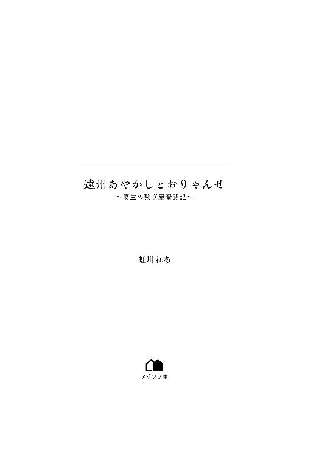

| 遠州あやかしとおりゃんせ ～夏生の繋ぎ屋奮闘記～ (メゾン文庫) | |
| 虹川 れあ | |
| 一迅社 (2018) | |

「ねぇ、ばあちゃん。今日は何のお話？」
綺麗に色付いたみかんの皮を剥く祖母に、干し芋を頬張る夏生が昔話をねだった。
居間の隅に石油ストーブが姿を現し、その上でヤカンがシュンシュンと蒸気を上げ、干し芋が炙られ始める。ソファ前のローテーブルにみかんが山盛りになった籐の籠が置かれれば、志賀家の冬の光景ができあがりだ。
祖母と並んで座り、表面がカリカリに炙られ、中身はホクホクと柔らかくなった干し芋を頬張りながら昔話を聞くのが、小学四年生の夏生の楽しみである。
孫娘のリクエストに、嬉しそうに目を細めた祖母は、みかんの小さな房を口に放り込んだ。
「そうだねぇ。礫島の話でもしようかね」
聞こえてきた名前に、夏生はぷくと頬を膨らませた。
「礫島？ 富士山を作ろうとしたダイダラボッチのお弁当に小石が入ってて、それを浜名湖に投げてできたんでしょ。何回も聞いてるよ。この間、学校に昔話をしに来たおじいちゃんも話してたし、『三ケ日の昔話』の本にも載ってたし」
抱えた膝の上に顎を乗せると、祖母はからからと笑った。
「礫島の話と言ってもね、ダイダラボッチだけじゃないのよ？」
「え？ 他にもあるの？」
夏生が驚いて飛び起きる。祖母は顔を綻ばせて、ゆったりと語り始めた。
「礫島の湖の底にはね、雌の白い龍が住んでるんだって。その龍は、雌の龍と人間が愛し合って生まれた子でね、大草山にいる雄の龍に、時々会いに行くって言われているの」
「龍と人間で、龍が生まれるの？ 何で？」
夏生にどうしたら子供ができるのかなどという知識はまだなかったが、人と人でないものがどうして相容れられたのかは気になった。
素直に尋ねると、祖母は一際柔らかな表情を浮かべる。
「何でかしらねぇ？ 本当に好きになったら、人だとか、龍だとか、そういうものが関係なくなるのかもしれないね」
「ふぅん。でも何で湖の中に住んでるの？ お父さんとお母さんは、どうしちゃったのかな？」
「何でも、他所の湖の畔に隠してあった卵を、ダイダラボッチがうっかり土と一緒に持ってきて、知らないうちに浜名湖に落としたんだって」
「やっぱり、ダイダラボッチじゃん！」
口を挟んだ夏生の掌に一房のみかんを置き、祖母は顔をしわくちゃにした。
「あれ。ホントだわぁ」
「もう、ばあちゃんってば」
みかんの房を受け取った夏生は、ぽいっと口の中に放り込んだ。祖母がくれた房は一際甘く、美味しくて、尖らせていた口元が緩んだ。
ふと、四つ下の弟・冬馬が見ている子供番組に目が留まる。画面に映っていたのは、ふさふさの金色の毛並み。雪の中を駆け回る狐の姿である。
柔らかそうな尻尾に、夏生はある光景を思い出した。
それは、金色の狐耳と尻尾を持った不思議な少年が、枯木の山を駆け上がっていく後ろ姿だ。
「イナホくん、元気かなぁ」
「きっと元気よ」
零した夏生の頭にぽんと乗せられた年季の入った掌は、石油ストーブよりあたたかかった。
これはまだ夏生の祖母が元気だったころの、冬の思い出――。
『三ケ日ぃ、三ケ日』
のんびりとした運転手のアナウンスが聞こえる。高校一年生になった志賀夏生は傍らに置いたナイロン製のスクールバッグを掴むと、肩に引っかけてバスを降りた。吹き抜けた冷たい風が、肩に沿って跳ねた黒髪をさわりと揺らす。夏生は亀のように首を竦めた。
秋風が吹く三ケ日の町に帰りついた夏生は、自宅へ向かわずにバス停から少し道を戻った。角を曲がって見えたのは、長い上り坂だ。げんなりする坂道ではあったが、目的地へ行くにはどこを通っても坂を上らねばならない。
「よし、行くか」
膝上丈のボックスプリーツスカートを揺らし、夏生は坂の上を目指して歩き始めた。ジャケットのポケットに手を突っ込んで、革靴を鳴らすと、胸元の細くて赤いリボンがぴょこぴょこと揺れる。入学式のときにはパリッとしていた無地藍色のジャケットとスカートは、衣替えを経てようやく着慣れてきたところである。
長い坂道を上りきった先にあるのは、夏生の母校である小学校だ。校舎までもう少し続く坂道の途中まで来て、夏生はぱっと後ろを振り返ってみた。
山の中腹からは、背の低い町並みの向こうに輝く湖と、それを囲うように聳える山々が見える。のどかの一言に尽きる景色に「田舎だなぁ」とぼやいた。
夏生が暮らす三ケ日町は、静岡県西部の都市・浜松市の西の端にある。年間を通じての温暖な気候と、町を囲む山々の斜面を利用して作られるみかんは全国的にも有名だが、それ以外に特別なことはない、遠州地方の静かで小さな町だ。
三ケ日の町を一瞥した夏生が向かったのは、小学校からもう少し東へ行った丘陵地にある図書館である。比較的新しい図書館はバリアフリー対応の立派なもので、夏生は週の半分ほど通っている。
というのも、夏生には年の離れた小学生の弟妹がいて、友達が遊びに来ようものならば大騒ぎになるからだ。集中力を乱す騒ぎ声からエスケープできる場所として高校受験の最中に辿り着いたのが、この図書館だった。
最奥にあるガラス張りの壁に沿って並ぶ学習スペースは夏生のお気に入りの場所だ。そのうちの一席に荷物を置き、課題である日本史の教科書を出したところで、夏生は苦い顔になってしまう。それでも、何とか奮起して、本棚の迷路の中に足を踏み入れた。
◇◇◇
「ああ、自転車で来ればよかった！」
図書館を出た夏生は、スクールバッグを肩にかけ、薄暗い帰り道を急いでいた。秋の夕暮れは早く、僅かに残ったオレンジ色もすでに消えかけている。
普段はもっと早くに帰るのだが、苦手科目の筆頭・日本史の調べ物をするために向かった書棚で『三ケ日の昔話』という小学校の図書館にあった町の伝承集を発見。ついつい読み耽ってしまったのだ。
並んでいた話はどれも祖母が聞かせてくれたもので、懐かしさに心があたたかくなったが、自身の現実逃避ゆえに持ち帰りになってしまった日本史の課題を思い出して溜め息をついた。
「伝説伝承は大好きなのに、どうして年号は頭に入って来ないかなぁ」
問いかけてみても、バッグの中でペンケースとスマートフォンが触れ合い、カチャカチャと音を立てるだけで答えはない。
「伝承のテストがあったら、かなりの高得点が取れそうなんだけど、あるわけがないよねぇ。神様とか妖怪は想像の世界のものだもん」
夏生は自嘲気味に笑った。妖怪の正体が天災や当時の流行り病、慣習だと知った今では、昔話は架空のものだと考えている。
「妖怪、本当にいたら面白いのに」
夏生の呟きに応えるように、冷えた秋風が外ハネした髪をざわめかせる。さすがに膝丈のスカートに紺色のハイソックスでは足元が冷えるのか、ぞわり、と背筋に悪寒が走った。
（図書館の中、暖かかったもんな）
室内と屋外の寒暖差にきゅっと体を縮めた夏生は、制服のポケットに突っ込んだスマートフォンを取り出した。
ストラップ代わりに揺れたのは、二年前に他界した祖母が作ってくれたお守りだ。オレンジ色の袋はやや汚れてくすんだ色になっていたが、今も立派に現役である。生前の祖母から『肌身離さずに持ち歩くのよ』と口を酸っぱくして言われた約束を守ろうとしたら、お守りは高校入学と同時に買い与えられたスマートフォンのお供になった。常に持ち歩くのならば、財布よりもスクールバッグよりも、スマートフォンが一番確実だと考えたからだ。
「夕飯、間に合うかな」
夏生は、画面に表示された時刻に背中を押され、スマートフォンをポケットに戻しながら速度を上げた。
時折吹き付ける風は冷たい。道端にはりぃん、りぃんと虫の鳴く声が響いている。人だけでなく、車通りも少ない道は、虫の声と自分の立てるバッグの中身の音、足音以外は聞こえない。
そのはずだった。
タッタッタッ......
リズミカルに歩く自分の足音に、妙な音が重なっている。
ぺたぺたぺた......
後ろに誰かいることに気付き、不審者を思い浮かべた。
田舎町でも、そういう輩はたまに現れる。それが今？ と考えると、夏生の肌は粟立ち、自然と足早になった。
しかし、ぺたぺたという足音は、しっかりと夏生のあとを追ってくる。
（嫌だな。スマホを持って歩いたら、離れてくれるかな？）
不審者対策にはスマートフォンを持って歩くと効果があると、どこかで聞いたことを思い出す。僅かな期待を胸に、ポケットから再びスマートフォンを取り出し、通話の真似をしてみた。
しかし、ぺたぺた音は止まず、縋るようにどこまでもついてくる。
タッタッタッ......
ぺたぺたぺた......
しつこい足音に、夏生はだんだんと苛立ってきて、ぎゅっとスマートフォンを握りしめた。
「普通はそこで離れるでしょ!? 何の用よ！」
自分にできる対応が尽きた夏生は声を上げ、思わず足を止めて振り返る。
負けん気が強い夏生は、護身術など身につけていなくても、切羽詰まれば相手に立ち向かってしまうという、少しばかり無謀な気質の少女であった。
だが、振り返った夏生は、スマートフォンの画面の明かりに照らし出されたものに、目を見張った。眼前に佇んでいたのは、紫色の物体。夏生のまんまるの目に負けず劣らずの見事な球体だったからだ。
「何これ？ どこから出てきたの、このバランスボール」
きょろきょろと辺りを見回すが、夏生が立っている道路脇に民家はない。
街灯もほとんどない道はやけに暗く、聞こえていたはずの虫の声も、いつの間にか聞こえなくなっていた。
急に空気が冷え込んだ気がして、十月ってこんなに寒かったっけ？ と首を傾げながらも、転がりもせずに浮かび上がっている球体を改めて見つめた。
じろじろと観察し、夏生は不思議なものに目が留まる。
「......足？ もしかして、動くバレボーちゃん人形とか？」
バレボーちゃんとは、バレーボールに目があり、手足が生えた、バレーボール大会によく現れるマスコットキャラだ。
しかし、眼前のそれは、足はあれども、手と目はない。つるつるの球体に、足だけがちょこんと生えている姿である。
足の上にボールが乗っているようにしか見えないものに、夏生はふつふつと興味が湧いてきた。元々、夏生は好奇心旺盛なのだ。
恐怖に興味が勝った夏生は、そっと近寄り、指先でツンと突いてみた。ぽよん、と跳ね返ってくる。
結構柔らかいな、と感心していると、足の生えた球体に横一閃、小さな亀裂が入った。
「へ？」
「おまえ、つついたな」
大人とも子供ともいえない、中途半端な甲高さの声が耳に届く。
「しゃ、喋った!?」と夏生がぎょっとすると、球体がくにょっと曲がった。
「おれ、しゃべるぞ。おまえ、おれがみえるのか」
「話せるの？ 超ハイテク!!」
「はいてく？」
ふに、と球体が少しだけ傾く様は、まるで首を傾げているようで愛嬌がある。
そんな動きもできるんだ、と感心していると、球体が一歩踏み出してきた。
「なぁ、おおわやまはどっちだ？」
ぺたり、と聞き覚えのある足音に、「あ」と夏生は声を漏らす。どうやら、ずっと夏生の後をついてきていたのはこの球体だったらしい。
（つまり、図書館を出てすぐくらいから、これがぺたぺたと後ろをついて来てたってこと？）
想像した夏生は、絵面の微妙さに顔をしかめた。その光景を見た人は、確実にこれが夏生の持ち物だと思ったに違いない。
だが、ペットと見るには得体が知れなさすぎる物体だ。
（――いや、大丈夫。誰ともすれ違ってないわ）
目撃者がいなかったことに安堵していると、目の前の球体がにじり寄ってきた。
「おおわやま、しらねぇか？」
カパァと口が大きく裂けた。鮫のような細かく鋭い歯が並び、きらりと光っている。
「ひゃあああ!?」
突然牙を剥かれたことに驚き、夏生はよろけて尻餅をついた。
それでも球体の足は止まらない。
「なぁ、おおわやま、しらねぇか？」
問いながら、ぺたりぺたりと間合いを詰めてくる。
「お、おおわやま？」
問われた山の名前を繰り返してみても、〝おおわやま〟は夏生の記憶になかった。
「いなりじんじゃがあるやまなんだが」
「もしかして、稲荷山のこと？」
球体が口にしたヒントから思い当たったのは、すぐそばにある小学校の裏山。稲荷神社があることから、町の人々に稲荷山と呼ばれている山である。
「稲荷山ならわかるけど。あんた、そこに行きたいの？」
「ああ。いなりじんじゃがある、おおわやまには、つなぎやがいるそうだ。ここからとおくないらしいんだが」
「確かに遠くはないけど」
そう答え、暗くなった山の方向を見やる。夏生たちがいる場所からならば、歩いても十分ほどで着ける距離だ。
しかし、〝つなぎや〟という耳慣れない言葉に首を傾げた。そんな店が稲荷山にあると聞いたことはないし、そう呼ばれる人がいるという話も聞いた覚えがない。
「つなぎやって何？」
「うつしよとかくりよを、つなぐやつのことだ」
尋ねてみても、よくわからない単語が増えただけ。
だが、〝つなぎや〟は〝うつしよ〟と〝かくりよ〟という二つの場所を繋ぐ者のことらしい。
〝繋ぎ屋〟って書くのかな、などと考えていると、ずいと球体が近づいた。
「それで、どこだ」
目の前で鋭い歯を光らせる球体に、夏生が「ひゃっ！」と短い悲鳴を上げたときだ。
「おい、お前」
背後で男の声がして、びくりと夏生の肩が跳ねる。ゆっくり振り返ると、そこには一人の男が立っていた。
短く黒い髪をサラサラと秋風に揺らした綺麗な面立ちの男は、黒地にえんじ色の太い縦縞が入った着流し姿。薄い灰色の帯を締めた美丈夫である。黒い吊り上がった目はまっすぐに、夏生の向こうの球体を見据えていた。
近所の呉服屋の人？ と頭を捻ったが、普段出歩くときにもこの格好をしているのならば町内でも有名人。すぐにわかるはずである。母の持ってくる噂話にまで思考を巡らせるも、それらしい人物は全く思い当たらなかった。
男は、からころと下駄の音を鳴らして夏生の横を通り過ぎ、謎の球体の前に立つ。
「大輪山に来るつもりだったのか」
男が呼びかける声には、威嚇も、警戒もない。ごくごく自然に声をかけた、そんな感じだ。
すると、球体は、大きな口のままで話し始めた。
「ああ、そうだ。だって、ここはいごこちがわるい。だから、かくりよにかえりたい」
舌っ足らずな口調で答える球体に、「そうか。わかった」と男が頷いた。
「俺が気付いてよかったな。今、幽世に送ってやる」
「なんだ。あんたが、おおわやまのつなぎやか。いくてまがはぶけた。たのむ」
丸い体が、待ってましたと言わんばかりに体を揺らす。
男は左腕をすうっと肩の高さに上げた。ふわりと袂がはためいて、凛とした声が通りに響き始めた。
――在るべき世界へ誘うは 遠州大輪の繋ぎ屋よ
現世 幽世 繋ぐ路 並足 一足 驀地
さあさあ あやかしとおりゃんせ――
柔らかなテノールが、朗々と言葉を紡ぐ。
心地よい声に思わず聞き惚れていた夏生だったが、眼前で起き始めた異変に唖然とした。
見る見るうちに、言葉を発する男の姿が変わっていく。黒い髪の間から覗いたのは、金色の獣の耳。そして、腰のあたりでフサッと揺れたのは、同じ色の尻尾だ。
（――狐の耳と尻尾？）
変身といってもおかしくない男の変化に目が釘付けになっていると、狐男の手の先に白い光が溢れ始める。あまりの眩しさに目を瞑った。
光が治まり、ゆっくりと瞼を開いたときには、男の左側に得体の知れない、肩ほどまである穴がぽっかりと姿を現していた。
「さ、行け」
「たすかった。じゃあな」
男に促された球体が、ぺたぺたという足音を響かせ、ボールが飛び込むように穴に入った。
「もう迷い込むんじゃないぞ。べとべとさん」
ツンとした声にも、〝べとべとさん〟と呼ばれた謎の球体は嬉しそうに「おうよ」と答えた。
「ああ、そうだ」
一度は穴に入ったべとべとさんだったが、ひょっこりと丸い体をはみ出させると、大きな口を三日月のようにした。
「はなしをきいてくれて、ありがとな。おまえみたいなにんげんばっかりなら、いごこちわるいこともなかったかもしれん」
「へ？ あ、はぁ」
どう返事をしたらいいのかわからなかったが、なぜか夏生には口と足しかないべとべとさんが笑っているように見えた。
「たっしゃでな」という声を残し、べとべとさんの姿が見えなくなる。再び白い光が周囲に満ちて、あっという間に穴が閉じた。
光が消えると、夜の闇が戻って来る。
目の前で繰り広げられた光景に放心していた夏生だったが、じゃり、と男の動く音で我に返った。
『あんたは一体何者？ べとべとさんって何？』
問おうとしたが、上手く言葉が出てこない。夏生はじっと狐男を見つめた。
対する狐男は、ちらりとも夏生を見なかった。傍に誰もいないように、からんころんと下駄を鳴らし、夏生の横を通り過ぎていく。
すれ違う袂を夏生は目で追ったが、ふさりと金色の尾が揺れたかと思った瞬間、すうっと狐男の姿が闇に溶けて消えた。
下駄の音も聞こえなくなり、いつの間にか夜の道に虫の声だけが響いていた。
「一体、何だったの......？」
残された夏生は一人、道の真ん中に座り込み、ぽつりと呟く。
（べとべとさん？ うつしよ？ かくりよ？ それに今の人、狐みたいな耳と尻尾があった。まるで、あれは――）
そのとき、手の中にあったスマートフォンが突然震えた。はっとして視線を落とし、表示された『お母さん』の文字に青ざめる。
「やばい！ 怒られる！」
慌てて立ち上がり、スクールバッグを肩にかけ直した夏生は、不思議な出来事そっちのけで、母親への言い訳を考えながら自宅へと急いだ。
◇◇◇
夏生の自宅は、小学校から伸びる坂道を下った、三ケ日町の中心街にある。
全力で坂道を駆け下りて自宅に帰り着いたかいあり、何とか母親の説教は免れた。
ほっとしたところで、夏生は先ほどの光景を思い出した。考えれば考えるほど、目の前で起きたことがまだ信じられない。
帰り道に心を落としてきたようにぼんやりとしたまま、就寝時間を迎えた。
夏生はベッドに転がり、スマートフォンの検索アプリを開いてみる。調べたのは、狐男が言っていた〝べとべとさん〟だ。
（あの二足歩行球体の名前なのかな？）
予想を立ててタップすると、狐男が口にしたままの言葉が、画面の一番上に検索結果として現れた。
夏生はゴクリと生唾を飲み込み、項目をタップする。画面はネット百科事典のページに飛んで、表示された画像に夏生は目を疑った。
映し出されていたのは、ボールのような体に鋭い歯が覗く大きな口。短い足がちょこんと生えた姿で、まさに夏生が目にした姿そのものだったからだ。
「よ、妖怪？」と声を上擦らせながら、画面に見入った。
「〝べとべとさん――歩いている人の後ろをただついてくるだけの妖怪で、特に害はない。「お先にどうぞ」と行かせてやれば消える。〟か。へぇ......じゃなくて！ あたし、妖怪を見たってことだよね？ ていうか、突いたし、喋っちゃったんだけど！」
ぽよんとした柔らかな感触を指先が、大人とも子供ともいえない微妙な高さの声を耳が、まだ覚えている。
だが、べとべとさんも狐男も、それらが姿を消す様子も、普通に考えたらありえない光景である。妖怪は空想の生き物であると思い出した途端、あのぽよんとした感触はバランスボールだったのでは？ と疑わしくなった。
「そもそも、妖怪って現実にいるの？ 伝承とか言い伝えとか作り話なんだから、あれは夢？ でも、触れたから現実？ 一体どっちなの!?」
天井に向かって問いかけてみても答えが返ってくるはずもない。考えることを諦めた夏生は、力なく枕に顔を埋める。
「――寝よう。あれは、あたしが盛大に現実逃避した結果の夢だったんだ」
夏生は自分にそう言い聞かせるのだった。
◇◇◇
「お守り、どこだろ......」
木々がざわめく小学校の裏山で、夏生は一人呟いた。必死になって探しているのは、大好きな祖母が作ってくれたオレンジ色のお守りである。
草むらで四つん這いになって探しているからか、膝は泥だらけで、手や腕もつるつるとした鋭利な葉で切って傷だらけ。それでも夏生は、諦めることはない。
「何であたしがこんな目に遭わなきゃならないのよぉぉ！」
自棄になって声を上げたのは、探し物が自分の不注意ではなく、隠されたことがわかっているからだ。
だが、悲嘆の声は誰にも届かない。傍には稲荷神社があるが、神主が常駐しない無人神社である。地域の人々によって神社周辺はある程度手入れがされているものの、その他の部分は荒れ放題。先生たちにも『危ないから奥へは行かないように』と念を押される山は、ひどく陰気で、物寂しかった。
そのうえ、神社の傍にはたくさんの赤い鳥居と幟が、だんまりを決め込んで並んでいる。その様子は子供的に――正直に言ってしまえば不気味の一言だ。
そんな『オバケが出る』という噂がいくらでもある場所に一人きりで、夏生はお守りを探し続けていた。
山のオバケというからには学校裏の稲荷山。度胸のない口先ばかりの子だから、きっと奥には行かない。山に入ってすぐのどこかに捨てたはず。
そう考えて、習い事で忙しい友達の手は借りずに探し始めたが、山に入ってすぐの場所といっても広く、荒れている。お守りが見つからないまま、時間だけが過ぎていった。
秋の夕暮れが迫り、太陽が傾き始めれば、山の中は一気に暗くなる。気にならなかった木々のざわめきが耳につき始めれば、どうしても恐怖心がむくむくと湧いてくる。負けん気の強い夏生も、落ち着かなくなってきた。
だが、大好きな祖母が作ってくれたお守りはどうしても諦められない。
探し場所を草の中から神社の拝殿前に移してみたものの、やはり見つからず、拝殿前の僅かな境内にしゃがみ込んだ。
「お守り、どこなのぉ？」
情けない声を境内に響かせても、お守りが返事をするはずがない。
傷の痛みと悔しさで、くりくりの目に涙が滲んだときだった。
じゃり、と夏生の背後に誰かが立つ音がして、びくっと肩を震わせる。振り返ることができずに固まっていると、声をかけられた。
「探している物は、これか？」
夏生が躊躇いなく振り返ったのは、聞こえた声が少年のものだったからだ。
背後を見た夏生の目に入ったのは、少年が持つ小さなオレンジ色の布袋。白いフェルトで作られた龍が躍るお守りだった。
「そう！ これ!!」
夏生は感極まり、お守りを持った少年の手をぎゅっと握った。
「めっちゃ探してたの。ありがとう！」
満面の笑みを浮かべて礼を言うと、少年の目が驚いたように大きく見開かれた。かと思うと、夏生の手を振り払って、腕で頭を覆う。
「え？」
奇妙な行動に呆気にとられていると、少年は夏生の目の前でもう一度、お守りを揺らした。
「ちょうど目に入っただけだ。見つけたならさっさと帰れよ。日が暮れる」
顔を背け、片腕で頭を隠したまま、素っ気なく告げた少年からお守りを受け取った夏生は、「よかったぁ」とお守りに頬ずりをした。少年のおかしな態度より、お守りが手元に戻ってきたことのほうが大事だった。
じゃり、と目の前で動く気配がして、夏生は我に返った。顔を上げると、少年はすでに体を翻し、駆け出していた。
「待って！」
咄嗟に追いかけた夏生は、拝殿横の小道に出たところで、あんぐりと口を開けた。
駆けていく少年は、短いサラサラの黒髪。黒の長袖シャツにカーキ色のハーフパンツ、スニーカーと、学校で見る男子たちとよく似た格好。にもかかわらず、「帰れ」と言った本人は、なぜか赤い鳥居がずらりと並ぶ小道の奥へと駆けていく。その先にあるのは山の頂上だけで、人は住んでいないはずだ。
何で？ と首を傾げていた夏生だったが、更に不思議なものが目に映った。
腰のあたりで揺れる金色の尻尾。そして、黒い髪の間から覗く金色の耳。どうやら先の妙な行動は、耳を隠したかったからだと悟った。
あれは何だったんだろう？ としかめっ面で帰った夏生は、祖母に見たことをそのまま話してみた。
すると、夏生の話を聞いた祖母は、馬鹿にすることなく、楽しそうに顔をしわくちゃにした。
「なっちゃんが一生懸命に探してたから、稲荷山に住む狐が助けてくれたのかしら。あそこは稲荷神社だし、優しい狐がいたのかもねぇ」
「オバケじゃないの？」
人に狐の耳と尻尾があるはずがない。常識だ。
狐が人を助けるというイメージも湧かず、頭を捻っていると、祖母が朗笑した。
「オバケといえばそれに近いかもしれないわね。でも、そういうものにも、怖いものとそうでないものがいるの。なっちゃんが会ったのは、きっと優しいあやかしだったのよ」
「あやかし？」
「そう。幽霊とはまた違う、不思議な存在のことを〝あやかし〟っていうの。妖怪っていうほうが、なっちゃんはわかりやすいかしらねぇ」
祖母の表情はとても優しくて。夏生は、あやかしは怖いものではないと知った――。
◇◇◇
ピピピピ......
よく知った電子音が、夏生の夢を強制終了させた。
むくりと起き上がった夏生は、画面に指を滑らせてスマートフォンのアラームを止めると、寝癖のついた髪を手櫛で梳いた。
「懐かしい夢だったなぁ......」
夢で見たお守り探し騒動があったのは、小学校三年生のとき。七年前のことである。
犯人は、クラスの中でもリーダー格の、少し偉そうな態度の女生徒で、夏生は仲が良かったわけではない。むしろ、反りが合わないタイプだった。
確執が決定的になったのは、当番の仕事をきちんと行わなかった女生徒を注意したからだったと思う。自分の仕事をせず、同じ係の気弱な子に全て押し付けている様子を夏生が目撃したのだ。
『それ、あんたの仕事じゃん。押し付けないで、ちゃんとやんなよ』
正義感の滲んだ一言が、女生徒の癇に障ったのだろう。何かにつけて突っかかってくるようになったが、夏生が取り合わなかったために、女生徒の溜飲は下がらなかったらしい。結果、相手の物を盗って隠すという、実にわかりやすく、悪質な行動に出たのだった。
にもかかわらず、夏生が女生徒の名前も覚えていないのは、夏生にとってこの出来事の重要な部分が〝お守りを隠されたこと〟ではないからだ。
お守りを見つけてくれた不思議な少年と出会ったことのほうが、夏生にはよっぽど大事な思い出なのである。
夏生は、稲穂のような金色の狐の尻尾が印象的だった少年を〝イナホくん〟と勝手に呼び始め、何度も稲荷山へ会いに行ったが、再会は叶わなかった。
とにもかくにも、夏生はこの一件から地域の伝説や伝承に興味を持つようになり、物知りの祖母に昔話をねだるようになった。祖母が他界してからは、現実逃避で本に目を通す程度になったが、今でも伝説伝承の類は好きだ。
でも、どうしてこんな夢を――と思ったところで、目覚める直前の祖母の声を思い出した。
『稲荷山に住む狐が助けてくれたのかしら』
祖母の言葉と一緒に蘇ってきたのは、金色の狐耳の少年が、柔らかそうな尻尾を揺らして、山を駆け上がっていく姿である。
（そっか。イナホくんと昨日の狐男の姿が重なったから）
理由に気付いた夏生は、眉間に皺を寄せた。
お狐様は想像の世界のもの。信仰対象で無形の存在は、現実にいるはずがないのだ。
「確かにもう一度会いたいとは思ってたけどさ。あのときのことも昨日のことも、夢としか思えない。ありえないよ」
独り言ちたところで、部屋の扉がノックされた。聞こえてきたのは母親の声である。
「早くしないと遅刻するわよ」
母親の催促に、「はぁい」と返事をした夏生は、もぞもぞとベッドから這い出した。
◇◇◇
（あれは盛大に現実逃避した、あたしの妄想だ。気にしてもしょうがない）
そう思うことにしてみたものの、どうにも狐男の姿が脳裏から消えない夏生は、学校から帰る足のまま、小学校裏にある稲荷山へと向かった。
自転車を漕いで急勾配の坂道を上ると、注連縄が揺れる石造りの鳥居が見えてくる。石の鳥居の脇に自転車を止めた夏生は、紅葉した山を見上げた。
目の前にあるのは霊良稲荷神社という無人神社だ。石造りの鳥居を潜り、木製の赤い鳥居数基と何本かの赤い幟が並ぶ中を進む。
（この赤い幟、招代だっけ。神様が降りてくる目印って言ってたかなぁ）
生前の祖母が教えてくれたことを思い起こしながら、更に奥にある階段を上がる。最も大きな赤鳥居を潜った先が、白い壁の拝殿だ。
その横には山の奥へと続く小道を、数十基もの赤い鳥居とたくさんの招代が並んでいる。人の気配は全くなく、風が木々を揺らす音が聞こえるだけだ。
「静かっていうか、寂れてるっていうか......」
静かすぎる山は不気味で、『稲荷山にはオバケが出る』という噂が立つのも頷けた。
しかし、狐男がいると思わしき山へ来てみたものの、どうしたらいいのかもわからない。「よし、お参りしよう」と、夏生は目の前にある神社に足を向けた。
だが、鳥居の外にある手水場には水もなく、枯葉が溜まっているだけ。手洗いはできないか、と祖母から習った参拝方法を仕方なく省略して、拝殿の前に立った。
二礼二拍手をしてから、「助けていただき、どうもありがとうございました」とはっきりと口に出して、もう一度頭を下げた。
礼を言ってみたものの、拝殿も山もしんと静かなまま。何も起こらない。
「......何も出てこないに決まってるよね」
残念な気持ちはあるが、当然といえばそれまでのこと。
だが、言いそびれた感謝を伝えたことで、夏生の気持ちは少しだけ晴れやかになる。
「やっぱりあれは夢だった。現実逃避だったんだ。あたし、どんだけ日本史嫌いなんだろう」
一人呟いて踵を返す。
（夢ならそれでいい。面白い夢が見れたって、そういうことにしておこう）
ようやく自分の中に落としどころを見つけた夏生は、自転車で稲荷山を後にした。
「昨日、津々崎で猿が出たんだって。先生が気を付けろって言ってたよ」
小学六年生になる弟の冬馬がそう言ったのは、夕食の席だった。思いつきで話すことが多い弟の言を、夏生はまたかと聞き流す。好物である甘めのだし汁がたっぷりの親子丼をゆっくりと味わっていると、しみじみと祖父が零した。
「猿かぁ。ま、この辺りは平気だろうが、みかん農家は気が気じゃねぇよなぁ」
夏生の自宅があるのは三ケ日町の中心部、商店が立ち並ぶ地区だ。猿が出るのは畑が広がる山の地区である。農家にとって迷惑極まりないことはわかるが、夏生にしてみれば「この町、山だらけだしね」の一言で済んでしまう話題だった。
夕飯を終えた夏生が部屋に戻ると、机の上に置きっぱなしにしたスマートフォンの着信ランプがピカピカと光っていた。
食事中はスマートフォンを携帯しないというのが志賀家のルールで、守らなければ母親に取り上げられてしまうので、夏生は渋々だが守っている。
ボタンを押して画面を点灯させると、着信メッセージの送り主・井口真凛の名と、『読む読む！』という一文が見えて、夏生は表情を輝かせた。
真凛は中学校時代の仲良しグループの一人である。夏生とは別の高校に進学したために会う機会が減っていたが、貸していた漫画本の新刊が出たことで久しぶりに連絡を取ったのだ。
期待通りの返事に『じゃあ明日持ってくね！』と返信した夏生は、ご機嫌で英語の教科書とノート、英和辞典を用意する。
「よし、やるか」とシャーペンを手に取ったところで、妙な音が耳についた。
ヒョー...... ヒョー......
窓の外で、遠くの空で、何かが鳴いているように聞こえるが、そんな鳴き声の動物を夏生は知らない。
「変な音」と呟き、頭の中から音のことを追い出した夏生は、手に取った辞典のページを捲り始めた。
◇◇◇
翌日。高校から帰った夏生は、真凛宅へと制服姿のままで自転車を走らせていた。もちろん、貸す漫画本は持っている。すでに西日が厳しい時間だったが、通学に片道一時間以上かかる夏生は、仕方がないと割り切るしかなかった。
真凛の自宅は、同じ町内でもみかんの生産が盛んな尾奈という地区にある。夏生の自宅からは自転車で二十分ほどかかるが、車通りの多い湖岸の道から、みかん畑が広がる山間へと入っていけば、まるでサイクリングのようで気持ちが良かった。
「久しぶりねぇ、夏生ちゃん」
真凛の家に到着し、母親に迎え入れられた夏生は「お邪魔しまーす」と、玄関框を踏んだ。
「いらっしゃーい」
明るい声の真凛は、奥二重の目を弓なりにして迎えてくれた。帰ってきたばかりだったのか、深いグレーのジャケットとプリーツスカートという制服姿だったが、髪は中学のときと変わらないおさげ髪だ。
「変わらないねぇ、真凛」と夏生が笑う。真凛も「そっちだって相変わらずのくせっ毛じゃない」と言い返してきて、二人は揃って声を弾けさせた。
「今日、おじさんたちは？ 外にいなかったけど」
真凛の家はみかん農家だ。家族総出で頑張っている専業農家である。この時期なら外の倉庫で農具の整備をしていることが多いのだが、今日は姿が見えなかった。何となく気になって夏生が尋ねると、真凛は苦笑いを浮かべた。
「最近、みかん畑に猿が出たからさ、その対応に追われてんの」
「そういえば、冬馬が津々崎で猿が出たって言ってたっけ。尾奈にも出たんだ」
昨日の夕食時、冬馬が猿の目撃情報について話していたことを思い出す。津々崎と尾奈は少々離れているが、野生の猿に移動できない距離ではないのだろう。
みかん農家が多いこの町では、猿などの害獣は迷惑以外の何ものでもなく、出没情報を得ることは非常に重要だ。そして、好奇心の塊である子供たちにも、野生動物には決して近づかないよう学校から注意喚起される。
現在は秋の半ば。夏を越えたみかんの青い実たちが膨らみ、色付きに向かって行く大事な時期だ。みかん畑を荒らされるのは、農家にとってたまったものではない。みかんは売り物、貴重な収入源なのである。
「やっぱり三ケ日は田舎だよね」
しみじみと夏生が呟くと、真凛がうんうんと頷いた。
「ホントにね。そういえば、なっちゃんの学校はどう？ 面白いものとか、かっこいい先輩とか先生とかいた？」
「面白いもの？」
「そうだよ。だってなっちゃん、中学のときにも『三ケ日って田舎だよね』って言っててさ。街の学校のほうが目新しいものがありそうだからって、あっちに進学したんじゃない」
およそ一年前に告げた正直な進学理由を真凛に持ち出され、夏生は「そんなことも言ったね」と苦く笑うしかなかった。
◇◇◇
真凛とのお喋りは尽きることがない。漫画の話題から、結局互いの学校生活の話になり、夏生が気付いたときには、もう日が暮れかけていた。秋の夕暮れは早いとわかっていても、話の楽しさには勝てなかったのだ。
今から真凛の家を出れば、母親のご立腹タイムには何とか間に合う。そんな時分になってようやく夏生は腰を上げた。
「そろそろ帰んないとヤバいな。それじゃ、読み終わったら教えてね。真凛」
「オッケー」
慌ててスクールバッグを肩にかけ、「お邪魔しました」と玄関を出たところで真凛が「ああそうだ」と手を打った。
「この辺ね、最近は蛇もよく出るの。なっちゃん、気を付けてね」
「うぇぇ。尾奈は蛇も出るの？」
「うん。結構トラックで轢いちゃう人、多いみたいでさ。あちこちでぺちゃんこになってるの。なっちゃん、踏まないでよ」
「気を付けなって、そっち？ せめて、びっくりして転ばないでねって言ってくれる？」
夏生が言い返すと、友人は朗らかに笑った。
「びっくりして転ばないでね」
真凛が夏生の台詞をそっくりそのまま言い直す。夏生は声を上げて笑ってから「じゃあね」と手を振って、自宅に向かって自転車を走らせ始めた。
「猿だけじゃなくて、蛇も出没注意って。やっぱり田舎だなぁ」
この町で気を付けるものは、ひったくり犯よりも動物か、としみじみ思いながら、夏生は街灯の少ない道を帰る。
（真凛とのお喋り、楽しかったなぁ）
先ほどまでの時間を思い出し、ニマニマとしながら自転車を漕いでいた夏生だったが、『街の学校のほうが目新しいものがありそうだからって、あっちに進学したんじゃない』という真凛の声が蘇ると、「確かに言ったけどさ」と苦笑に変わった。
夏生が通う高校は、三ケ日町が属する浜松市の市街地にある。市民が〝街〟と呼ぶ地域への通学には、三ケ日町からバスで片道一時間以上。バスの本数は決して多くないので、行きも帰りもタイミングを逃すと大変なことになるのが実情だ。
そんな遠い高校に通うことを決めたのは、ひとえに『市街地のほうが面白そうだから』だった。それほどに、田舎の町には刺激がないと感じていたのだ。
『ファストフード店もなければ、カラオケもゲームセンターもない。ないもののほうが多いし、三ケ日って田舎だよね。まったりしすぎ！』
都会に憧れる田舎女子そのままだった夏生は机にかじりつき、何とか受験を乗り越えて市街地の高校への進学を決めた。
しかし、実際に高校生活が始まっても、通学に時間がかかり、寄り道をする余裕はない。むしろ、バスの時間を気にして、忙しなく学校とバス停を行き来するばかりで、ゆったりとした時間が流れる三ケ日も悪くないかもしれないと心変わりし始めている。
何より、中学生の自分が思い描いた〝面白いこと〟があまりにも漠然としていたと自覚した今は、あの動機を出されると穴を掘って入りたい気持ちであり、あまり思い出してほしくない黒歴史だ。
（真凛、忘れてくれないかな）
勝手なことを思いながら、街灯が点在する農道を走り抜ける。西側の山の斜面は全てみかん畑だ。自然だらけの闇の中で、ふと真凛の忠告が頭を過り、夏生は顔を曇らせた。
『蛇もよく出るの』
夏生は、特に蛇を嫌っているわけではない。暮らす町は周囲を山に囲まれているし、小学校の裏は稲荷山だ。たびたび見かけるので、「だって生き物だもん。そこらへんにいるよね」という感覚である。
だが、触りたいか、遭遇したいか、と問われれば否だ。急に出てくれば驚くし、できれば会いたくない部類の生き物ではある。
「出てこないに越したことはないよね」
独り言ちたときだ。自転車の頼りないライトが、紐状の何かを照らし出した。
甲高い音を鳴らし、夏生が自転車のブレーキをかけると、やはりそこには蛇がいた。ただし、すでにトラックか何かに轢かれてぺちゃんこになっている。
「こういうのが多いのか、尾奈。嫌なもの見ちゃったなぁ」
聞いていたとはいえ、いざ目にすれば、夏生もいい気分ではない。かといって、潰れた生き物の死骸を道の端に退けるだけの気持ちもなく、目を逸らして、薄っぺらくなった蛇の横を通り過ぎようとペダルを踏みかけたときだった。
――もぞり。
平べったい蛇が動いたように見え、夏生の動きが止まった。
「......気のせい、だよね？」
誰にともなく確かめるように呟いたのは、僅かに湧いた恐怖心を打ち消すためだ。
（ぺちゃんこになった蛇は動かないでしょ）
自分に言い聞かせ、ペダルを踏もうとする足が竦んだ。潰れていたはずの蛇の頭がぐいと持ちあがり、黒い目がじっと夏生を見たのである。
「......いやいや、そんなわけない！」
ごしごしと手の甲で目を擦り、そおっと腕の向こうの様子を窺ったところで、「うそでしょ」と声が漏れた。
眼前では、やや太めの茶色い蛇がとぐろを巻いていて、潰れた蛇の姿は跡形もなく消え去っていた。
（蛇の死骸はどこに行ったの？ そして、こいつはどこから出てきた？）
全くもって意味不明の状況に表情を強張らせていると、蛇がちろりと舌を出した。
「不思議な人の子よ、頼みがある」
ざらついた声が聞こえてきて、夏生はきょろきょろと辺りを見回し、誰もいないことを確かめてから視線を落とした。黒い瞳の蛇と目が合い、恐る恐る尋ねる。
「今、あんたが喋ったの？」
「我らを手伝え」
「手伝うって、一体何を？」
「探し物だ。なぁ、同胞たちよ」
夏生の問いに答えるつもりはないのか、一方的に協力を求めた蛇が、頭をくいっと山のほうへ向ける。
その動きに倣って視線を向けた夏生の背に、ぞわわっと悪寒が走った。
街灯の弱々しい灯りの下に現れたのは、ずんぐりとした蛇の大群。黒い無数の眼が、じっと夏生を見つめていた。
「さ、人の子よ。我と共に来い」
ずり、ずりり......
傍にいた蛇が声を上げると、地を這う音が響いてきた。蛇の移動は音などしないはずだが、たくさんいるからなのか、地響きのような振動が足の裏から伝わって来る。
「いや、あたし、早く帰んなきゃ......」
夏生は顔を引き攣らせ、やんわり断ろうとしたが、蛇たちは聞く耳を持たなかった。ガシャンと自転車にぶつかってきた衝撃で、夏生は思わずハンドルから手を離してしまう。ぐらりと傾いた自転車は、蛇たちの上にひっくり返った。
「ちょ、自転車！」
手を伸ばし、自転車のハンドルを掴もうとしたが、夏生の足元は蛇だらけ。辛うじて落ちたスクールバッグには手が届き、何とか胸に抱いたところに、後ろからドン！ と何かがぶつかってきて、体勢を崩す。地面に叩きつけられはしなかったが、蛇の海に顔面からダイブした。
「きゃああ！ 気持ち悪い！」
悲鳴を上げた夏生が急いで体を起こそうにも、縛り付けられたように身動きが取れない。夏生を乗せた蛇のマットは、どこかへ向かって動き出した。
ずずず......
うつ伏せになったまま動けない夏生の頬に蛇の鱗が触れる。つるつるとしていてゴムホースのようだが、実際は蛇だ。蛇好きならばウェルカムだろうが、夏生は纏わりつかれて喜べるほど蛇好きではない。
何より、どこへ連れて行かれるのかがわからず、スクールバッグをぎゅっと抱きしめた。バッグの中にあるお守りに助けを乞うが、やはり手作りのお守りでは効果がないのだろうか。当たり前のように、何も起こらない。
「はーなーしーてー！」
夏生がどれだけじたばたともがき、喚き散らしても、蛇たちは全く意に介してくれず、止まることはなかった。
ざわざわと木々の鳴る音で、森の中に入ったことがわかる。やがて、体に伝わる振動がぴたりと止まったかと思うと、さっと蛇のマットがなくなった。
飛び込み失敗の姿の如く、体の前面から地面に落ちる。「いったーい！」としかめっ面で起き上がり、スクールバッグを抱きしめたまま立つ。パタパタと制服についた枯葉を叩いて、夏生を取り囲むように並んでいる蛇たちを見回した。
「ここはどこなの？ 何を探すのよ」
夏生が問うと、どこからか先ほどの蛇の声が聞こえてくる。
「頭だ」
「あ、頭？」
「そうだ」
「だってあんたたち、みんな頭あるじゃない」
「我らの頭ではない」
「じゃあ、誰の――？」
端的すぎる蛇の言葉は意味がわからず、夏生が首を傾げたときだ。
ヒョー...... ヒョー......
どこからか、細く気味の悪い音が聞こえてきた。びりびりと足の裏がむず痒い。
（地面に何かいる？）
頭を捻っていると、蛇たちがすっと頭を持ち上げる。そして、音もなく、蛇の輪の中央にいる夏生ににじり寄ってきた。
「え？ な、何？」
友好的な雰囲気だったはずの蛇たちの様子が一変したのを夏生は感じた。蛇たちは赤や黒の先割れ舌をちらちらと揺らし、つぶらな目を鋭く光らせている。
「待って。何、あたしはどうしたらいいの？」
必死に呼びかける夏生に、蛇たちは獲物を狙うかのような獰猛な眼差しを向け、飛びかからんと身を縮めた。
まずいと思っても、周囲をぐるりと囲まれた夏生に逃げ道はない。スクールバッグを抱きしめ、体を竦ませた。
「きゃぁぁぁぁっ!!」
夏生が悲鳴を上げると同時に、バネのように体をしならせた蛇たちが、示し合わせたように飛んで来た。
（これだけの数の蛇に噛みつかれたら痛いし！ 毒蛇がいたらどうしよう！）
硬く目を瞑ったが、痛みが来るより先に、足元が地面から離れた。
ひゅっと、耳に届いたのは風切り音。
次の瞬間、靴底に枯葉を踏む感覚がした。そっと瞼を開けると、誰かが夏生の肩を抱いていた。
「――え？」
見上げた夏生は息をのんだ。さらりと揺れる黒髪と、吊り上がった目尻が印象的な整った顔立ちが見える。
夏生を抱いていたのは、べとべとさんと共に出会ったあの男だった。
「またお前か。早く立て」
聞き覚えのあるテノールに言われ、夏生は我に返る。慌てて立つと、男は蛇たちを睨んだまま夏生に告げた。
「あれを恐れるな。手負蛇は恐れる者を襲う。食われたくなかったら、毅然としていろ」
「手負蛇って？」
夏生が聞き返すが、男が答えてくれる様子は全くない。
この前のときのほうがもう少し柔らかな雰囲気だったのに、と夏生が訝しんでいると、「何だ？」と、男が前方を見据えたまま眉を顰めた。
男の視線を追った夏生は、大きな目をめいっぱいに見開いた。
夏生を襲ったことで空き地の中心に集まった蛇たちが、互いに体を絡め合っていたのだ。
二匹の蛇が絡んで一つの塊に。
二匹の蛇の塊が絡んで四匹の蛇の塊に。
四匹の蛇の塊が絡んで、八匹の蛇の塊に――。
ヒョー...... ヒョー......
不気味な音に呼応するように、蛇の塊は次第に大きくなっていく。一つの塊になったところで、周囲の落ち葉がどこからか湧いた風に巻き上げられた。地の底から湧き上がった落ち葉たちが蛇の塊を隠したかと思った刹那、ガラス片が飛散るように弾けた。
まるで隠れた蛇たちが中心で破裂したかのような勢いに、夏生は体を竦める。バシバシバシ！ と落ち葉が何かに当たる音がしたが、痛みは感じない。
そおっと目を開けると、夏生は男に庇われていた。顔を覗かせてみると、その背丈ほどもある大きな鉄の扇子が、まるで楯のように夏生と男を守っていた。
やがて、ぶつかる音が静かになった。鈍色の扇子はみるみるうちに小さくなり、男の手中に納まる。
「手負蛇が合体するとは思わなかったな」
魔法のような光景に唖然としていた夏生は、男の声にはっとしたが、男の体越しに見えたものに肌が粟立った。
空き地の中心にいたのは、黒い大蛇だった。男の口ぶりからして、先ほどの蛇の塊が大蛇になったらしい。
そんなことがあるのか？ と戸惑う夏生に反応するように、大蛇の頭がぐりんと向く。蛇の目は深い闇のように暗く、口からは二又に分かれた舌先がちろちろと覗いていて、夏生は思わず目の前の腕に捕まった。
「何あれ!? 何ででっかくなっちゃったの!?」
「知るか」
夏生の疑問はすっぱりと切り捨てられたうえ、捕まえていた腕もあっさりと男に振りほどかれた。掴むものがなくなった掌が、ふらふらと宙を彷徨う。
不安になった夏生が男を見上げると、気付かないうちに男の体には金色の狐耳と尻尾が現れていた。
だが、守ってくれた腕の逞しい感触は、狐男の存在が確かなものだと教えている。
（夢じゃない。この状況も、狐男の存在も――）
狐男の横顔をじっと見つめると、溜め息混じりの呟きが聞こえた。
「さっさと片付けるか」
狐男は夏生を置いて、鉄扇を片手に飛び出していく。
同時に大蛇もまた大きな口を開け、体をしならせ跳躍したが、狐男は怯むことなく迎え撃つ構えをとり、閉じた鉄扇で顎の下から打ち上げた。
弾き飛ばされた大蛇は大きく仰け反ったものの、倒れることなく頭を戻す。怒りを滾らせた暗い目が標的を追い、再び襲いかかろうとする。しかし、金の尻尾は大蛇の動きを察したように、ひゅっと空に昇って、黒い蛇の頭に鈍色の鉄扇を振り下ろした。
ズドン！
大蛇の頭が地面に叩きつけられ、まるで別の生き物のように尾がうねった。びゅっ！ と鞭を振るうような音がして、大蛇の尾が狐男の体を打つ。
「ぐ......っ！」
短い呻き声と共に黒地の袂が宙で翻り、夏生から少し離れた木の幹に狐男がぶつかった。木が大きく軋む音がして、枝に辛うじて残っていた枯葉が散った。
「だ、大丈夫!?」
夏生の叫び声も、狐男には反応がない。
狐男を弾き飛ばした大蛇の目が、ぎろりと夏生に向いた。
倒れた狐男に駆け寄りたい夏生だったが、まさに蛇に睨まれた蛙状態。じりじりと後退するしかできない。
少しずつ下がるうち、背に木の幹がぶつかった。退路がないことを知らされ、夏生は顔を引き攣らせる。
（この状況で怖がるなとか無理だよ！）
心の中で文句を言うが、それも恐怖と捉えられているのだろう。大蛇はいつでも飛びかかれるぞ、と言わんばかりに、ゆっくりと間合いを詰めてくる。
夏生はスクールバッグを抱きしめ、身を縮めていたが、薄く開いた口に光る鋭い牙にぞっとなり、必死で問いかける。
「あたしを手伝いのために呼んだんでしょ？ 結局、手伝いって何なの？ ねぇ、蛇さん！」
夏生の声は黒い大蛇には届いていないのだろう。ガパァ、と大きな口を開け、体を大きく引いた。獲物に食いつく体勢を取った黒い瞳に躊躇いはない。真に迫った身の危険に顔が青ざめた夏生が、バッグで頭を隠した瞬間だった。
「来ないでぇぇぇっ!!」
カッ！ と、白く強い光が周囲を満たしたのが、固く閉じた瞼越しでもわかった。
閃光に怯んだのか、大蛇が夏生に飛びかかって来ることはない。
代わりに、スパァン！ と快音が響き、大蛇の悲鳴が闇にこだまする。
夏生が恐る恐るスクールバッグの陰から顔を覗かせると、眼前で着流しの黒い裾と、金の尻尾がふわりと揺れていた。
ほっとして見上げると、夏生を見下ろす冷たい視線とかち合った。
「お前、今、何をした？」
意味不明の問いかけに、夏生は目に涙を浮かべたままできょとんとした。手負蛇に「来ないで」と叫んだくらいで、特に何もしていない。だから「別に、何も......」と答えるのは当然のことだ。
しかし、その返答は狐男の意にそぐわなかったようで、呆れたように顔を歪められてしまった。
「な、何よ」
むっとして言い返すと、男は夏生を睨んできた。
「恐れるなと言ったのを忘れただろう」
「うぐ」
凛とした声に叱責されたが、事態が理解できていない夏生は、何をどう答えたらいいのかわからない。ただ、怖かったことは確かで、むくれたまま狐男を見上げた。
一方の狐男は溜め息を一つついて、倒れている大蛇へと目を向けた。
「今のうちに送るとするか」
すっかり眼を回している大蛇に歩み寄った狐男は、鉄扇を袂に仕舞うと、左手を肩の高さに掲げた。
――在るべき世界へ誘うは 遠州大輪の繋ぎ屋よ
現世 幽世 繋ぐ路 並足 一足 驀地
さあさあ あやかしとおりゃんせ――
凛と響く男の声が、空気を震わせる。べとべとさんを消したときに聞いたものよりも力強く感じられたが、大蛇への恐怖に心が支配されている夏生は、男の悠長な様子に焦りを滲ませた。
「そんな余裕かましてる場合じゃ......！」
たまりかねた夏生が口を挟むが、狐男に「煩い！」と一蹴された。その迫力にぐっと口を噤んだ夏生は、目の前の光景を見守るしかなかった。
やがて、男の左手の先に白い光が集まり、大きな円を描きだした。ぽっかりと口を開けた穴の大きさは、狐男二人分ほどの高さ。べとべとさんのときは肩の高さほどだったことを考えると、倍以上はある。光に縁どられた穴の向こうは、漆黒の闇だった。
「大きい穴......」
思わず声を漏らすと、「黙ってろ！」と再び睨まれた。
口を両手で押さえて様子を窺っていると、狐男が穴の中を覗き込んで声をかけた。
「おい、元興寺。強制送還だ」
強制送還の言葉にきょとんとしていると、闇の穴の中から毛むくじゃらの太い腕と、蛇が巻き付いた頭がひょっこりと出てきた。ぎょろりと大きな目は鬼を彷彿させ、夏生は「ひゃっ！」と短い悲鳴を漏らす。
驚く夏生を他所に、狐男は、ボロボロの僧衣を羽織った鬼・元興寺を見た。
「何だ、半狐。今日はそのデカい蛇か」
言いながら、元興寺が太い腕を伸ばし、倒れている大蛇の尾をがっしりと捕まえる。
小さく頷いたところを見ると、どうやら〝半狐〟というのが狐男の呼び名らしいと夏生にもわかった。
「ああ、どういうわけか、手負蛇の群れが合体してな。暴れたから一発食らわした」
いや、一発じゃなかったよ？ と夏生は言ってやりたかったが、目の前で繰り広げられているのは、巨体の鬼が黒い大蛇を捕まえて狐男と話しているという、あまりに現実離れした光景だ。口を挟むには心身ともに疲弊しすぎていて、夏生は黙って見つめた。
「不思議なこともあるもんだな。まぁ、こいつは連れて行くわい」
何も問題ないと言うように、元興寺が大蛇を穴の中へ引っ張り込もうと力を入れたときだ。だらんと弛緩していた大蛇の体が突然、ばしん！ とうねった。
「おっと！」と元興寺が尾を押さえつけると、体が真っ二つに千切れ、数匹の小さな蛇が地面に落ちる。落下した手負蛇たちは急いで草木の陰に姿を隠したが、頭の部分はしっかりと形を残していた。
ヒョー...... ヒョー......
不気味な音が鳴ると、千切れた蛇の上半身が宙で、魚のようにびちりと跳ねた。
「な......っ!?」
夏生は呆然と、空中で蠢く蛇の頭を見つめるしかできない。
半狐にもまた予想外の事態だったのだろう。驚きに大きく目を見開いていたが、はっと我に返り、蛇の頭に手を伸ばす。
しかし、その手が捕まえるよりも先に、千切れた蛇の上半身は闇に溶けて消えた。
「逃げやがったな、手負蛇。往生際の悪い奴め」
大蛇の尾を引きずり込み終えた元興寺が舌打ちをする。
頭が消えた空間を見つめていた半狐は大きな溜め息をつき、がりがりと頭を掻いた。
「残りは見つけ次第、そっちに送る。尾のほうは頼んだぞ」
「おうよ。ご苦労さん」
半狐にひらりと手を振り、元興寺は暗い穴の中に帰って行った。
周辺が静かになると同時に、穴は消えてしまった。白い光も消え、闇が戻って来る。
木の幹を背に立っていた夏生は、ずるずると座り込んだ。呆然と半狐を見つめていたが、当の狐男は夏生を無視して歩きだそうとしたので、思わず着物の裾を掴んだ。
「今のは何だったの？ 鬼とか、大蛇とか。あんたが開けた穴はどこに繋がってるの？ てか、吹っ飛ばされてたけど、怪我はしてないの？ ねぇ、お狐様!!」
だんだんと捲し立てる勢いになって、訴えるように半狐を見つめた。
半狐は「おきつねさま？」と不思議そうな顔をしたが、すぐに意味を理解したのだろう。渋い顔付きになった。
「俺は宇迦之御魂神様じゃないし、稲荷神使でもない。妖狐のなり損ないだ」
宇迦之御魂神と稲荷神使は、どこかで聞いた覚えがある言葉だったが、すぐには意味が引き出せない。そのうえ、半狐は吐き捨てたような口調で、夏生は目をしばたたかせる。
対する半狐は不満げにそっぽを向いた。
あやかし？ と夏生は首を傾げたが、はっとして立ち上がった。
「ああ、そうだ！ まずはお礼だよね。神様じゃないって言っても、祟られたらたまんないし！ 今も、この間も、助けてくれてありがとうございました！」
見事に本音を漏らしながら、ぱたぱたと落ち葉を叩き落とした夏生が、ぺこりと頭を下げた。
金色の狐耳と尻尾が生えていて、蛇の化物と戦ったり、宙に穴をあけたり、鬼を呼び出したりする得体の知れない男。神ではないらしいが、助けてくれたことには変わりない。
それに、半狐は人間に近い姿をしているせいだろうか。過去に出会った狐の少年と姿が重なったこともあり、夏生は怖さを感じない。安堵と相まって、顔を綻ばせた。
しかし、男は、呆れ顔で踵を返す。
黙ったままざくざくと落ち葉を踏みしめる半狐を、夏生は「待って！」と追いかける。着流しの袂を引くと、男の足が止まった。
「何だ」
不満げな声と共に振り向いた半狐に、夏生は苦笑いを浮かべる。
「ここはどこ？ わかるところまで連れてってほしいなぁ」
夏生のお願いに、半狐が盛大な溜め息をついた。
◇◇◇
夏生が自転車とはぐれた場所は、手負蛇と対峙した空き地からそう離れていなかった。倒れていた自転車を起こし、夏生はほうっと息を吐く。
「何だ。こんなに近かったんだ」
「不用意に応じるから、あっさりと蛇どもの縄張りの中に誘い込まれるんだ。全く、しょうがねぇ奴だな」
「無理矢理連れて行かれたの！ あたしのせいじゃないもん！」
半狐の呆れた声に言い返したものの、疑問はたっぷりとある。
夏生は半狐の顔を覗き込んだ。
「ねぇ、手負蛇とか縄張りとか。それこそ鬼とか、穴とか、あんたのこととか。意味不明なことばっかりなんだけど、一体何がどうなってるの？」
「あやかしの世界のことだ。人間は知らなくていい」
ぴしゃりと言いきった半狐が夏生に背を向ける。これ以上話すつもりはないと背中が語っていた。
夏生は納得していなかったが、ふさりと揺れる金の尻尾に、もう一度感謝を告げた。
「ぶっちゃけ、事情は一つもわかんないんだけど、助けてくれて本当にありがとう。今度、お礼させてよ」
「礼？」と半狐が怪訝そうな声を出した。
「俺は自分の仕事を全うしただけだ」
「仕事？」
問うてみるも、半狐にはやはり答える気はないらしい。
無言のままで、真上へと飛び上がり、半狐は金色の狐に姿を変えた。変身を目の当たりにしたが、夏生に恐怖心は湧かない。それほどまでに、月の光を背負った狐は美しかった。
高い電柱の上から、半狐が夏生を見下ろした。
「礼をすると言ったな。何をするつもりだ、人間」
「何って。お供え物でも持って行こうか？ 稲荷寿司、好き？」
「......嫌いではない」
降ってきた半狐の声はツンとしているが拒絶ではない。夏生は笑った。
「わかった。ちゃんと持って行くよ。約束！」
「できるものならやってみろ」
すっと右手の小指を差し出した夏生に、狐は挑発的に告げると、電柱の先端から宙に飛び上がる。金色の狐はあっという間に闇に消えてしまった。
「消えちゃった......」
呆然とした夏生は、星が瞬く空を仰ぐしかできなかった。
◇◇◇
夕食と風呂を終えた夏生はベッドにゴロンと寝転んだ。
「変な一日だったなぁ」
さすがに蛇や狐男の感触があり、騒動に巻き込まれたとなると、もう夢や幻ではすまされない。体験した夏生には確かな現実だ。
「そういえば〝うかのみたまのかみ〟って、何だっけ？」
夏生は枕元に放ってあったスマートフォンに手を伸ばし、呼び出した検索アプリに、ひらがなのまま打ち込む。すると、すぐに答えが現れた。
「ええと、〝宇迦之御魂神――五穀豊穣、商売繁盛、家内安全、交通安全、火災や災難除け、子孫繁栄、学業成就、芸能上達の神様である。稲荷神社に祀られ、〝お稲荷さん〟と呼ばれる。〟それから〝稲荷神使――宇迦之御魂神の使いのこと。狐の姿であるのは、宇迦之御魂神の別名・御食津神という呼び名が狐の古い呼び名である『けつ』を連想させたから。そのため、稲荷神社は狐の神様だと混同されていることが多い。〟ああ、それ、あたしだ」
書かれていた内容に、夏生は苦笑してしまった。
『稲荷神社の神様は宇迦之御魂神様で、お稲荷様。お稲荷様に仕えるのが、稲荷神使様で、お狐様よ』
生前の祖母の教えをよくよく思い出してみれば、書かれた説明の通りに言っていたのに、しっかりと覚え間違いをしていたのだ。
「でもあの人、神様じゃなくてあやかしだって言ってたっけ」
呟いたところで蘇ったのは『幽霊とはまた違う、不思議な存在のことをあやかしっていうのよ』といった祖母の声だ。
幽霊よりも具現化された、不思議な存在。狐男も自らを『あやかしだ』と断言していたし、『あやかしの世界』とも口にしていた。
「とりあえず、あの狐さんはあやかしなんだね、うん」
夏生は自分を納得させ、次の語句を打ち込んだ。夏生を襲った〝手負蛇〟である。
「ええと、何なに。〝手負蛇――人間によって傷付けられた蛇の妖怪。邪念や恐れのある者の元にしか現れず、悪気の無い悪戯で傷つけた者を怨むことはない。蛇への悪戯を目撃した別の人間が恐れを抱いたら、恐れた者が祟られる。〟って。めちゃくちゃ迷惑だし、大群で襲ってきたら怖がるなってほうが無理だよ！」
思わず文句を垂れた夏生は、仏頂面になりながらも、スマートフォンを操作する。
打ち込んだ言葉は〝妖狐〟。漫画や伝承にはよく出て来る有名な妖怪だが、改めて調べようと思ったのは初めてだ。そもそも、存在しているとは思っていないので調べるきっかけなどそうない。
「〝妖狐は、狐の妖怪。人に変化したりして化かす。〟か。やっぱりそうだよね」
予想通りの記述のあとに色々と書き連ねられていたが、とりあえず金色の狐だった半狐は〝善狐〟というものらしく、悪い狐ではなさそうだ。悪者ではないとわかり、怖さは更に減ったが、再び疑問が湧いた。
（でも、なり損ないってどういうことだろう？ 〝ハンコ〟はあいつの名前なのかな？）
考えてはみたものの、答えはわからない。
半狐の姿と共に思い出されるのは、〝かくりよ〟という場所に繋がっているらしい、穴を開けるときの朗々としたテノールと、月の光を受けて煌めいた金の尻尾だ。
黄金色に輝く稲穂のような半狐の尻尾と、小学生のときに稲荷山で出会った狐耳と尻尾を持った〝イナホくん〟が重なる。
「――やっぱり。あの人がイナホくんなのかな」
冷たい目をしているくせに、どこか優しい半狐。金の稲穂のような尾を持った、美しいあやかしのことが頭から離れない。
（助けてもらったの、きっと三回目。今度こそ、ちゃんとお礼をしなきゃ）
そう考えながらも、騒動続きで疲れた夏生の瞼は自然と下りてきて、そのまま眠りに落ちた。
◇◇◇
夏生が稲荷山に向かったのは、巨大な手負蛇から救われた数日後の土曜日だった。
『昼ご飯はいらない』とキッチンのテーブルに書き置きを残してきた夏生は、近所のスーパーマーケットで稲荷寿司のパックと飲み物、少しばかりのお菓子を買い、自転車で母校である小学校の裏山を訪ねた。
到着したのは昼過ぎ。よく晴れた青い空には、秋らしい羊雲がたなびいている。
「......来たはいいけど、どうしたらいいんだろう。待ってたら出てきてくれるのかな」
霊良稲荷神社の拝殿前に立ち、参拝を済ませた夏生は首を傾げた。
半狐には『持って行くから』と約束したものの、いつ、どこに行けば会えるのかを聞きそびれていた。
だが、べとべとさんの言葉が正しければ〝繋ぎ屋〟は半狐のこと、その本拠地はこの稲荷山のはずだ。
これが友人ならば、スマートフォンで「今どこにいるの？」と聞けばいいだけの話だが、いかんせん今回の相手は人ではない。文明の利器など持っているはずがないし、持っていたとしても連絡先を知らなければ、持っていないのと同じである。
食べ物が入ったレジ袋を傍らに置いた夏生は石段に腰を下ろし、半狐が出て来るのを待ってみることにした。
しかし、待てど暮らせど、霊感のない夏生にはあやかしの気配など一向に感じられない。それどころか、冷たい風が吹き抜けて、なぜ自分はこんなところに一人でいるのかという思いが、むくむくと湧いてきた。
静寂に耐えきれなくなり、勢いをつけて立ち上がると、社の横にある赤鳥居と招代が並ぶ小道の入口に立つ。木々が生い茂る山を見上げ、大きな声を上げた。
「稲荷寿司持ってきたんだけど!! どこにいるのよ、イナホぉぉぉっ!!」
叫び声は、鳥居と赤い招代たちに吸い込まれて消える。
しかし、山はしんと静かなままで、当たり前のように鳥居たちからも返事はない。
べとべとさんも手負蛇も、半狐も、やはり自分が見た夢幻だったのかも、としょんぼりした夏生が、「出て来るわけないか」と鳥居の小道に背を向けたときだった。
コロコロ、と小石が転がる音が聞こえ、動き出そうとした夏生の足が止まった。
「え......」
振り返ろうとした瞬間、夏生を追い越すように、小さな影がひゅっと通り抜けた。ぞわ、と夏生の右腕に鳥肌が立つ。
突然現れた気配を追うように、拝殿のほうへ視線を向けて、言葉を失った。
着物姿の少年が、置きっぱなしにしたレジ袋の中を覗き込んでいたのだ。こげ茶色の柔らかそうな短髪の少年の姿は、着物という点を除いても異様だった。
（さっきまでは子供なんていなかった。しかも、狐耳と尻尾付きの子供なんて――！）
きゅ、と拳を握った夏生が「イナホ？」と恐る恐る声をかけると、少年がびくりと肩を揺らした。
ゆっくりと夏生のほうを見た少年は、ひくっと頬を引き攣らせる。
「やっべ！ 見えてる？ ねぇ、おれのこと見えてる？」
見えてはいけないのにと言いたそうなくせに、相当焦っていたのだろうか。萌黄色の着物を着て、膝小僧をむき出しにした草履の少年は夏生に問いかけ、心配そうに薄茶色の大きな瞳を揺らした。そのくせ、レジ袋から手を離そうとはしない。
「見えてるけど......」
狐少年の言動に呆気に取られていた夏生が、ぽつりと答えたときだった。
「このアホ」
聞き覚えのあるテノールと、下駄の乾いた音が響いて振り返った。
いつの間にか夏生の後ろに、黒地にえんじ色の太い縞模様が入った着物を着た若い男が立っている。金色の狐耳をぴこん、と動かし、尻尾を揺らした半狐は夏生の隣を通りすぎて少年に歩み寄ると、腰のあたりにある頭に手刀を落とした。
ゴッ！ と鈍い音と共に聞こえたのは「いってぇ！」という涙声だ。
「狐耳に尻尾の人物が二人？ 兄弟？」
夏生が目をしばたたいていると、振り向いた半狐が呆れた顔を向けてきた。
「本当に持ってくるとは思わなかった。バカか、お前」
投げかけられた冷たい声に、夏生はようやく我に返る。
急いで拝殿の前に駆け戻り、少年の首根っこを捕まえている狐男を仰ぎ見た。
「な、何よ。やれるものならやってみろって言ったのはイナホでしょ」
頬を膨らめて詰め寄ると、半狐が不満げに目を吊り上げる。
だが、空気を読まない少年は首を傾げた。
「なぁ、半狐。イナホって何？」
「お前は黙ってろ、妖狐。稲荷寿司の匂いにつられて、ホイホイと出て行きやがって」
びし、と今度はデコピンを食らわされた妖狐の少年は、再び「あだっ！」と呻いた。
「お前も勝手な呼び名を作るな。俺は半狐。それ以外の何者でもない」
そう告げて、ぷいっと視線を逸らす半狐。不満たっぷりで愛想のない言い方だが、大蛇と相対していたときのような刺々しさは感じられない。
（あれは、手負蛇が暴れてたからキツい顔してたってことなのかな。今も怒っているわけではない、よね？）
半狐の態度にくすりと笑って、夏生は頭を下げた。
「この前はありがとう。約束したからには、ちゃんと持って来なきゃと思って」
「こっちはあやかしだぞ」
「知ってる。でも、恩人には違いないもん。それに、助けてもらったの、三回目だし」
夏生は素直に告げた。たとえあやかしであろうと、ピンチを救ってもらった事実は変わらない。その礼をすると約束したのだから、違えるのは良くないだろう。
「三回目？」と半狐が訝しんだ。
背中のワンショルダーバッグからスマートフォンを取り出した夏生は、揺れているオレンジ色のお守りを、半狐の鼻先に突き出す。
「そう。あたし、三年生のときにここで狐耳の男の子にお守りを見つけてもらったの。それもあんたなんでしょ？ だから、三回目」
妖狐と呼ばれる少年のほうが記憶の中の姿に近いが、妖狐の髪はこげ茶色だし、七年も前の出来事である。更に、夏生のお守りを見つけてくれた少年が黒髪だったことを考えると、背丈こそ違うが半狐だったと考えるほうが妥当だ。
半狐も夏生の返答に思い当たる節があったのか、「やっぱり、あのときの妙なガキか」とばつが悪そうに視線を逸らし、がりがりと頭を掻いた。
「ガキって。あんたも小さかったじゃん」
「あれは、お前に合わせて姿を変えていただけだ」
「そうなの？」
返ってきた返事に、夏生が目を丸くする。
対する半狐は顔を背けて「しょうがねぇ奴」とぼやいた。
「なー、半狐。これ、食っていいの？ 猫とおばばも呼ぼうよ」
首根っこを掴まれながらも、レジ袋をしっかりと抱きしめた妖狐が口を挟んできた。
ぎろりと睨みつけた半狐が、ぽいっと妖狐を放り出す。尻餅をつくかと思いきや、腰で蝶々結びになった藍色の帯をふわりとさせた少年は見事な着地を決め、にんまりと笑った。
夏生は二人を交互に見た。
「他にもいるの？ あやかし」
「ああ。あと二匹いるぞ！」
「あんたの家族？」
元気いっぱいに妖狐が頷いたが、半狐は溜め息をついた。
「あやかしに家族という概念はない」
「でも、一緒にいるってことは、仲がいいんでしょ？ せっかくだし、紹介してよ」
にっこりと笑う夏生に、半狐がもう一つ深い溜め息をつき、頭を抱えた。
「お前、本当にわかってるのか？ これ以上、あやかしの世界に深入りしても――」
「ねこー。おばばー。めしぃぃ！」
反論しようとした半狐の声を無視し、妖狐が叫ぶ。
話の腰をぽっきりと折られた半狐は、無言で拳骨をくり出したが、自由になった少年はレジ袋を抱えたまま、ひらりと半狐の拳を躱した。
「本当にしょうがない子だね。妖は」
しわがれた声が、どこからか響いてきた。
声がしたのは、赤い鳥居が並んだ小道の方向だ。顔を向けると、よたよたと歩く年老いた三毛猫と、小さな白猫の姿があった。
ざぁっと風が吹き、落ち葉が舞い上がる。二匹の猫が一瞬、夏生の視界から消えたかと思った次の瞬間には、二人の人影に変わっていた。
一人はしわくちゃの顔に、長い白髪を一つに結った老婆。三毛猫の模様そのまま、白地に茶色と黒のまだら模様が入った着物を着ていて、同じ色柄の耳と二又に分かれた尾をゆらゆらと揺らしている。
もう一人は妖狐と同じくらいの年頃の可愛らしい少女だ。袂に数輪の桃の花が描かれた白い着物を着て、紅色の蝶々結びの帯をふわりと風になびかせる。黒髪を首のあたりで二つに括り、水晶のような澄んだ瞳を持った少女もまた、その頭で白い猫耳が、腰のあたりで白い尻尾がひょこんと動いた。
「えっと、猫娘？」
夏生が真っ先に思い浮かんだ猫の妖怪の名を口にすると、少女が警戒したように、さっと老婆の陰に隠れた。
「あんたが、半狐が助けた人間かい。運が良かったねぇ」
ゆっくりと歩み寄ってきた老婆は、夏生よりも背が低い。
見下ろす形になった夏生は、猫娘たちと半狐たちを交互に見つめているうちに、ある噂を思い出した。
『裏の山、オバケが出るんだって』
小学生のころ、散々囁かれた噂話が実現した光景に、夏生はしみじみと呟いた。
「......あれ、本当だったんだなぁ......」
◇◇◇
夏生たちがいる霊良稲荷神社には、境内と呼ばれる場所はないに等しい。赤い木製の鳥居と五段ほどの石段から拝殿までは五メートルもなく、それこそ猫の額ほどの空間があるだけ。五人で座るには少し手狭だ。
夏生たちは拝殿の隣にある赤鳥居と招代の小道に座り込んだ。アスファルトで舗装されている小道のほうが、腰を下ろしても汚れずに済みそうだったからだ。
「あたしは志賀夏生。そこの小学校の卒業生で、今は高校一年です。よろしくね」
夏生が改めて名乗ると、半狐が「よろしくするな」と尖り声で茶々を入れる。
しかし、子供のあやかしたちは素直に頭を下げてくれた。
「おれ、妖狐」
「わたしは、猫又です。よろしくお願いします」
「この娘と同じく、ワシも猫又。この子らにはおばばって呼ばれてるよ」
猫又おばばは、まだら模様の二又の尾を揺らしながら、隣に座っている猫又少女の頭を撫でる。顔をしわくちゃにして笑う様子が亡くなった祖母と似ていて、夏生は懐かしく感じた。
「なあなあ、ナツキ。それ、まだ開けねぇの？」
そわそわとした妖狐の視線は、夏生の手元にある稲荷寿司のパックに注がれている。
「開けるよ。でも、稲荷寿司は十個しかないから、お菓子も開けようか？」
「お菓子もあるのか!?」
「あるよ」
妖狐がきらきらと表情を輝かせる様は可愛らしく、普通の子供のようだ。
夏生はいそいそと、稲荷寿司のパックと鈴カステラの袋を開けた。
「稲荷寿司にお菓子っ♪」
楽しげに声を弾ませ、手を伸ばそうとした妖狐の手を、半狐がぺちりと叩き落とす。
「手が早い」
「早い者勝ちだろぉ」
ぷく、と頬を膨らませるも、伸ばした手を引っ込めることはしない妖狐である。
「いっただきまーす！」
元気いっぱいに挨拶をして、小さな手で稲荷寿司を掴んだ。
手掴みとはワイルドな、と夏生は思ったが、あやかしなので仕方がないのかもしれない。そもそも、割り箸も二膳しかないし、と割り切った。
妖狐とおばばの間で小さくなった猫又は、手を出していいのか迷っているのだろう。
「どうぞ」と夏生が微笑むと、妖狐の向こうに座った半狐とおばばを心配そうに見る。
「食べてもいいんだよ、猫」
「ああ、食え食え」
おばばと半狐に促され、ようやく少女も手を合わせ、稲荷寿司に手を伸ばした。小さな口でぱくりとかぶりつき、妖狐の少年と顔を見合わせて笑う。
（あ。猫又ちゃん、笑ったらやっぱり可愛い）
愛らしい笑顔につられ、夏生の頬も緩む。一方、小さな妖狐は、わかりやすくむくれた。
「おれのときと、言い方が違いすぎねぇ？」
「妖は、もうちょっと大人しくしたほうがいいかもね」
「えぇ？」
半狐は『あやかしに家族という概念はない』と言ったが、この光景は家族そのものだ。微笑ましい様子に、夏生が顔を綻ばせていると、隣にいた半狐が稲荷寿司をぽいっと口に放り込んだ。
「お前、麓のスーパーで買ってきたな」
「だって稲荷寿司なんて作ったことないもん」
「別に美味けりゃ、どっちだっていいじゃん」
半狐の一言に夏生はむっとしたが、妖狐はお構いなしだ。酢飯の粒を口元につけ、満面の笑みを浮かべ、懸命に口を動かしている。
小さく溜め息をついた半狐は、稲荷寿司をもぐもぐと咀嚼して飲み込むと、黙ったまま次へと手を伸ばしている。
「おばあちゃんもどうぞ」
「ありがとう。余ったら貰うよ」
「いや、この勢いだと多分余らないんじゃないかな」
夏生が苦笑した。
争うように半狐と妖狐が奪い合いをしている中、猫又が稲荷寿司を一つ自分の掌に乗せて、「どうぞ」とおばばに差し出した。
おばばは稲荷寿司を受け取り、にこりと笑ってから口にする。猫又たちのやりとりに、夏生は心がほっこりとあたたかくなった。
「あやかしって人間の食べ物、食べられるんだね」
「あやかしは、現世のものが変化したもの、元々現世にいたものさ。現世のものを食えないことはないよ。まぁ、神仏は人の思いの具現だから、お供え物そのものを食されることはないけどね。あやかしは、人と神仏の狭間にいるものだと思えばいい」
稲荷寿司をゆっくりと頬張っているおばばの話に、夏生はぴくりと反応した。確か、べとべとさんの言葉の中に〝うつしよ〟があったはずだ。
「おばあちゃん、〝うつしよ〟って何？」
夏生が首を傾げると、からからと笑ったおばばが口を開いた。
「現世は人間が生きている世界。いわゆるこの世のことでね、それと対となる世界を幽世っていうのさ。そこは神仏の暮らす世界で、あの世とも呼ばれている世界さね。あやかしは、現世のものが不思議な力を得て変化したものだから、現世と幽世のどちらにも存在できるんだよ」
そこまで告げて、おばばが薄緑色の目をきょろりと動かした。
「神仏との約束は守らないといけないよって親から教わったでしょ。それは、あやかしも同じだから、軽い気持ちで約束をしないほうがいい。約束を破ったら、相手を食っちまう奴もいるから気を付けな」
言われた夏生は、たちまち顔を引き攣らせた。
半狐もあやかし。礼をするという約束を守らなかったら食われていた？ と顔を青くしたのがおばばにもわかったのだろう。
「安心しな。半狐は冗談半分で言っただけだし、そんなことをする輩は、現世にいられないようになってるからねぇ」
「どうして？」
「おばば！」
夏生の疑問の声と、諫めるような半狐の声が重なると、おばばが楽しげな笑い声を上げた。
「仕事の様を二度も、しっかりと見られているのなら、ちゃんと話さないと夏生も納得できないでしょ。大丈夫、秋葉大権現様にはワシから話しとくからねぇ」
〝秋葉大権現様〟という名前に、半狐が眉根を寄せる。
その隣で、妖狐が「ごちそーさんでした！」と元気に手を合わせ、勢いよく立ち上がった。鈴カステラの甘さに顔を綻ばせていた猫又の手を取り、たたっと走り出す。
「遊んでくる！ 行こ、猫」
「待ってよ、妖ちゃん！」
難しい話は勘弁！ と顔に書いてある妖狐に、口に鈴カステラを押し込んだ猫又が引きずられて行く。
荒れた山の中で遊び出した二人の姿を横目に、半狐が「わかった」と溜め息をついた。
「お前が見た穴は、現世と幽世を繋ぐ通り道だ。俺は現世で迷子になったり、人に迷惑をかけるあやかしを幽世に送る役目を持っている。秋葉大権現様は、繋ぎ屋の役目を与えてくれた秋葉山に住む天狗様だ」
そう言われて、半狐が作った穴のことを思い返した。
「現世と幽世を繋ぐから〝繋ぎ屋〟なんだよね？」
「ああ。〝繋ぎ屋の半狐〟、それがこの辺りでの俺の通り名だ」
べとべとさんの言葉から推測した答えが正解だとわかり、夏生は心の中でガッツポーズを決めたが、すかさず次の質問を重ねた。
「もしかして、穴を開けるときの言葉は、二つの世界を繋ぐための穴を作る呪文みたいなもの？」
「あれは〝あやかしとおりゃんせ〟。呪文みたいなもので間違いないよ」
「てことは、あの穴に入っていったべとべとさんは――」
「幽世に帰って行ったんだ。あいつは現世に迷い込んだだけだからな。暴れた手負蛇は強制送還してやったが」
「じゃあ、穴の向こうから出てきた鬼みたいな人は、あっちの世界の人ってこと？」
「元興寺は幽世の出入口を仕切る番人だ。腕っぷしが強いから、逆らう奴はあいつに引き渡すことになってる」
「そっか。じゃあ、あれは良いあやかしなんだね」
夏生がほっと胸を撫で下ろす。ボロボロの僧衣を纏った大きな鬼は、正直怖かった。良いあやかしなのだと聞いてほっとしたが、「今は、な」と半狐が息を吐いた。意味深長な言い方に首を傾げていると、おばばが静かに告げた。
「元興寺はね、現世では寺の子供を襲っていた悪鬼だよ。そういう悪さを働いたあやかしは、幽世で神様に役割を与えられ、見張られているのさ」
おばばの言葉から想像したのは、桃太郎の鬼が村を襲っている図である。ひくっと顔を引き攣らせると、おばばは目を細めた。
「今はもう悪さはしないよ。安心しな」
「な、なぁんだ。幽世って、あやかしの更生施設みたいなこともしてるんだね。悪い奴を捕まえて送る繋ぎ屋さんはさしずめ、あやかしのお巡りさんってところか」
乾いた笑いを浮かべて呟いた夏生に、おばばが楽しそうに「お巡りさんとは良いね」と笑い声を上げた。
夏生は、呆れた顔で深い溜め息をついていた半狐に、大きな目を向ける。
「でも、あんたは何でそんな――」
夏生の言葉に、狐耳がピクンと動く。半狐の黒い吊り目が、更に吊り上がった。
「お前、俺を恩人だって言う割に、あんた、あんたとさっきから偉そうだな」
半狐の不満げな睨みに怯むことなく、夏生は言い返した。
「何よ今更。じゃあやっぱり、イナホって呼ぶよ」
「は？」
「だって、半狐ってあやかしの種類みたいなもんでしょ。妖狐とか猫又みたいな。人間で言ったら、日本人とか、アメリカ人とかそういう感じで、名前じゃないじゃん。だから、あたしは、あんたのことをイナホって呼ぶ。いいでしょ？」
口を尖らせる夏生に、目の前の男は仏頂面になった。
「お前が律儀に食い物を持ってきたから説明しただけだ。これ以上、人間があやかしの世界に深入りするな。首を突っ込んで何かあっても、俺は知らないからな」
冷たく言って立ち上がった半狐は、袂を揺らして夏生たちに背を向ける。からころと下駄を鳴らし、遊んでいる妖狐たちのほうへと行ってしまった。
「ちょっと、イナホって呼んでいいの？ ダメなの？」
背中に問うが、夏生の声は完全に無視。返事をしようとする気配すらない。
しょぼんと半狐――改めイナホを見送る。
「あやかしに名前をつけるとは。夏生は面白い子だね」
声を弾ませるおばばに、夏生は様子を窺う顔つきになる。
「あいつのこと、イナホって呼んだらダメなのかな」
「夏生は、あやかしが怖くないのかい？」
「少なくとも、おばあちゃんたちは怖くないよ。あいつも含めて。だから、ちゃんと名前で呼んであげたいんだけど」
ぽつりと零したところで、自然と夏生の視線が落ちる。
その様子に気付いたおばばが「どうしたの？」と、優しい声で問いかけてきた。
「――だって、あいつ、自分のことを妖狐のなり損ないだって言ってた。半狐ってことは、妖狐なのは半分なのかなって思ったの。それなのに、なり損ないだって思ってる言葉を名前みたいに呼ばれてるのは、辛くないのかなって」
半分だけ妖狐――だから、半狐。妖狐のなり損ないだと口にしたのは、自分がそうであることを良しと思っていないから。自嘲の表れのような気がする。
それなのに、通り名は〝繋ぎ屋の半狐〟で、呼び名も半狐。好きでない名前で呼ばれていることに慣れてしまっているとしても、決して気分の良いものではないだろう。
だからこそ、名前で呼んであげたい。そう思っただけなのにと、突っ撥ねられた夏生は、おばばを見つめた。
「ねぇ、おばあちゃん。イナホはどうして、繋ぎ屋をやってるの？ 迷子のあやかしを幽世に送るだけなら危なくないけどさ、この前の手負蛇のとき、思いっきり木に叩きつけられてたんだよ。あいつみたいに乱暴な奴がいたら、怪我だってするよね？」
一気に疑問が噴出し、捲し立てるように問うと、おばばはそっと目を伏せた。
「――夏生の言った通り、あれは半分だけの妖狐。だから、なり損ないだなんて言ったんだろうね」
「やっぱり。じゃあ、もう半分は？」
「もう半分が何で、どうして繋ぎ屋をしているのかは、あの子の事情。今の人間たちの言葉で言えば、〝ぷらいべえと〟とかいうやつだから、ワシからは話さないよ。そのうち、あの子に聞いてみな」
「そのうちって。さっき、深入りするなって言われたんだけど」
答えを得られたような、そうでないような返答に、夏生は肩を落とした。
目の前にいるのは猫又だが、まるで狐につままれたような気分だ。夏生が不満げに口を尖らせていると、おばばがふっと微笑んだ。
「名前のことは夏生が呼びたいのなら、呼べばいいのさ。まぁ、あの子が知らんぷりするのは、情が移らんようにと思ってのこと。いざというときに、あんたが割り切れるのなら好きにしな」
おばばの声は優しいが、どこか線引きをするような強さが滲んでいるように夏生は感じる。
（あやかしに名前を付けるのは、野良猫に名前を付けるのと同じ感覚なのかなぁ）
そう思いながらも、呼ばないという選択肢はなかった。
「そうする」と頷くと、おばばが顔をしわくちゃにする。
笑い返した夏生は、ふと湧いた別の疑問を口にした。
「ねぇ、おばあちゃん。みんなはここに住んでるの？」
「そうだよ。この山は静かだし、神社も、近くにお寺さんもある。悪さをしないあやかしには平和で住み良いね」
山と言われ、はっとした。
「それとさ、この山って稲荷山じゃないの？ べとべとさんは〝おおわやま〟って言ってたけど」
夏生が心の隅に引っかかっていたことを尋ねると、おばばは口角を上げる。
「ああ、この山は大輪山っていう名だよ。夏生もそこの小学校にいたのなら、校歌で歌っただろう？ でも、霊良稲荷神社さんがあるからか、町人らには稲荷山っていうほうが広まったみたいだねぇ」
きょとんとしていた夏生は、必死で小学校の校歌を思い出し、がっくりと項垂れた。
「歌ってた。大輪山って思いっきり歌ってた！」
おばばの言う通り、小学校の校歌にはしっかりと〝大輪山〟という言葉が入っていたのだ。全く気付かなかった自分が情けない。
「とにかく、ここは住みやすいんだね。けどさ、他の場所は住みにくいの？ 町の中とか」
「人間に紛れられる奴はいいかもしれないけど、普通は住みにくいよ。姿を隠さなきゃならないからねぇ」
おばばの返事に、「そっか」と相槌を打った夏生は続けた。
「べとべとさんがね、この世界は居心地が悪いって言ってたの。だから、幽世に行きたいんだって」
「それはそうさ。今の人間は、見えないものは信じないからね。夏生みたいな若い子が、あやかしをすんなり信じ、関わろうとするほうが珍しい。だから、あやかしにとって現世は住み難いのさ」
老婆の言葉はすとんと夏生の腑に落ちた。
現代人は、論より証拠の現実主義者が多い。悪い言い方をすれば、宗教観も雑多になってイベントを楽しむばかりで、信仰心が薄くなっているということだ。
今までは、デジタル社会の現代ではそんなものだろうと思っていたが、あやかしたちと関わりを持ったことで、夏生の意識は変わりつつあった。見えないものを信じないことは、何と寂しいことだろう。
夏生の表情が曇ったことに気付き、おばばが苦笑した。
「あやかしは、人の記憶にあってようやく存在できるもの。有名なあやかしはこれからも残っていけるかもしれないが、名の知られないあやかしは消える一方なんだよ。幽世に行ったほうが幸せだろうね」
妖狐も猫又も、あやかしの中ではメジャーだ。言われれば、どんな姿かと思い浮かぶ。それこそ漫画や小説などにもよく登場し、妖怪大全集などには見開きページや特集があったりする。
反対に、べとべとさんはマイナーなあやかし。伝承の類が好きな夏生でも、名前を聞いただけではどんなあやかしなのかわからなかったのが現実である。ネット百科辞典の出典は本だったが、妖狐などに比べれば小さくしか取り上げられず、目立った能力もなければ大した悪さも伝承もないだろう。べとべとさんを調べる者はそう多くはなさそうだし、知名度の低さはこれからも変わらないに違いない。
有名であれば生き残れる。無名であるほど消えていく。まるで芸能界みたいだ、と夏生は妙に人間臭いあやかし社会に親しみと寂しさを覚えた。
夏生が曖昧な笑みを浮かべていると、おばばが空を見上げた。
「さて、そろそろあの子は仕事の時間だ。お開きにしようかねぇ」
「仕事って、夕方から？」
言われた夏生が空を見上げると、いつの間にか赤く色付き始めている。
どれだけここでのんびりしてしまったのかと空になった稲荷寿司のパックやお菓子の袋を、レジ袋に慌てて突っ込んだ。
一緒になってゴミをまとめてくれたおばばが、ゆったりとした口調で告げた。
「夕暮れどきは逢魔が時。現世と幽世の境目が曖昧になる時間でね。あやかしがうっかりとこっちに迷い込む時間でもあるのさ。陽が落ちればあやかしの時間になるし、夏生も早う帰りなさい。猫、妖、ワシらも一度寝床に戻ろうかね」
呼びかけると、妖狐と猫又が「はぁい！」と元気いっぱいに返事をして戻ってきた。そのあとを、イナホが仏頂面でやって来る。
「美味しかった？ イナホ」
「買ったものなら食えて当然だ。それとも人間の店は、食えないものを売るのか」
「いや、そんな店はすぐに潰れちゃうよ」
ツンケンとした物言いに夏生が呆れると、「そうだろう」と言いたげにイナホが鼻を鳴らした。その様子を見て口を挟んできたのは妖狐の少年である。
「なぁ、半狐はイナホなのか？ てか、イナホって何？」
妖狐はとことん好奇心旺盛らしい。こてんと首を傾げ、夏生とイナホを交互に見る。
「こいつが勝手に呼んでるだけだ」
苦い顔をして言い放つイナホにむっとした夏生だったが、確かに了承は得ていないし、勝手に呼んでいるだけだと言われても仕方がない状況だ。
反論しないままでいると、猫又が声を弾ませた。
「イナホって、稲の穂のことだよね。金色できれいなの。稲刈り前の、ちょうど今時分の田んぼの色」
「よく知ってるね」
的確な説明に夏生が感嘆の声を上げると、少女は恥ずかしそうに小さくなった。
「猫は本が好きでね。よく図書館に行くんだよ」
「そうなの？ あたしも行くよ、図書館」
本が好きなあやかしというのは意外だったが、共通点に嬉しくなる。よしよし、と猫又の頭を撫でた。
「じゃあさ、何でイナホって呼ぶんだ？」
妖狐が再び尋ねてくる。猫又の水晶のような瞳も、夏生を見つめているのがわかった。これは夏生でなければ答えられない質問だ。
「尻尾が稲穂に見えたから、かな。初めて会ったときにそう思ったの」
初めて会ったのは七年前のことだ。頭の隅に追いやられていたが、今の夏生を作るきっかけになった出来事で、イナホと再会したことで鮮明に蘇った思い出である。
「へぇ。いいなぁ、名前。おれにも名前つけてよ、ナツキ」
感嘆の声を上げた妖狐が、薄茶色の目を輝かせた。
「妖狐」と叱責するようなイナホの声が聞こえたが、それをスルーした妖狐がおばばにおねだりの眼差しを向ける。
「いいよな？ おばば」
「ああ。いいんじゃないの？」
――割り切れるのならね、と薄緑色の猫目が付け加えた気がしたが、夏生はにっこりと笑って見せた。
「じゃあ、妖狐は......タンポポ。黄色っぽいから」
「えぇ!? 嫌だよ、タンポポなんて。女みたいだ」
即却下。夏生は思案顔になり、ううんと唸ってから、手を叩いた。
「――ヤマブキ。耳と尻尾の色が山吹色だから。どう？」
小さな口が「やまぶき」と反芻し、にかっと笑った。
「それならいい！ 今日からおれ、ヤマブキな！」
ぱたぱたと山吹色の尻尾が揺れる。
その隣で、上目遣いの猫又がちらちらと夏生を見ていた。きっと少女も名が欲しいのだろう。夏生は再び白い耳の生えた頭を撫でてやる。
「猫又ちゃんは、そうだなぁ。スズランとか？ お花なんだけど、知ってる？」
「知ってる。鈴蘭は、白くて小さい、可愛いお花」
「そうそう。白い耳と尻尾、着物も白で可愛いから、スズラン。いいかな？」
スズランと呼ばれた猫又が嬉しそうに顔を綻ばせたので、夏生まで頬が緩んだ。
「お前らな......」
呆れた声のイナホに「だって、イナホだけずるい！」と、すっかり名前に馴染んでしまったヤマブキが反論する。
イナホが盛大に溜め息をついたので、夏生は可笑しくなり、笑ってしまった。
ようやく荷物をまとめた夏生が立ち上がると、足元にヤマブキが纏わりついてきた。ふさふさの尻尾がくすぐったい。
「じゃーな、ナツキ！」
悪戯っぽく笑ったヤマブキは、ふさっと柔らかな尻尾で夏生の脚をひと撫でし、赤い鳥居の小道の奥へと駆けて行く。後を追うように白い影が目の前に立ち、一礼した。
「夏生ちゃん、ごちそう様でした」
可愛らしく笑ったスズランもまた、ひょひょっと白い尻尾を揺らして、小道を駆け上がって行く。二人の姿は小道の奥の暗がりにすぅっと消えてしまった。
やはりあの子たちはあやかしなのだと、図らずも再確認した夏生である。
「それじゃ、気を付けて帰りなさいよ。夏生」
「うん。ありがとう、おばあちゃん」
老婆もまた背を向け、ゆるゆると小道を上がっていき、その途中で姿が見えなくなった。
隣では、イナホが黒い吊り目を向け、夏生を凝視している。
「何よ」
「――さっき言ったことを覚えているか」
「さっき言ったこと？」
「これ以上、あやかしの世界に深入りするな」
むすっとした顔のイナホが吐き捨て、山頂へ続く赤鳥居の小道へと歩きだす。
夏生はむくれた。べとべとさんも手負蛇も、会おうと思って出会ったわけではなく、どう考えても自分のせいではないのだから。
「そんなにあやかしって、人間の前にホイホイと姿を現すものなの？」
「普通は現さん。今だって、妖狐が姿を見せやがったから、仕方なく出てきたんだ」
「それなら、あたしが関われることなんかないですよーだ。そんなしかめっ面ばかりしないでくれる？ せっかくのイケメンなのに勿体ない」
「知るか」
文句を言ってやるも、イナホは振り向く素振りすらない。黒地の着流しの背中に、夏生は大きな声で呼びかけた。
「関わることはないだろうけど、またお土産持って遊びに来るから。その時はすぐに出てきてよね！」
「好きにしろ。ただし、持ってくるなら、きちんと手作りして来い」
（来るな、関わるなって言う割に好きにしろって。しかも、手作りとか注文多くない？）
イナホの言動のちぐはぐさに夏生は肩を竦めたが、ツンケンとした声であっても、来てもいいと言ってくれたことに、自然と声が明るくなる。
「なるべく頑張るよ。またね、イナホ！」
手を振って見せると、鳥居の闇に浮かんだ金の尻尾がフサリと揺れる。なぜか機嫌良く見えて、夏生も満面の笑みを浮かべていた。
（あやかしは本当にいるんだ。昔話が本当だったなんて、素敵すぎる！）
自分の目に映った新しい世界に心を躍らせた夏生は、大輪山から下り坂を、鼻歌混じりに自転車で下った。
浜松市街地の高校から帰るバスの揺れは、早起きの学生の眠りを誘う魔のリズムだと夏生は思っている。市街地の高校へ通う学生たちにとって、通学のバスは第二のベッドだ。登校のバスでは間に合わなかった予習を行うこともあるが、帰りは気が抜けてウトウト――どころではなく、爆睡してしまう者もいる。
街の高校に通う夏生もその一人。気が付けば降車のバス停まであと十分、ということはよくあることだった。
その日、左後方座席の窓際に座っていた夏生は、窓の外を流れていく景色をぼんやりと眺めていた。揺れが心地よくて転寝してしまうのはいつものこと。放課後に委員会活動があり、いつもよりも一本遅かったため、窓の外はオレンジ色から漆黒に変わりかけていた。
『宇志、宇志ぃ』
のんびりとした運転手の声に目を開け、ちらりとバス停を見る。宇志は一年前まで夏生が通っていた中学校の最寄りのバス停だ。大輪山を背にした小学校とは対照的に、キラキラと輝く猪鼻湖の畔にある。
学校帰りの中学生たちが、懸命に自転車を漕いでいる姿が目に入った。三ケ日町全域の中学生が集まるこの中学校は、ほとんどの生徒が自転車通学だ。にもかかわらず、夏生の自宅はぎりぎりで自転車通学許可範囲外。歩いて二十分ほどの距離をトコトコと通ったっけ――などと懐かしんでいた夏生は、「うん？」と首を傾げる。
バス停の陰に何かがいる。佇む影の姿形を認識した夏生は、ぎょっとした。
（何、あれ？）
思わず口から飛び出しそうになった言葉を辛うじて飲み込んだ。
最初は、幼稚園児くらいの子供がいるのかと思ったが、時間はすでに夕方。そんな時間に、小さな子供が一人で、交通量が多い道路脇のバス停にいるとは思えない。
白い街灯の光に照らし出された全身は青白い鱗に覆われていて、その手足には水かきのようなものがついているように見えた。顔つきは虎で、なぜか膝にも鋭い鉤爪のようなものが光っていて――これがあやかしでなくて何だ、と思いはっとする。
（他の人たちが見たら大騒ぎじゃ......！）
周囲をそっと見回したが、虎のようなあやかしに気付いた者はないようだ。バスは静かにバス停を発車していた。
そういえば、バスを降りて行った人々も、帰宅中の中学生たちにも、おかしなものがいるような反応は見えなかった。
（もしかして、あたしにしか見えてないのかな）
ヒョー...... ヒョー......
誰か窓を半開きにしていったのだろうか。薄気味悪い音が聞こえていたが、今はそんな音よりもあの妙な生き物のことで、夏生の頭はいっぱいだ。
それでも、動き出してしまったバスから飛び降りて確かめることができるわけではなく、夏生は大人しく帰るしかなかった。
◇◇◇
それから毎日、夏生は宇志のバス停で、小さなあやかしと顔を合わせた。
青く澄んだ丸いの瞳で、縋るように夏生を見つめている白虎のあやかし。
口元がもごもごと動くが、人の口の形とは違うし夏生に読唇術の心得などないので、何か言っているとしてもわからなかった。
『ヒョー』という気味の悪い音がこのバス停に止まると聞こえてくると気付いたのは、あやかしを初めて見かけてから三日後のことだ。
白虎のあやかしが気にならないわけではなかったが、外は暗いこと、途中で降りてしまうと帰宅するのに苦労する距離であること。その二点が、降りて確かめる判断を夏生にさせなかった。
◇◇◇
「あのあやかし、一体何なんだろう......」
宇志のバス停で立ち尽くすあやかしが気になり、久しぶりに真凛と出かけたにもかかわらず、いまいち楽しめなかった土曜日の夕食後。自室でスマートフォンの検索アプリを開いた夏生は、表示された画像を眺めた。
夏生とて気になるだけで、何もしなかったわけではない。毎日顔を合わせるあやかしが何者なのか、検索アプリで探すことだけはしていたのである。
その結果、水虎というあやかしがよく似ていることがわかった。
一緒になって聞こえてくる不気味な音は、トラツグミという鳥の鳴き声であることも知った。
なぜかあやかしが見えたとはいえ、夏生は人間。あやかしを助けられるわけではないし、手負蛇のときのような危険がないとも言い切れない。となると、夏生がとるべき行動は一つだ。
「明日、イナホに相談しに行こう」
心のモヤモヤを晴らすべく、出てきてくれるかどうかもわからない繋ぎ屋に会いに行くことを決めた夏生は、意を決してキッチンへ向かった。
夕飯の片付けをしている母親に声をかける。
「お母さん。明日の朝、炊飯器のご飯、使っていい？」
「いいけど、何するの」
怪訝そうな母親にツッコまれた夏生はぐっと言葉に詰まった。『手作りしてこい』とのイナホの一言に応えるためなのだが、さすがにそれを正直に告げるわけにはいかない。へらっと笑って見せた。
「明日一緒に出掛ける友達が料理にハマっててさ。おかずは作るから、おにぎり持って来いって話になっちゃって」
「へぇ、面白い友達ねぇ。じゃあ、多めに炊いておくわ。うちの分はちゃんととっておいてね。それから、キッチンを使ったら、片付けまでよろしく」
苦しい言い訳だなと思ったが、にっこりと笑う母親に疑いの色はない。ほっとした夏生は「はぁい」と返事をした。
◇◇◇
翌日の日曜日は、気持ちの良い秋晴れだった。
「おにぎり持って山に登るって、ほとんどピクニックだよね」
お気に入りのロングパーカーとショートパンツに、ニーハイソックス姿の夏生は、苦笑いを浮かべて自転車を漕ぐ。
自転車の前カゴで、おにぎりを詰めたタッパーがコトンと跳ねた。
「とりあえず、あたしにできる突発手作りなんてこれくらいだわ」
作ったおにぎりはおかか、鮭フレーク、梅干し、ふりかけご飯のおにぎりである。思いつきだったため、使えそうな具がこれしかなかったのだ。それでも手土産がないよりはマシだろう、と自分を納得させる。
前回と同じように霊良稲荷神社の手水場脇に自転車を止めた。拝殿に「お邪魔します」と手を合わせてから、赤い鳥居と招代が続く小道の入口に立つ。ずらりと並んだ赤い鳥居の奥に向けて、大きな声で呼びかけた。
「イナホ、いる？」
木々の間に声が吸い込まれて消えていき、静まり返る。
『あやかしの世界に関わるな』
イナホの言葉を忘れたわけではないが、もしも繋ぎ屋が気付いていない迷子のあやかしだったら、と思うと見て見ぬふりをするわけにはいかない。
今の現世は、大部分のあやかしには住みにくい世界だと聞いていた夏生は、なおさら無視できなかった。
あまりにも静かな山の様子に、やっぱり出てきてくれないかとしょぼくれ、赤鳥居と招代に背を向けたときだった。
たたたた......
何かが駆けてくる音が聞こえてきて、夏生はぱっと振り返る。同時に、山吹色の影が足元に飛びついてきた。
「ナツキ!!」
元気いっぱいの声に、夏生は目を見開いた。そこにいたのは妖狐の少年・ヤマブキだ。その表情は期待に満ち、キラキラと輝いている。
「飯、持ってきてくれたのか？」
（開口一番、食事の確認って）
少しばかり呆れたが、わかりやすく擦り寄ってくるヤマブキは可愛い。夏生も顔を綻ばせた。
「うん。おにぎり、作ってきたよ」
「やったぁ！」
万歳をして跳ねる小さな妖狐の頭を夏生が撫でていると、奥からしわがれた声が聞こえてきた。
「よく来たね、夏生」
「こんにちは」
いつの間にか姿を見せていたのは、三毛柄の着物を着た猫又おばばと、白い着物姿の猫又少女・スズランである。
しかし、肝心の狐男の姿がない。
「イナホは？」
以前と同じパターンならば、ひょいひょいと姿を見せたヤマブキに拳骨を食らわせているはずだ。
きょろきょろと辺りを見回していると、「イナホさん、図書館に行ってるのよ」とスズランが教えてくれた。
「図書館？ タイミング悪いなぁ」
（まさか、相談相手を省いてお弁当を広げるわけにもいかないよね。迎えに行こうか）
むむ、と夏生が考えていると「何でお前がいる？」と不満げな声が降ってきた。空を見上げると、金色の狐が空を駆け降りてくる。着地して、狐男の姿になったイナホにじろりと睨まれ、夏生は口を尖らせた。
「言ったでしょ。お供え物持ってくるからねって。でも、帰ってきてくれてよかった。迎えに行ってたら、入れ違うとこだったよ」
「別に入れ違ってもよかったんだが」とやはりイナホに愛想はない。
夏生は気を取り直し、「今日はこっちで食べよう」と鳥居から少し離れた空き地に四人を誘う。持参したレジャーシートを敷くと、幼子たちが物珍しそうに目を大きく見開いた。
「ゴザじゃない。ナツキ、これ何？」
「これはレジャーシート。まぁ、ゴザの親戚みたいなものかな」
「へぇぇ。つるつるしてる!!」
夏生の説明に興味を示したヤマブキが、掌でシートを撫でる。そのまま上がり込もうとしたので、低い位置の額を掌で押さえて止めた。ぴっと立てた人差し指で、ヤマブキの視線を足元へと向けさせる。
「ちゃんと草履脱いで。土足厳禁」
「はーい！」
食事があるとわかっているからか、見るからに悪戯小僧である妖狐の聞きわけが良い。食べ物の効果は、あやかしであっても抜群のようだ。
全員がシートに座ると、すぐさま昼食になった。
「いただきまーす！」
ヤマブキとスズランが手を合わせ、タッパーのおにぎりに手を伸ばす。
ぱくりとかぶりつき、「美味しいねぇ」と頬を緩ませる幼いあやかしたちに、夏生は胸を撫で下ろした。
「イナホもどうぞ」
下駄をつっかけたまま、足をシートの外に投げ出しているイナホにタッパーを差し出すと、ちらりと黒い目が向けられる。様子を窺うような姿に「遠慮しないで」と促すと、イナホは手前にあったおにぎりを掴んで頬張った。
「今日は完全手作りだからね！ あたしだってやればできるんだから」
「うん。美味しいよ」
（ちゃんと食べてたってことは、不味かったわけじゃなさそう）
イナホからの感想はないが、おばばの褒め言葉に満足し、夏生もおにぎりを口にする。鮭のおにぎりはもう少し塩分控えめでもよかったかも、と少し反省したが、売れ行きは上々で安心した。
「ところで、イナホ。図書館で何を調べてたの？」
ペットボトルのお茶を一口飲んでから、夏生はイナホに尋ねた。
あやかしも図書館へ行くというのは、スズランの読書好きを聞いていたので驚くことではない。
だが、そこまでしてイナホが調べようとしたものが何なのかは気になった。
興味津々で見つめるが、イナホは仏頂面のまま、おにぎりを咀嚼している。
話すつもりはないみたい、と不貞腐れた夏生はタッパーに手を突っ込むが、何も手に当たらない。「うん？」と目を向けると、すっかり空っぽになっていた。
「あれ？ もうない」
飯粒しか残っていないタッパー。夏生の隣で、手の指についた白米をきれいに舐めたヤマブキが、急いで立ち上がった。
「ごちそーさまでした！ 遊んでくる！ 行こう、スズラン！」
「うん。ヤマブキちゃん」
ごちそう様でした、と丁寧に手を合わせたスズランがヤマブキの後を追う。
「あいつ、全力で食ってたからな」
「それはあんたもでしょ」とおばばに突かれ、イナホはむっつりと横を向いたが、じろりと視線だけを夏生に寄越した。
「それで、お前がここに来た理由は何だ」
「え？」
問いかけるような口調なのに、どこか確信めいたイナホの声。それから、射抜くような黒い目が夏生を捉える。
「何かあったから、わざわざ握り飯を作って来たんだろう」
「どうしてわかるの？」
「そんな気がしただけだ」
イナホにしてみれば直感だったのだろうが、夏生は自分の思惑を見透かされた気分になった。
すでに宇志のあやかしのこともイナホは知っているのかもしれないと思いながらも、夏生は今週に入ってから出会ったあやかしのことを切り出した。
「宇志のバス停に、毎日あやかしがいるの。あたし、街の高校に行ってるんだけど、帰ってくるときに、いつもバス停に立ってるんだ。多分、水虎っていう奴だと思う」
「水虎っていうと、河童の類かねぇ」
イナホと猫又おばばが顔を見合わせる。
おばばの言うように、水虎は河童の仲間として検索アプリで引っかかったが、その様子が夏生にはしっくりこない。よく聞く河童と宇志にいた白虎では、あまりにも姿形が違いすぎるのだ。
夏生はスマートフォンを取り出して、ブックマークしてあった画面を呼び出した。
「ううん。どっちかっていうと、これかな」
表示された画像を拡大して差し出すと、「これが〝すまほ〟とかいうやつかね」と、おばばが目を皿のようにした。イナホも不思議そうな表情だ。
「見るとこ、そこじゃないよ。こっち」
画面を指すと、二人が怪訝そうな顔付きになった。
映っているのは、虎の顔に水かきのついた手足を持ち、身体を鱗で覆われたあやかしの絵である。
「こいつは、この辺りの奴じゃないな」
「そうなの。水虎っていっても、中国のほうの奴だと思うんだ。こいつがバス停で、あたしに向けて何か訴えてるの。何だと思う？」
「知るか」
夏生の問いかけは、イナホにぴしゃりと跳ね除けられる。
しかし、おばばがイナホの頭を小突いた。
「ここで考えてもわからないでしょ。こいつに会いに行ってきな。イナホ」
「あやかしがいると言われたら、行かないわけにはいかないしな」
おばばの命令に、イナホはがりがりと頭を掻き、仕方なさそうに立ち上がった。夏生も急いで腰を上げる。
「あたしも行く！」
「は？ 仕事の邪魔をするつもりか」
イナホの視線がじろりと向けられたが、夏生は引き下がらない。キッと大きな目を吊り上げる。
「だって、見つけたのあたしだし。気になるよ!!」
「これ以上、あやかしの世界に深入りするなって言っただろうが」
「言われたけども！ 気になるんだからしょうがないでしょ！」
「気になるからで、首を突っ込むな」
夏生もイナホも譲らない。頭を突き合わせていると、おばばがニタリと笑った。
「一緒に行ってくればいいでしょ。ケンカすることでもないのに、しょうがない子たちだね」
その一言に、夏生は表情を輝かせたが、イナホは明らかに不満の色を滲ませる。
猫又の老婆は鋭い眼光でイナホを見た。
「水虎は夏生に寄ってきたのかもしれない。あんただけで行っても、出てこないかもね」
イナホが口を噤んだところを見ると、あやかしにはそういう者もいるのだろう。
おばばが味方につき、気を良くした夏生はにんまりと笑った。
「一緒に行っていいよね？」
「今回だけだぞ」
ぷいっと背を向けたイナホが、からんと乾いた下駄の音を響かせて「妖狐！」と、遊んでいる少年を呼んだ。
「何だよ、イナホ。おれ、ナツキにヤマブキって名前を貰ったのに」
遊びを中断させられたヤマブキが、不服そうに、ぷっくりと頬を膨らませて戻って来る。そのあとをスズランもついてきた。
イナホはヤマブキに一発、デコピンをくらわせてから、夏生にくいっと親指を向けた。
「こいつを連れて出かけるから、お前も一緒に来い」
「え？ おれ、行ってもいいの？」
痛む額を押さえながらも、ヤマブキの耳と尻尾がぴこぴこと忙しなく動く。その様子はまるでお使いを任された、誇らしげで落ち着かない子供そのものだ。
「ああ。ただし、俺らを背中に乗せて行け」
「え？ こんな小さい子に乗せて行けとか、どう考えても無理でしょ!?」
急いで荷物の片付けをしていた夏生が、イナホの非人道的な台詞に反論した。
ヤマブキは十歳ほどの子供の姿をしている。そこから夏生が想像した姿は子狐で、それに乗るなんて動物虐待！ とドン引きしたのだが、言われた本人には気にした様子がない。それどころか、むしろ上機嫌で尻尾を揺らしている。
「平気平気！ せぇの!!」
掛け声と共に、ぽふんと白煙が上がる。次の瞬間、煙の向こうから現れたのは、山吹色の大きな狐。薄茶色の目を細くして、くふふっと笑った。
「これなら二人とも乗れるよな？」
大きな狐になったヤマブキに、夏生の手からつるりとタッパーが落ちた。コツン、と足先にぶつかった衝撃で我に返る。
「ええぇぇ!?」
「こいつは妖狐だぞ。これくらいできて当然だ」
素っ頓狂な声を上げた夏生に、イナホが呆れた顔をする。
「あやかしの当然なんて知らないってば！」と夏生が喚き立てると、タッパーを拾い上げたスズランが隣でにっこりと笑っていた。
「夏生ちゃん、イナホさんとお仕事なんでしょ。ここのお片付けはしておくから、行ってきて」
「そうしな。荷物は見ているからね」
優しい二人の声に「わかった！」と頷き、肌身離さないと祖母と約束したお守り付きのスマートフォンだけをポケットに突っ込む。
「早くしろ」
ヤマブキの背に跨ったイナホに呼ばれ、夏生は「お願いします！」と頭を下げた。
自転車と同じ要領でイナホの後ろに跨ると、毛の長いクッションのような感触がする。あやかしもこの世界に生きる存在なのだと感じ、自然と何だか嬉しくなった。
「ナツキ、ちゃんとイナホに掴まってろよ」
「え？」
ヤマブキの声がした途端、夏生の爪先が地面から離れ、急に心もとなくなる。山吹色の狐は、あっという間に大輪山を覆う木々よりも高く飛び上がり、夏生の顔からさっと血の気が引く。不安定な体勢に体がぐらついた。
「落ちても知らないぞ」
何とかバランスを取ろうとばたつかせていた腕をイナホに掴まれ、そのまま腰に持って行かれる。振り落とされてはたまらないと、夏生は目の前の背中に必死にしがみついた。
「いっくよー！」
「ちょ、待っ......安全第一ぃぃっ!!」
楽しそうにヤマブキが鳴く声に、夏生の悲鳴が重なる。
次の瞬間、夏生には風を切る音しか聞こえなくなった。
◇◇◇
宇志のバス停を飛び越え、夏生たちは湖に面した中学校を囲う遊歩道に降り立った。と同時に、夏生はぺたりとその場に蹲った。
「まさか、初めての空の旅が妖狐の背中だなんて......」
「ナツキ、大丈夫か？ 乗り心地、悪かった？」
ヤマブキが心配そうにちょこんとしゃがみ、夏生の背中をさすってくれる。
正直なところ、乗り心地がどうだという問題ではなかった。
絶叫マシンの類は得意な夏生だったが、突然の空中高速移動は仰天以外の何ものでもない。無事に地面に足が着いて、気が抜けてしまったのである。
「何だ。あれだけ一緒に行くと抜かしておいて、その様か」
肩を竦めたイナホの呟きは、さすがに聞き捨てならない。夏生は勢いよく立ち上がって、涼しい顔をしているイナホに突っかかる。
「当たり前でしょ！ てっきり、術か何かでシュッ！ と瞬間移動でもするもんだと思ってたのよ！」
「跨ったら飛ぶのは常識だろ。第一、瞬間移動は神通力の一つ。使えるのは神か、修行をして神通力を身につけた秋葉大権現様のような、ほんの一握りの者だけだ」
「だから、あやかしの常識なんか知らないってば。先に言ってよ！」
「なー、ナツキ。こんなところへ何しに来たんだ？」
イナホに詰め寄っていた夏生は、パーカーの裾を引いたヤマブキに問われ、ようやく目的を思い出す。
「そうだ。水虎！」と夏生が声を上げたときだ。
「お前が見たのは、そいつか？」
イナホが夏生の向こうを指さした。
ヤマブキと揃って振り返った夏生は、二足歩行の小さな白虎と目が合う。
背丈はヤマブキよりも少し小さいくらいの、青白い顔をした虎は、きょろっと目を動かした。
「ようやく来たナ。随分と待たせやがっテ」
もごもごと動いた口元から、片言の日本語が漏れだしてきた。その口調は、日本語を覚えたばかりの中国人のイメージそのままで、噴き出しかけた夏生は、必死に笑いを腹の底に押し込めた。絶対に中国の水虎だ、と妙な確信を持つ。
笑うのを堪えた夏生は、水虎の白い顔を見た。
「待ってたって、あたしを？」
「ずっと降りロ、降りロ、って言ってたのに、お前、ちっとも乗り物から降りようとしなかったナ」
「だって、あんなところで降りたら、帰るの大変なんだもん。でも、ちゃんと来たでしょ？」
「まあナ。じゃあ、許してやル」
なぜかふんぞり返る水虎が、何かにつけて偉ぶる弟・冬馬と重なり、夏生はがっくりと脱力してしまった。
「何か偉そうな奴だな」
夏生と水虎のやりとりにイナホは呆れた顔をしていたが、ヤマブキは「面白い奴だな」とケラケラ笑う。
真逆のリアクションをとる二人を横目に、夏生は水虎に問いかけた。
「それで、何であたしを待ってたの？」
「探し物してたら、不思議な気配がしタ。こいつならきっとオレが見えると思ったから、手伝ってもらおうと思って、待ってたんダ」
「探し物？」
夏生は目をぱちくりとさせた。どこかで似たようなことを言われたような、と考えているうちに、水虎が「こっチ」と茂みを飛び出した。
慌てて後を追った夏生は、堂々と遊歩道を歩く姿に、隣のイナホをちょんと突いた。
「ねぇ、真っ昼間だけど大丈夫なの？ あやかしが堂々と道を歩いてて」
「俺らは人間には見えない。あやかしに見えてほしい相手だと意識されるか、人間があやかし側の領域にいるかしない限りな。今はお前が一人で歩いているように見えるだけだ」
言われてみれば、水虎がバス停にいたときも、夏生以外に見えている様子はなかった。べとべとさんや手負蛇に出会ったときはきっと、〝あやかし側の領域〟とやらに、夏生が足を踏み込んでいたのだろう。
そう考えたところで、夏生は「うん？」と頭を捻った。
「もしかしてあたし、他の人には独り言を言いながら散歩してるように見えてるってこと？ ただの怪しい奴じゃない！」
「しょうがねぇ奴だな。そこまで言うなら見えないようにしてやる」
言ったイナホは、ちょんと夏生の額を突いた。ほわりと額があたたかくなった気がしてさすっているところへ、部活帰りの中学生が自転車に乗ってやって来た。中学生は夏生に気付いた様子もなく、まっすぐに向かってくる。
「うわ、危ない！」
辛うじて中学生の自転車を躱した夏生は憤ったが、イナホがやれやれと肩を竦めた。
「わかっただろ。今のお前は人間には見えていない。お前が気をつけろ」
「本当に見えてないんだ」
目をまんまるにした夏生は、颯爽と走り去る中学生を見送る。
「行くよー」と先にイナホたちと歩きだしていたヤマブキに呼ばれ、夏生は急いで後を追った。
中学校の敷地を囲む遊歩道を抜け、道路を渡った水虎が入っていったのは、湖岸の林の中だった。
「どこに行くつもりだ」
「堂崎ダ」
「堂崎？」
水虎が告げた地名に、夏生は首を傾げた。生まれも育ちも三ケ日町の夏生だが、堂崎という地名は聞いたことがない。
「ここは宇志でしょ？ 堂崎なんて地区、聞いたことないんだけど」
「ここは堂崎じゃないのカ？」
ぴた、と足を止めて振り向いた水虎が、心配そうに見上げてくる。ふむ、と唸ったのはイナホである。
「イナホ？」とヤマブキが袂を引くと、イナホは黒い眼を細くした。
「堂崎は宇志の字だ」
「あざ？」と夏生とヤマブキが顔を見合わせると、イナホが続けた。
「地区よりも更に小さく区分けした場所を示す言葉、といったところだな。つまり、宇志の中に堂崎という場所があるということ。水虎の言う通りで間違いない」
夏生は目を丸くして「そうなんだぁ」と感嘆の声を漏らす。宇志の中に更に細かに区分けされた場所があるなど初耳だったが、それ以上にイナホがあっさりと答えを出したことに驚いた。調べ物をしに図書館へ行くくらいなのだから、イナホは案外勉強家なのかもしれない。
一方の水虎は、ほっとしたように「間違いないんだナ」と言って、林の奥へと入っていく。
「探し物があるのは堂崎。この辺だって言ってタ」
「じゃあなんで宇志のバス停にいたのよ？」
「だっテ、あそこでなきゃお前に会えなイ」
「なるほど」
きっぱりと言う水虎に、夏生は納得してしまった。学校帰りの夏生は、宇志で降りる用事もなければ、会いに行くほど親しい友人もこの地区にはいない。当然、卒業した中学校を訪れる用件もない。
（――となると、水虎がバス停で待っていたのは妥当だよね）
そんなことを思いながら、道なき道を進む。木々は茂っているが、南向きだからだろうか。太陽はすでに真上を過ぎていても、暗さはそれほど感じなかった。
ヒョー...... ヒョー......
（トラツグミの声。こんなところにもいるんだ）
遠くでこだまする鳥の鳴き声に思いを馳せながら、夏生は木々の間に視線を走らせた。地面には、ぼこぼこといくつもの穴が掘られている。
ざくざくと枯葉を踏み鳴らして林の奥へ入っていく水虎に、夏生は尋ねた。
「ところで、何を探してるの？」
「体だヨ」
「......体？」
水虎の返事に、夏生は顔をしかめた。山の中で土を掘り返して体を探すなど、ホラー映画やサスペンスドラマのワンシーンだ。まさか自分の身にそれが降りかかるなど思いもしなかった。
しかし、見たところ、水虎の体に欠損部分はない。どういうこと？ と夏生が訝しんだところで、イナホが口を開いた。
「体といっても、お前の体じゃないだろう。何の体だ」
「虎の体だって言ってタ」
答えた水虎は、きゅっと鼻の頭に皺を寄せた。
また聞きしたような水虎の言い方に、夏生はきょとんとした。探し物は水虎のものだと思っていたが、どうやら違うらしい。
「言ってた？ 探し物って、他の誰かに頼まれたの？」
聞き返すと、水虎が耳をぺたりと伏せてしょんぼりとなった。
「オレ、山の中で迷子になってたんダ。水場が見つからなくて、腹も減って、動けなくなっていたところを助けられて、感謝したオレはそいつに礼がしたいと言っタ。だって、助けてもらったら礼をするだろウ？ そしたら、『この辺りに虎の体があるはずだから探してくれ。お前ならできる』って頼まれたんダ。でモ――」
「探してるけど見つからないんだよね」
「そウ。ちゃんと見つけないと礼にならなイ。でも、オレだけじゃどうしようもなくて、途方に暮れてタ。そしたら、向こうの道を不思議な気配が毎日通ることに気付いたんダ。そいつならきっとオレが見えル。手伝ってもらおうって思って、あそこにいタ」
水かきのついた手が向けられたのは、北の方角。宇志のバス停がある大きな通りの方向である。一人で探すのには限界があると判断した水虎が、バス停で毎日待っていた理由はわかったが、そうなると水虎に探し物を頼んだのは一体誰なのだろう。
「頼んだ本人は来ないの？ どんな奴？」
夏生が更に問いを重ねると、水虎は困ったように顔を歪めた。
「あれから姿を見てないんダ。日本のあやかしはよく知らないけど、猿だっタ」
「猿？」
水虎が迷子になった山がどこだかはわからないが、猿の出没状況は真凛や冬馬から聞いている。尾奈にも津々崎にも出るのだから、津々崎の隣接地区である宇志をうろついていてもおかしくはないだろう。
「水虎を助けたってことは猿もあやかしなのかな？」
浮かんだ疑問をイナホに投げかける夏生だったが、イナホもまた難しい顔をして考え込んでいた。
「まぁ、困ってるみたいだしさ、一緒に探してやろうよ」
ヤマブキの弾んだ声が割って入ってきた。宝探しの感覚なのか、少年の声音は底抜けに明るい。
「そうだね。探そう！」
ひょいとしゃがんだ夏生が素手で落ち葉を退ける隣で、子狐姿になったヤマブキが土を掘り始めた。
「ったく、しょうがねぇ奴らだな」
溜め息混じりに呟いたイナホは渋々と狐に変化して、周囲の落ち葉を蹴散らし始める。その姿に、夏生はくすりと笑った。
（やっぱり、何だかんだで優しいよね）
金の尻尾が揺れる様子に奮起し、夏生も探し物に集中しようと腕まくりをしたところで、ぽかんと立ち尽くす水虎の姿が目に入る。
探し物が見つからず、藁にも縋る思いで夏生を呼んだはいいが、本当に手伝ってもらえるとは思っていなかったようだ。
戸惑いを浮かべている水虎に、夏生は明るく声をかけた。
「ねぇ、水虎。ヒントとかないの？ ヒント！」
はっとした水虎はしょんぼりと下を向いた。
「この辺りってことしかわからなイ」
それもそうか、と夏生は苦笑する。
この辺りということ以外にヒントがないから、手あたり次第、あちこちを掘り返していたに違いない。
落ち葉をがさがさとやっていたヤマブキが、黒い鼻先を水虎に向けた。
「ところでさ。虎の体ってどんなものなんだ？」
「お前、知らずに探してたのか」
鼻の頭に枯葉を乗せた狐のイナホが溜め息をつく。ヤマブキは「だって見たことないんだよ！」と不貞腐れたように鳴いた。
「黄色で、水虎みたいな縞模様があるんだよ」
「よし、わかった！」
笑った夏生がヤマブキの頭を撫で、虎がどんなものかを教えてやると、小さな狐はやる気を増したらしい。土を掘る勢いを更に良くした。
「本当にわかったのか」と呆れたイナホの声が聞こえたが、探す手は止めないので、水虎に協力する気はあるのだろう。
「すごく助かル」
水虎は喜悦の色を浮かべたが――
◇◇◇
日が傾き、空が橙に染まっても、虎の体らしいものは全く見つからない。夏生はお手上げのポーズで声を上げた。
「全然見つかんなーい！」
「そウ。全然見つからないんダ」
人手が増えれば探し物が見つかるかもしれないと、水虎も期待していたのだろう。だが、実際は手掛かりすら見当たらず、白い頭が力なく項垂れた。
「本当にあるのかも謎だよなぁ」
一丁前に腕を組み、ヤマブキが難しい顔をする。
「あるはズ。でも、どうしても見つからなイ」
落ち込んでしまった水虎は、まるで隠した宝物が見つからなくなってしまった子供のようだ。
夏生はその頭を優しく撫でてやった。
「明日の帰り、宇志でバスを降りるからさ。もう一回探そう？」
「本当カ？」
水虎がぱっと表情を輝かせたが、イナホは「お前な」と不満の声を上げた。
「これ以上首を突っ込むなと、何回言ったらわかる。あとはこっちで――」
「絶対にヤダ。あたしも探す！ 水虎、こんなにしょぼくれてるし、あたしにお願いしてきたのに、放っておけないよ」
イナホの声を遮り、夏生がむくれる。
間に立った水虎が右往左往していたが、ヤマブキが勢いよく手を挙げた。
「おれも探す！ ナツキが帰ってくる時間に、ここらにいればいいんだろ？ こいつの気配は覚えたもん。いつでも探しに来られるよ」
「ホント？ ありがと、ヤマブキ！」
「だから、勝手に話を......っ」
「ありがとナ、お前ラ」
嬉しそうに水虎が目を細めた。
先に礼を言われては、イナホも反論できないのだろう。長い息を吐いた。
「ああもう、わかった。俺も手伝えばいいんだろ。しょうがないな」
「さすがあやかしのお巡りさん！ 明日も手伝いに来るからね、水虎」
渋々とはいえ、イナホが承諾してくれた。気を良くした夏生が水虎の頭をわしわしと撫でると、水虎も「頼むゾ」と声を弾ませた。
◇◇◇
翌日の月曜日から、夏生は帰りのバスを宇志で降りるようになった。バス停の傍では、こっそりとイナホとヤマブキが待っていてくれる。三人揃って堂崎の山の中にいる水虎を訪ね、陽が落ちるまで探すのを手伝った。
『礼がしたイ』と言った水虎は忠義心に厚く、人懐っこい性格だった。ヤマブキと精神年齢は同じくらいなのか、馬が合うらしい。夏生も含めて仲良くなった三人を、一歩引いた位置でイナホが溜め息をつきながら見ているという構図が出来上がるのに、そう時間はかからなかった。
水虎と仲良くはなったものの、肝心の探し物である〝虎の体〟はなかなか見つからない。学校が終わった後となると、どうしても午後四時を過ぎてしまう。放課後は長く時間が取れないというのも、探索が進まない要因の一つだったが、さすがに「あやかしの探し物を手伝わないといけないので、休みます！」というわけにはいかなかった。
◇◇◇
（虎の体なんて本当にあるのかな）
夏生たちに疑問が湧いた水曜日。林の中を歩きまわっていた夏生は、鬱蒼とした空き地を見つけて振り返った。
「水虎、こっちって探した？」
狐姿で枯葉をひっくり返している二匹から離れた夏生が、背後にいた水虎に問うと、水虎が頭を振っている。
「まだダ。行ってみル」
「あたしも一緒に探すよ」
ひょいひょいと木々の間に入っていく水虎を追い、夏生も空き地へと足を踏み入れる。サク、と落ち葉を踏む音を立てた瞬間だった。
突然、夏生の視界が陰った。見上げてみれば、空がやけに暗い。
（日が落ちるのも早くなったとはいえ、いくら何でも暗すぎない？）
夏生が頭を捻っていると、ぞわりと冷たい何かが足元から駆け上がって来た。ぴたりと歩みが止まる。
ヒョー...... ヒョー......
トラツグミの鳴き声が木々の間に響き、空気が澱んだように重くなったと夏生が感じたときだ。
「おい、戻れ！」
夏生の背に届いたイナホの焦った声を掻き消すように、眼前の落ち葉が舞い上がる。夏生は後退ったが、先を進んでいた水虎が落ち葉の渦に飲み込まれる姿が見えた。
「水虎!!」
駆け寄ろうとした夏生を背中から捕まえて止めたのは、人の姿になったイナホだ。鈍色の巨大な扇子で、目の前の光景が遮られる。バシバシバシ！ と落ち葉が鉄扇に当たる音は、手負蛇のときと同じだが、今回は葉音の合間に悲鳴が聞こえていた。その声は間違いなく水虎のものだ。
「水虎！ イナホ、水虎が......っ」
「今出て行ったら、お前もただじゃすまない。堪えろ」
イナホにぴしゃりと言い切られ、夏生は自身を捕まえている腕を握りしめる。
（水虎、お願い。無事でいて――!!）
ただそれだけを願い、固く瞼を閉じていると、足元にくすぐったいものが触れた。
目を開けると、狐姿のヤマブキが擦り寄ってきて、心配そうに夏生を見上げている。
「ナツキ、大丈夫か？」
心配するヤマブキの声に夏生は情けなく眉を下げるが、イナホにも手が出せない状況だ。人間の夏生は黙り込み、ひたすらに水虎の無事を祈るしかない。
やがて、落ち葉が鉄扇を打つ音が止んだ。視界を遮っていた鉄扇が小さくなり、イナホの手の中に戻ると、ようやく向こう側の風景が見えた。
黄色と黒の縞模様の塊が、闇の中に浮かんでいる。よくよく見れば、塊には四本の脚が生えているのに、頭と尻尾はないという奇妙な姿だったが、確かに虎の体だ。
夏生は大きく目を見開いた。
「まさか、あれが水虎の探し物......？」
呆然と見つめている間に、頭と尾のない虎の体はふっと消えてしまった。
ヒョー...... ヒョー......
トラツグミの声がだんだんと遠ざかっていき、聞こえなくなったところで、ようやくイナホが声を発した。
「水虎はどこだ？」
どんよりと暗かった空は、いつの間にか赤く染まっている。山中はしんと静まり返っていた。
異様な気配が消えたことで、少年姿になったヤマブキが、夏生の足元から飛び出した。くん、と鼻をひくつかせた少年は、ばっと手で鼻を隠して表情を固くした。
「嫌な臭いがする」
同じように顔を歪めたイナホが動いた。虎の体が浮かんでいた辺りへ飛び込み、急いで落ち葉を払い除けていく。何かを探しているような姿はいつになく必死で、夏生の心臓が煩く騒いだ。
「イナホ？」
イナホの背中越しに地面を見下ろした夏生は、短い悲鳴を上げる。
屈んだイナホの向こうには、枯葉まみれの全身が赤黒い血で染まった水虎が蹲っていた。
「水虎、しっかりして！」
膝をついた夏生が呼びかけると、ゆっくりと水虎が顔を向けた。体中が血だらけなのに、顔だけが白く綺麗なままで、夏生の背を冷たい汗が伝う。
虎の喜怒哀楽の表情を夏生は知らないが、今の水虎の顔が痛みに歪んでいることは確かだ。水虎は言葉もなく、丸い瞳をきゅっと瞑っていたが、目尻から涙が零れていた。
「今、これを塗ってやる。滲みるが我慢しろよ」
イナホが胸元から掌ほどの貝殻を取り出した。大きな二枚貝をコンパクトのようにぱかっと開くと、いかにも苦そうな香りが夏生の鼻腔を突く。ラッパマークの丸薬を思い出させる臭いに、思わず眉を寄せた。
しかし、イナホはお構いなしだ。固そうな軟膏を手に取ってこね回し、柔らかくなったところで躊躇いなく水虎の体に塗りたくった。
「痛イ！ 痛いヨ!!」
痛みに目を見開いた水虎が絶叫するが、「我慢しろ！」とイナホが一喝する。
ヤマブキは大きな耳を両手で押さえつけ、小さくなってぶるぶると震えていた。
「あれは何なの？」
夏生の問いに、ヤマブキは小さな体を更に縮めた。
「あれ、狐膏薬っていう塗り薬。すっげぇ効くんだけど、超痛いんだ。おれは苦手」
どうやら、ヤマブキはあの軟膏を塗られたことがあるらしい。
しゃがみ込んで震えるヤマブキを抱きしめた夏生もまた、目をぎゅっと閉じて、水虎の応急処置が終わるのを待つ。痛がる幼い声を聞くのはとても辛かった。
イナホが狐膏薬を塗り終わるころには、痛がることにも疲れた水虎が、ぐったりと動かなくなった。枯葉の上で丸くなり、浅い息を繰り返している水虎を見つめ、夏生は眉を下げた。
「本当に大丈夫なの？ イナホ」
「ああ。これはどんな傷でも治すことができる。ただ、体力や力は回復しないからな。早く幽世に送ってやらないと」
告げたイナホは、軟膏の入った二枚貝を閉じて胸元にしまい、すっと左手を上げた。
――在るべき世界へ誘うは 遠州大輪の繋ぎ屋よ
現世 幽世 繋ぐ路 並足 一足 驀地
さあさあ あやかしとおりゃんせ――
柔らかなテノールが紡ぐ〝あやかしとおりゃんせ〟が木々の間に響き渡ると、白い光が満ちる。土と水虎の血で汚れたイナホの掌の先にその背丈ほどの穴が現れた。
イナホは倒れている水虎を抱え、穴の向こうに呼びかける。
「おい、元興寺」
「どうした、半狐。また暴れん坊か？ それとも手負蛇の残りか？」
イナホの呼び声に、頭に蛇を巻き付け、ボロボロの僧衣を纏った鬼がひょっこりと顔を出した。幽世の番人である元興寺だ。
足早に穴に近づいたイナホは、ぐったりとした水虎を元興寺に差し出すと、目尻を吊り上げたまま告げた。
「重症の奴がいる。応急処置で狐膏薬は塗ったが、幽世のほうが治りは早いだろう。そっちの池に突っ込んでやってくれ」
「こりゃ、大陸の奴だな。珍しいこともあるもんだ」
イナホの腕の中を見た元興寺は、急いだ様子もなく、顔の代わりに大きな掌を出してきた。その上に水虎を乗せると、すぐに引っ込み、再び顔が覗く。
「こっちに迷いこんだそうだ。あとは頼んだぞ。それから、そいつが目覚めたら、探し物は見つかったから安心しろと伝えといてくれ」
イナホが頼んだ伝言に、あの首なし虎が水虎の探し物だったのだと夏生は理解する。『見つかったから安心しろ』の言葉は、探し物を見つけることに必死になっていた水虎へのイナホなりの心遣いに違いない。
「心得た。じゃあな」
気安い口ぶりで伝言と水虎の世話を了承した元興寺に、夏生は少しだけ安心した。
しゅうん、と幽世へ続く穴が消えてなくなる。「帰るぞ」と、黒い袂を翻したイナホが、林の出口に向かって足早に歩きだした。
「待てよ、イナホ！」
小さくなっていたヤマブキがぱっと立ち上がり、イナホのあとに続く。
「無事でいてね。水虎......」
夏生は水虎が蹲っていた場所を一瞥して呟くと、きゅっと拳を握りしめて、林を飛び出した。
◇◇◇
ヤマブキの背に跨った夏生たちが、大輪山の霊良稲荷神社に帰り着いたときには、すっかり日が暮れていた。
薄暗い山の中にある唯一の光は、手水場の脇にある外灯だけである。
ぼんやりとした白い光の下で、イナホが猫又おばばに水虎の件を説明するのを、夏生は黙って聞いていた。
舞い上がる枯葉。響く水虎の悲鳴。鼻先を掠める血の匂い。ぐったりとした力ない姿。全てがショックで、夏生は口を挟めなかったが、心に浮かんで消えない考えがある。
手負蛇の件と今回のこと、二つの出来事がそっくりだということだ。手負蛇のことはあまり思い出したくないが、水虎がなぜあんな大怪我をすることになったのかは知りたかった。
しかし、この重たい空気も、疲労困憊の幼子には耐えられなかったらしい。
「おばば、疲れた」
じっと話を聞いていたおばばの足元で、座り込んでいたヤマブキが欠伸を噛み殺していた。
連日、水虎の探し物の手伝いをして、夏生を毎日、自宅の近所まで送ってくれていたヤマブキだ。
今日は騒動に居合わせたうえ、夏生も連れて大輪山まで戻ってきた。ひどく疲れたようで、目元をごしごしと擦っている。いつもはぱっちりと大きな目も、今は半分ほどになっていて、今にも眠ってしまいそうだ。
「ここで寝ちゃダメだよ」とスズランが声をかけていることに気付いたおばばが、ヤマブキたちの頭を撫でた。
「おお、あんたも頑張った。ヤマブキ、スズランと一緒に先に戻ってな」
「うん。そうする」
「じゃあね、夏生ちゃん。行こ、ヤマブキちゃん」
手を繋いだ子供たちが、たっぷりと並んだ赤鳥居と招代の向こうへと姿を消す。
それを見送ったおばばが、夏生とイナホに向き直った。
「蛇の頭と虎の体が消えたんだっけね」
ヤマブキたちの会話で、ようやく動揺が落ち着いた夏生は、拳を握りしめた。
「おばあちゃん、何か知ってるの？」
ぱっとおばばを見ると、皺だらけの顔を難しそうに歪めている。口元から漏れた「鵺だね」という呟きに、夏生が聞き返した。
「鵺？」
「おばば、これ以上は――」
イナホの諫める声が重なった。深入りさせるなと言おうとしたのが夏生にもわかり、苛立ちが募る。水虎のぐったりした姿が脳裏に浮かべば、もう動き出すのを止められなかった。
「何で止めるの！ あたしだって、どうして水虎があんな目に遭ったのか知りたい!!」
イナホに掴みかかった夏生はぎろりと睨んだ。
「お前には関係のない話だ」
「は？」
淡々と、それでいてはっきりとした拒絶に、夏生は目を大きく見開いた。水虎の怪我を目の当たりにしたのに、イナホに関係ないと言われたことが腹立たしい。
イナホは険しい顔をしているが、それに怯む夏生ではない。くりくりの目に勝気の色を満たして見つめ返した。
「関係ないって、ここまで関わったのに？ 水虎のことを教えたの、あたしでしょ!? ねぇ、おばあちゃんも何か言ってやってよ！」
ケンカ腰に捲し立てた夏生だが、おばばは苦い顔をするばかりで何も言ってくれない。「何で」と顔を歪ませる夏生の腕を振りほどいたイナホが、一際険しく睨みつけてきた。
「人間のお前に何ができる。これはあやかしの世界の問題、人間には関係のない話だ。これ以上、お前が首を突っ込む必要はない！」
「でも！」
「でも、じゃない。さっき、何があったか見ただろう。手負蛇のときみたいな目に遭ったとして、水虎の状況に巻き込まれたとして、人間のお前は自分でどうにかできるのか？」
痛いところを突かれ、夏生は言葉を詰まらせた。
確かに、ただの人間である夏生には何もできない。手負蛇のときにはただ見ていただけだった。水虎のときには祈ることしかできなかったし、あの枯葉の渦に巻き込まれていたらどうなっていたかわからない。重傷を負った水虎の姿を思い出せばぞっとする。
だが、自分に力がないことを突きつけられても、水虎の怪我の理由は知りたかった。
「それでも、いつもイナホが助けてくれたじゃない」
夏生はじっとイナホを見たが、顔を逸らされてしまった。
「助けない。俺は人間が嫌いなんだ。これまでは仕事をした結果、助けたように見えただけのこと。あてにするな」
『人間が嫌い』
イナホの言葉は衝撃的だった。
この半妖狐の態度はいつでもツンツンとしているし、あやかしの世界に関わるなと口うるさく言っていた。それでも、最後は『しょうがねぇ奴』と、文句を言いながらも助けてくれたのに。
イナホが見せる優しさと冷たさ、どちらを信じればいいのかわからず、混乱して黙り込んだ夏生に、イナホの非情な声が聞こえた。
「邪魔だから早く帰れ。もう関わるな」
怒りを滾らせたような眼差しを向けられた夏生は、行き場のない憤りにわなわなと体が震える。両手に拳を作って握りしめると、イナホを力いっぱい睨み返した。
「イナホの陰険狐！ 意地悪！ バカぁっ!!」
◇◇◇
（夕飯が美味しくなかった。これもイナホのせいだ！）
自室に戻った夏生は、まだ治まらない怒りを拳に乗せ、ベッドの上に転がっていたクッションに叩き込む。今晩はクリームシチュー。これも夏生の好きなメニューだというのに、苛立ちのせいで美味さは半減していた。
入浴を済ませて、明日の予習をするために机に向かっても、夏生のムカムカした気持ちはまだ治まらない。予習のために英語の教科書とノートを開いたが、どうにもやる気になれず、スマートフォンの検索アプリを呼び出す。
打ち込んだ文字は〝鵺〟だ。どこかで見た字だな、と思いながら画面をタップする。
「〝鵺――猿の顔、虎の胴体、蛇の尾を持つとあるが、狸の胴体や猫の頭という資料もあり、姿は様々に描かれる。ヒョーヒョーという鳴き声はトラツグミによく似ている。〟か。何だか覚えのある部位が並んでるな」
夏生は厳しい表情のまま、続く説明文に目を走らせた。
◇◇◇
平安時代末期、天皇が住む御所に、毎晩のように黒煙と共に不気味な声が聞こえていた。これに恐怖した二条天皇は、ついに病に伏してしまう。
薬や祈祷をもってしても、二条天皇の病は治る様子がなく、困り果てた側近たちは、源頼政に怪物退治を命じたのだった。
ある夜、弓を手にした頼政は家来の猪早太を連れ、怪物退治に御所へと向かった。
二人が到着してしばらくすると、御所を不気味な声と共に黒煙が覆い始める。そこに現れたのが怪物・鵺である。頼政は、鵺に向かって山鳥の尾で作った尖り矢を放った。矢は見事に鵺に命中。満身創痍の鵺が二条城の北方辺りに落ちたところを、猪早太が止めを刺して、鵺退治は成功した。
これにより二条天皇の体調はたちまち回復したということだ。
◇◇◇
書かれていた物語に、夏生は覚えがあった。確か『三ケ日の昔話』の本にも載っていたはずだ。更に画面をスクロールしたところで、ぎょっとした。
「〝鵺の死後には複数の説がある。浜名湖西方に位置する三ケ日町に鵺の死体が落ちたとも言われており、鵺代、胴崎、尾奈という地名は、それぞれ鵺の頭、胴、尾が落ちてきたという言い伝えに由来する。〟って、冗談でしょ？」
冗談、と自ら口にした夏生は、イナホが堂崎について説明する直前、何か考え込んでいた様子を思い出した。
「もしかして、イナホが図書館で調べていたのは、鵺のことだったのかな」
尾奈で蛇の尾が消えたことが、イナホも引っかかっていて、夏生が大輪山を訪ねたあの日、図書館まで調べに行き、鵺に辿り着いていたのだろう。そこにきて、水虎から堂崎と告げられたのならば、訝しむのも、堂崎と胴崎を結びつけるのも自然な話だ。
実際、堂崎で見つかった虎の胴体も、手負蛇の頭と同様に消えてしまったし、その前後には、確かにトラツグミのような鳴き声がしていた。
（もしかして、聞こえていたのはトラツグミじゃなくて鵺の声？ 手負蛇の頭が消えたのも、水虎のことも全部、鵺が原因なの？）
夏生の視線は、自然とスマートフォンにつけられたお守りの袋に留まる。
ばあちゃんが生きていたら――そんな思いが過って、夏生は指先でお守りを突いた。
「ねぇ、ばあちゃん。蛇の頭と虎の体が消えたのって、どういうことなのかな」
夏生が縋るように呟いたときだった。
カリカリカリ......と、何かが窓を引っ掻くような音が耳に届く。
まるで、猫が中に入れろと言っているような音だが、夏生の家は猫を飼っていないし、野良猫に懐かれるようなこともしていない。
顔を上げた夏生が音の発生源であるベランダ側のカーテンを開いてみると、窓の向こうに白い子猫がちょこんと座っていた。首輪がない白猫の水晶のような綺麗な瞳に夏生はピンときた。
「まさか、スズラン？」
慌てて窓を開け、部屋の中へ入れてやる。サッシをぴょこんと飛び越えて入ってきた白猫は上品に座ったかと思うと、白煙を上げる。煙のなかから現れたのは、白い猫耳と尻尾、白い着物姿の愛らしい少女だった。
「やっぱりスズランだ！」
「うん。夏生ちゃんに言いたいことがあって来たの」
頷いたスズランは、夏生を見つめて「あのね、さっきのことなんだけど......」とか細い声を出す。
視線を合わせるように、夏生がカーペットに膝をつくと、スズランが耳をぺたんと伏せた。
「今日、イナホさんとケンカしてたよね」
切り出された言葉に夏生が顔をしかめてしまったのは、腹の虫がまだ治まらないからだ。
夏生の憤慨している様子に、スズランは頭も垂れさせてしまった。
「イナホさん、邪魔だって本気で言ったわけじゃないと思うの」
「あれは本気の顔だったよ、スズラン。そりゃ、あたしは人間であやかしと戦えるわけじゃなくて、できることなんか何にもないんだけど。でも、あの言い方はないでしょ。それに人間が嫌いとか言うしさ。それなら最初から礼がどうとか言わなきゃよかったのに。意味わかんない」
なるべく落ち着いた声で話そうとするが、やはり腹立たしいことには変わりない。
不貞腐れた言い方になり、口を尖らせていると、スズランが「人間が嫌いだなんて、絶対にないよ！」と声を上げた。
普段はおとなしく、控えめな猫又が出した強い声に、夏生は目を見張る。
白い猫はまっすぐに、夏生を見つめていた。
「最初に会ったとき、おばば様が言ってたでしょ。わたしたちは、人に覚えていてもらわなかったら存在できないって。だからね、夏生ちゃんがわたしたちのことを知っていてくれるだけで、わたしたちには救世主なんだよ。それに――」
何かを言いかけたところでスズランの言葉が止まる。「それに？」と首を傾げると、少し迷ったような顔をして、スズランがぽつぽつと話しだした。
「――夏生ちゃんが来てからイナホさん、少し変わったの。優しい感じになったっていうか。何だか、嬉しそうにしてることが増えた気がするの。おばば様もそう思ってるみたい。今日、イナホさんが夏生ちゃんにあんな言い方をしたのは、きっと、わたしたちを受け入れてくれた夏生ちゃんを危ない目に遭わせたくなかったからだよ。だけど、そんな人に出会ったのは初めてだから、イナホさんもどう言っていいのかわからなかったんだと思うの」
「え？」
「繋ぎ屋さんのお仕事のとき、人に見られたことは今までにもあったのよ。でも、目の前にいるものがあやかしだってわかったら、みんな青い顔をして逃げて行ってしまうの。それこそ、夏生ちゃんみたいにお礼をしに来てくれたり、何度も会いに来てくれる人なんていなかった。それが嬉しい気持ちと、あやかしを受け入れてくれる人に怪我をしてほしくないって思う気持ち、両方あるってわたしにもわかるの。でも、今までになかったことだから、言い方がわからなくて、あんな言い方になっちゃったんだと思う。夏生ちゃんが気を悪くしても仕方ないんだけど、許してあげて。お願い」
スズランの一生懸命な訴えに、ささくれ立った夏生の心が、すぅっと落ち着いていく。
よくよく考えてみれば、スズランの言う通りだ。
夕暮れどきは逢魔が時。現世と幽世の境目が曖昧になる時間は、あやかしに出くわすことも多くなる。堂崎での騒動は、ちょうどそんな時間だったし、大輪山で話しているうちに、闇はどんどん深くなっていった。
あやかしの世界の出来事に関わらせたくないのも、何の力もない人間の夏生を、悪さをしようと企むあやかしの被害者にさせないため。
猫又おばばが何も言ってくれなかったのも同じ理由からだろうと、冷静に考えればきちんとわかる。
だが、つっけんどんなイナホの言い方に苛立ちが加速した夏生は、自分の思いばかりを押し通そうとして、イナホの思いを汲んでやれなかった。それどころか、いざとなったら助けてくれるよね？ と他力本願な思いを抱いていた部分があったことに気付かされて、夏生は自嘲気味に笑った。
「――そうだね。あたしがいたって足手まといになるだけだもん。関わるなって言われてたのに、わざわざ首を突っ込もうとしたんだし、あんなふうに言われても仕方がなかったんだ。あたしが売り言葉に買い言葉で言い返しちゃったから、こじれちゃったんだよね」
「イナホさんの言い方も良くなかったから。夏生ちゃんだけのせいじゃないよ」
喧嘩両成敗だと笑んだスズランの頭を、夏生は優しく撫でてやる。
「ありがと、スズラン。それでも、あたしも悪かったからさ。明日、謝りに行くよ」
そう告げると、スズランは懇願するように目を潤ませた。
「イナホさんのこと、嫌わないであげてね。夏生ちゃん」
「大丈夫だよ。心配かけてごめんね」
苦く笑ってもう一度頭を撫でると、スズランがぱたぱたと尻尾を振って立ち上がる。水晶の瞳が窓のほうを向いた。
一緒になって立ち上がった夏生は、ふと机の上に置かれたものに目が留まった。それは、朱色の生地に白い小花があしらわれたシュシュだ。
（スズランに似合いそう）
ふとそんな思いが湧いたのは、心配させた申し訳なさがあったからかもしれない。
「これ、あげる。心配してきてくれたお礼ね。手首につけると可愛いんだ。本当は髪をまとめるものなんだけど、あたしには似合わなくって」
細い手首につけてあげると、まるで花の腕輪をしたかのように可愛らしい。「ありがとう、夏生ちゃん」とスズランはきらきらと表情を輝かせた。
ようやく見えたスズランの笑顔にほっとして、夏生はカーテンと窓を少しだけ開けてやる。ベランダに出たスズランは、ぽひゅんと白煙を上げて白猫の姿になると、夏生をちらりと振り返った。柔らかく微笑んで「帰るね」と尻尾を振る。シュシュは首元を彩っていた。
「うん、また明日。車の少ないところを通って帰るんだよ」
「はあい。じゃあね、夏生ちゃん」
「おやすみ、スズラン」
ベランダに出た白猫は、ぴょんとベランダの縁に飛び乗る。細い縁を歩き、隣の家の植木を伝って地面に降りると、さっと路地に入って姿が見えなくなった。
そっと窓とカーテンを閉めた夏生は、ゆっくりと椅子に腰かける。
（なんだ。イナホは、本気で言ったわけじゃなかったんだ）
スズランの声を思い出し、顔が綻んだ。
『夏生ちゃんが来てからのイナホさんは、何だか嬉しそうにしてることが増えたの』
（それが本当なら、実は人間大好きってことなのかな？ なんてね。嫌いでないと大好きは別物だ）
友好的な笑みを浮かべるイナホを想像しようとしたが、夏生には無理だった。どうやっても、ツンとした顔をして、鼻で笑う姿しか思い浮かばない。
結果、浮かんだ考えを打ち消した夏生だったが、考えれば考えるほど、イナホの言動は矛盾が出てくる。
本当に人間が嫌いだったのなら、夏生が自転車のところまで連れて行ってくれと頼んだのも突っ撥ねただろうし、狐姿のヤマブキの背から落ちないようにと支えてくれたりしなかっただろう。水虎の手伝いをするのも、どうにかして止めたか、放っておいたはず。それ以前に、夏生が会いに行っても、顔を出そうとするヤマブキを足止めして、姿を現さなかったに違いない。
思い出してみれば、あの半妖狐の繋ぎ屋は、クールを装っているくせに、大事なところではいつも優しかった。
それに気付いた夏生は、笑いが込み上げてきた。
「妖狐のくせに天邪鬼とか。あやかしの種類が間違ってるよ」
イナホの見せる言動の矛盾に気付けば、ツンケンとした態度も照れ隠しのように思えるから不思議だ。
（スズランの気遣いに免じて許してやるか）
ようやく心が晴れ、気が抜けたからか、夏生の元に睡魔が降りてくる。ふわぁと欠伸が出た。
「今日、色々あったもんなぁ」
思い切り伸びをした夏生の目に飛び込んできたのは、まだ真っ白な英語のノートだ。顔が引き攣った。
「ヤバい。全然予習、進んでなかった！ 明日、当たり日なのにぃ」
夏生は閉じそうな瞼をこじ開けて、ノートに向かうのだった。
イナホと言い争いをした翌日、学校から帰ってきた夏生は大輪山へ向かっていた。
肩にスクールバッグをかけ、手にはコンビニの袋が提げられている。心配をかけたスズランへのお土産・鈴カステラである。
（大輪山に行ったらまずイナホに謝ろう。それから、図書館で調べていたのが鵺のことだったのか、ちゃんと聞くんだ）
昨夜のスズランの話で頭が冷えた夏生は、仲違いをして終わりになるのは嫌だと思った。行けばイナホは良い顔をしないだろうが、それでもきちんと話をすればわかり合えると思うのだ。たとえ、人間とあやかしであっても。
太陽は傾きかけているが、まだ逢魔が時までは間がある。今ならまだ大丈夫、と大輪山へ続く急勾配の坂を上がった。
霊良稲荷神社の石鳥居が見えてくる。舗装された道に沿って手水場までいくと、猫又おばばが一人きり、境内へ続く石段に腰を下ろし、空を仰いでいた。
「おばあちゃん、どうしたの？ ヤマブキたちは？」
いつも一緒にいる幼いあやかしたちの姿が見えず、おばばの表情もいつになく険しい。山もやけにざわめいているような気がして不安に駆られた夏生が、「何かあったの？」ともう一度問うたときだった。
ひゅうん！ と黄色い塊が空から落ちてきた。白煙の中から姿を見せたのは、笑顔のないヤマブキだった。
「おばば、スズランが見つかんないよ！」
顔面蒼白のヤマブキがおばばの膝に飛びつき、声を震わせる様子に、夏生は表情を強張らせる。眉間に皺を寄せたままのおばばがヤマブキの背を撫でている姿は、スズランが見つからないという言葉が現実だと知らしめるのに十分だった。
「ヤマブキ、ちゃんと周りを見ないといかんよ」
おばばの窘める静かな声で、ヤマブキがはっと顔を上げた。夏生を振り返ったヤマブキはしまった、という顔だが、大きな目にはたっぷりと涙が溜まっている。
「ねぇ、スズランがどうしたの？ 教えてよ！」
立ち尽くしていた夏生は、ようやく声が出た。抱き合う二人に駆け寄った夏生が問うと、おばばがぽつりと「スズランが帰ってこないんだよ」と漏らす。
「スズランは昨夜、一人で出かけていったんだよ。あやかしは夜間に動くことが多いし、スズランは出かけても、朝までに帰って来る子だから気にしなかった。でも、今日は昼を過ぎても帰って来なくてね。イナホとヤマブキが町中を探しているんだよ。夏生に言うつもりはなかったんだけど、聞かれちまったら仕方がないね」
何であたしには言わないの？ と声を荒らげようとしたが、イナホとのケンカを思い出し、言葉を飲み込んだ。これはあやかしの世界の問題、人間は役に立たないから言うつもりがなかったのだとわかったが、夏生は口を閉ざしたままではいられなかった。
「スズラン、昨夜うちに来たの。イナホのことを嫌わないでって。そのまま山に帰ったものだと思ってたんだけど......」
夏生が昨夜のことを切り出すと、おばばが「やっぱりねぇ」と息を吐いた。
ヤマブキもまた、スズランの出かけた先に納得したらしい。
「昨日、やっぱりナツキとイナホはケンカしてたんだな。山の空気がトゲトゲしてるの、寝ててもわかったもん。それに、スズランがすっげぇ心配してたのも感じた。あいつ、どうしてもナツキのことを放っておけなかったんだよ。おれが起きてたら、一緒に行ったのに......」
呟いて、狐耳と尻尾をふにゃりと垂れさせた。
自分たちの言い争いは、想像以上に幼いあやかしたちに心配をかけていたのだと気付かされ、夏生に申し訳なさが更に重くのしかかってくる。イナホとケンカをしなかったら、スズランは夏生を訪ねてくることはなく、姿を消すこともなかったかもしれないと思うと、悔やんでも悔やみきれない。
『イナホさんのこと、嫌わないであげてね。夏生ちゃん』
スズランの優しい声が蘇れば、夏生の目頭が熱くなる。
しかし、泣いている場合ではない。夏生は、ぎゅっと拳を握りしめた。
「あたしもスズランのこと、探すよ！」
「え。でも......」
ヤマブキが言い澱む。おばばは、静かに目を伏せた。
「夏生は待ってておくれ。これはあやかしの世界のことだからね」
昨日の諍いの原因となった言葉を突きつけられてしまうと、夏生には反論できない。口を噤みながらも、他にスズランが行きそうな場所はないかと、思考を巡らせ始めたときだった。
「キキィッ！」と甲高い鳴き声が聞こえてきた。
「何？」
夏生はきょろきょろと辺りを見回すが、木々が風に揺れているばかり。
気のせいか、と首を傾げていると、小さな影が三人の前に躍り出る。赤褐色のふさふさの毛から覗いているのは赤い顔。
「猿？」と夏生は怪訝そうな顔をした。目の前にいるそれは、動物園の猿山を飛び回っているニホンザルそのものだ。なぜこんなところに、とは思わない。尾奈や津々崎に猿が出たとなれば、この大輪山にいてもおかしくはないのだから。
しかし、ニホンザルの前脚にあったものに、夏生の肌がぞわりと粟立った。
「何であの猿、スズランにあげたシュシュを持ってるの？」
「何だって？」
「あの猿の手首についてるシュシュ、あたしが昨夜、スズランにあげたの」
驚きの声を上げたおばばに答えながら、夏生は猿をじっと見つめた。ニホンザルの右前脚についている、白い小花が躍る朱色のシュシュは、確かに夏生がスズランにつけてやったものだ。野生と思しき猿が、猫又のスズランにあげたシュシュと同じものを持っているだろうか。
（いや、そんなはずない。スズランのシュシュを持っているってことは、居場所を知っているのかもしれない！）
勢いよく立ち上がり、夏生は叫んだ。
「あんた、スズランの居場所を知ってるんじゃないの!? 連れてって！」
じぃっと夏生たちの様子を窺っていた猿は、にやぁっと口の端を上げる。
「ヌエシロ。ニンゲン、コイ」
たどたどしく告げると、麓へ続く下り坂へと駆け出した。
「ちょっと、待ちなさい！」
後を追おうとスカートを翻した夏生だったが、おばばに制服のジャケットの裾を引かれ、止められた。
「ダメだよ、夏生。あの猿からは僅かに妖気を感じる。あやかしが関わっているとなれば、人間の出る幕じゃない。何かあったらどうするんだい」
おばばの言葉に、夏生はぐっと言葉を詰まらせた。それでも、スズランの手掛かりになるかもしれないと思えば諦めきれないし、猿が言い残した言葉も気にかかる。
おばばの顔と猿が駆けて行った坂を交互に見ていると、いつの間にかおばばの膝から離れたヤマブキが、涙を拭った目を爛々とさせていた。
「あの猿がスズランのこと、何か知ってるかもしれないんだな。おれ、追いかけるよ！」
言い放って、ぽひゅん！ と狐の姿になったヤマブキが、地面を蹴る。
夏生は、力強く揺れた山吹色の尻尾を目で追って、空に向かって声を張り上げた。
「待って、ヤマブキ！ あたしも連れてって！」
「えぇ!?」と、急ブレーキをかけたヤマブキが素っ頓狂な声を上げる。
「だってあの猿、人間来いって言ったよ。絶対にあたしのことでしょ？ 行かなきゃ！」
「だけど......」と、さすがのヤマブキも躊躇いを見せた。
「おばあちゃんたちが心配してくれてることはよくわかってる。でも、あたしが行かないことでスズランに何かあったら、あたしだって辛いの。イナホとケンカしたあたしを心配してきてくれた優しい子を、見捨てるなんてしたくないの！ だって、みんなのことが好きなんだもん。鵺代にいるのはきっと、悪さをしようとしているあやかしなんだろうけど、そういう奴のところには、絶対にイナホが来るよ。だって、あやかしのお巡りさんなんだから」
一方的に告げた夏生は、おばばとヤマブキに向けて笑顔を作った。悪いあやかしと対峙するのは怖いが、スズランを心配する気持ちのほうがずっと強い。大事に思う相手を助けたいと思う気持ちは、人間もあやかしも変わらないのだから。
夏生の強い思いが伝わったのか、おばばは観念したように長い息を吐いた。
「......わかったよ。ヤマブキ、夏生を頼むね」
「うん、わかった。もし、イナホが戻って来たら鵺代に行ったって伝えてくれな！」
頷いたヤマブキが狐の体を大きくして、夏生を背に乗せてくれる。日が暮れかかった空に勢いよく飛び上がった。
三ケ日の町を疾走する猿を、夏生とヤマブキは空から追った。
（鵺退治の伝説で、鵺代は鵺の頭が落ちた場所だし、鵺の頭は猿だ。あたしが呼ばれた理由も、スズランのことも、あの喋る猿はきっと何か知ってるはず！）
疑問はたっぷりとあるが、今はスズランを取り戻すことが最優先だ。
ヤマブキの背で睨む空は、オレンジ色に染まり始めていた。
◇◇◇
猿は夏生たちが追ってきていることを確かめるように、時折、足を止めては空を見上げる。ヤマブキも姿を見失わないようにと、必死に猿の姿を追ってくれた。
猿は、通行量の多い湖岸の車道から離れ、山のほうへと向かっていく。鵺代も山の斜面にはみかん畑が広がる地域だ。少し奥へと入ると、あっという間に車通りは少なくなった。
「どこまで行くんだよっ」
苛立ちの声を上げるヤマブキを嘲笑うように、猿が脇の林の中へぴょーんと飛び込んだ。
茂った林の中は大きな狐の姿では進めない。ヤマブキが着地したところで、夏生は柔らかな背から降りた。
狐姿のままでサイズだけ小さくなったヤマブキが、鬱蒼と茂った林を見つめている。
「ここにスズランがいるけど、他のあやかしの気配もあるぞ」
「やっぱり。でも、行かなきゃ」
「気を付けろよ、ナツキ」
ヤマブキの声に小さく頷いて、夏生は林の中に入った。
木々が風に揺れて音を立てている。まるで来訪者を値踏みするようなざわめきに対抗するように、大きな目を力いっぱい吊り上げた夏生が奥へと足を進めると、石ころだらけの空地にぽつんと赤いものが落ちているのが目に入った。先ほどまで夏生たちが追っていた猿の前脚にあった、スズランのシュシュである。
駆け寄った夏生はシュシュを拾い上げ、ポケットに突っ込んだ。スズランの姿がないことに不安を募らせた夏生は、すうっと息を吸い込んで叫ぶ。
「スズラン、いるの!? いたら返事して！」
「おーい、スズラン！ 出て来いよ！」
乗じてくれたヤマブキと共に、不安を打ち消そうとスズランを何度も呼んだ。
しかし、声は林の間に吸い込まれて、葉音に飲み込まれて消えるばかり。「ハズレは勘弁してよ」とぼやいたときだ。夏生たちの頭上の木の葉が、ガサガサと揺れた。
ドサドサドサ！
木の上から降りてきたのは、赤黒く長い毛を持つ猿だ。ニホンザルよりも、オランウータンのほうが似ていると思ったが、動物園にいるものより大きい。ギラギラと光る目には、獰猛な色が宿っていた。
飛びかかってくる様子はないが、夏生とヤマブキは思わず身構える。
「もしかして、ヤマブキが言ってたあやかしってこいつら？」
「うん。そうだと思う」
ヤマブキは身構えるが、何というあやかしかまではわからないらしい。
地域伝承が好きな夏生も、ぱっと該当するものが思い浮かぶあやかし博士という訳ではない。どうしよう、と体を縮めたときだった。
「よく来たな、人間の娘よ」
甲高くて厭味な声が、斜向かいの木の上から聞こえた。太い枝の上にいたのは、赤い顔に、黒く短い毛の猿で、ニホンザルよりも二回りほど体が大きい。何より、目の印象が全く違う。可愛らしさの欠片もない薄暗い双眸で夏生たちを見つめている。大きな猿の脇には、白い猫が抱えられていた。
「スズラン！」
夏生の呼ぶ声がヤマブキと揃って響く。
すると、ぐったりとしていた白猫が、ピクリと体を震わせ、薄く目を開いた。
「......夏生ちゃんと、ヤマブキちゃん？」
か細いスズランの声。生きていることにほっとするも、明らかに元気はない。
夏生は、スズランを抱えた猿を睨みつけた。
「ちょっとあんた、スズランに何したの！ ていうか、何者!?」
「俺様は猿神。神の使いとなるあやかしだ。なぁに、この猫又は無事だ。少しばかり妖気を頂戴してこいつら――狒々を呼んだだけだからな」
どうやらオランウータン似の猿は狒々というらしい、ということよりも、猿神が口にした〝妖気〟という単語に、夏生はぴくりと反応した。
「妖気ってことは、さっきの猿もあやかしなの？」
「あいつはただの猿。伝令役をさせるのに、俺様が少し妖気をくれてやっただけさ。チビ狐連れとはいえ人間が、猫又のために本当に来るとは思わんかったがな」
ケケケ、と癪に障る笑い声を響かせる猿神に、夏生は怒声を上げた。
「狒々を呼んで、あたしをおびき出すために、スズランを攫ったの!? 猿の神様とか名乗ってるくせに、やってることは全然神様じゃない！ ただの卑怯者よ！」
「そうだ、スズランを返せ！」
夏生とヤマブキが声を荒らげると、猿神はすっと笑みを消して無表情になった。脇に抱えたスズランの首根っこを反対の手で掴むと、無言で放り投げた。力のない小さな白い体は抗うことも、体勢を整えることもできずに宙を舞う。
「スズラン!!」
白猫の姿を目で追い、夏生が両腕を伸ばしたときだった。
ひゅうっと黄色い物体が夏生の隣から飛び上がった。
「投げんな！ 危ないだろ！」
白い猫を前足で受け止めた妖狐がすとっと着地する。ヤマブキの手の中のスズランを覗き込むと、小さく腹が上下していて、夏生はほっとした。
スズランさえ戻れば、猿神と狒々に付き合うことはない。
夏生はヤマブキの頭を一撫でした。
「ヤマブキ、逃げるよ！」
「りょーかい！」
狒々に囲まれた状況は良くないとヤマブキにもわかったのだろう。すぐさま姿を大きくし、夏生が飛びついたと同時に地面を蹴ったが、「逃がすな！」という猿神の命令のほうが一瞬早かった。
ヤマブキが高く飛び上がるよりも先に、夏生の体が下へ引っ張られる。急に腰回りに重りがついたような感覚に視線を落とすと、狒々たちが夏生の体をぐいぐいと引いていた。
「やだ、離しなさいよ！」
足をじたばたさせると「ナツキ、苦しいっ！」とヤマブキが呻く。
夏生は「ごめん！」と力を緩めた。途端に腕はヤマブキの首から引き剥がされて、地面に引き摺り降ろされてしまう。尻餅は免れたが、赤い毛むくじゃらの腕に背中から捕まえられていた。
「ナツキ！」
ヤマブキの悲鳴に似た声が聞こえる。ぐったりとしたスズランを抱えていることもあり、手出しができないのだろう。夏生たちの頭上をおろおろと回るばかりだ。
何とか狒々の腕から抜け出そうともがく夏生だったが、力が強くてびくともしない。
猿神はニタニタと厭らしい笑みを浮かべ、夏生の元へやって来た。
「お前に逃げられては困る。まだ必要な物を貰ってないんでな」
とりあえずわかっていることは、この猿神は、夏生が持っている何かを狙って、狒々に引き止めさせたらしいということだ。
「必要な物って何よ」
心を染めていく不安を隠そうと、夏生が精一杯の悪態をついたときだ。
ふと夏生の視界が陰る。もう日が暮れたのかと見上げて、「あ」と小さく声が零れた。
金色に輝く狐の姿が、紫色の空に浮かび上がっていた。すとん、と狒々たちの輪の外に降り立った瞬間、狐は黒地の着物を纏った男の姿に変化する。名残の金色の狐耳と尻尾をピンと立てたイナホである。
その姿に安堵し、胸を撫で下ろしたのも束の間、イナホが険しい目つきで上空を仰いだ。視線の先にいるのは、スズランを抱えたまま浮かんでいるヤマブキだ。
「ヤマブキ、スズランを連れて先に山へ戻れ。早くおばばに診せろ」
「でも、ナツキは？」
「こいつは何とかする。だから行け！」
「わ、わかった！」
イナホの強い語気に圧されるように、ヤマブキは「無事に帰って来いよ！」と叫んで、木々の向こうへと飛び去った。
残ったのはイナホ一人。それに対し、狒々の数は両手の指よりも多い。
「イナホ......！」
多勢に無勢な状況に、夏生が声を漏らすが、吊り上がった不機嫌な目をぎろりと向けられて竦み上がった。
（これは、めっちゃ怒ってる......！）
安堵をどこかに吹き飛ばされて、ようやく狒々に羽交い締めにされている自分が最もピンチであることを思い出す。何とか抜け出さなければ、と再びもがいたところで、イナホの声が空き地に響いた。
「この狒々どもを引っ込めて、そいつを返せ。猿神」
「お前、この娘といた半人半妖狐か。半端なあやかしの言葉なんぞ、誰が聞くか！ 狒々ども、やっちまえ！」
甲高い猿神の声に、「ギギィ！」と呼応した狒々たちがイナホに飛びかかっていく。
しかし、夏生を拘束した狒々だけは出て行かず、必死に手足を動かそうとした夏生は更に強い力で締め上げられた。
「ちょ、痛......っ！」
狒々の力は強く、痛みに夏生が呻く。
可笑しそうに嗤った猿神が、おもむろに夏生の制服のジャケットにあるポケットへ手を突っ込んだ。取り出したのは、オレンジ色のお守りが揺れるスマートフォンである。
猿神はニヤリと口の端を上げ、スマートフォンから小さな袋を引っ張る。ぶつん、と繋いでいた白い紐が千切れると、スマートフォンをぽいっと放り出した。
「な、何すんのよ、バカ猿！」
大切なお守りを引き千切ったことも、入学祝いに買ってもらったスマートフォンを放り出されたことも、夏生にとっては腹立たしい。捕らわれている立場も忘れて大声で騒ぐと、猿神が忌々しげに吐き捨てた。
「お前も行け」
猿神に命じられた狒々は、がっちりと夏生を固めていた四肢を緩めて飛び出して行く。
体が急に解放された夏生は、足元に落ちているスマートフォンを急いで拾い、ポケットに突っ込むと、満足げにお守りを眺めている猿神を睨みつけた。
「それ、あたしのお守り！ 返しなさいよ、この盗人猿!!」
夏生は、反射的に地面を蹴っていた。猿神にめいっぱい手を伸ばす。
しかし、相手は猿のあやかし。するりと避けられ、顔面から転がった。「いたた......」と両手で覆っていると、げらげらと嗤う声が聞こえてきた。
むかっとして目を向ける。一メートルほど離れたところで猿神が嘲笑を浮かべていた。
「返して！ 大事なものなんだから!!」
「嫌だね。これがあれば、俺様は山王様の使いになれるはず！ これには神気がたっぷり宿っているからな！ 神気よ、俺様を山王様の使いにしてくれ!!」
高らかに声を響かせた猿神は、闇の空にお守り袋を掲げた。
だが、お守り袋はうんともすんとも言わない。イナホが狒々たちと戦う音が聞こえているだけだ。
猿神は顔を歪ませ、オレンジ色のお守りを地面に叩きつける。
「畜生！ どうして何も起こらない！ 俺様を山王様の神使にしろよ！」
猿神の疾呼の声に苛立って、夏生は立ち上がった。
「こんな悪さをする奴が、神様の使いになれるわけがないでしょ！ 第一、それ、あたしのお守りだし！」
勢いのままに言い返したときだ。
ヒョー...... ヒョー......
響いてきた薄気味悪い鳴き声に、夏生はびくっと体を震わせた。
「これ、鵺の鳴き声......？」
鳴き声に合わせて地面が細かく振動していて、手負蛇が大蛇に変化したときのことが頭を過る。
手負蛇のときは、落ち葉が舞い上がり、蛇が大きな塊になって、大蛇になった。
水虎のときは、鳴き声が聞こえたあとに落ち葉が荒れ狂って、そのあとに黄色い虎の体が出現して、水虎は体中の鱗を剥がされて大怪我をしていて――。
はっとして振り返った夏生の眼に映ったのは、狒々の輪のなかで鉄扇を振るうイナホの姿だ。
鵺代に落ちたのは鵺の頭、つまり猿の頭だ。狒々は猿のあやかし。イナホがあの場にいたら、水虎のときと同じ異変に巻き込まれる可能性はかなり高いはずだ。
ぞぞぞ、と背筋を走った悪寒を払うように、夏生は声を張り上げた。
「イナホ、そこから逃げてっ!!」
夏生の声が届いたのだろう。狒々たちを鉄扇で薙いだイナホが、さっと空へ飛び上がる。
次の瞬間、空き地にいた狒々たちは何かに引き寄せられるように集まり、ぎゅうぎゅうとおしくらまんじゅうを始めた。手負蛇が絡み合う姿を思い起こす様は、夏生の心身を恐怖で縛り上げる。
「ギィィィィ！」
狒々の咆哮がこだますると、ザザザ！ と風が地面を走り、砂埃が巻き上がった。弾けるように砂埃から飛び出してきたのは、白い小石だ。矢のように飛んでくる様子がスローモーションで夏生の目に映る。
顔を引き攣らせた夏生は固く目を閉じ、力いっぱい叫んだ。
「助けてぇぇぇっ!!」
夏生の声に応えるように、瞼を閉じていてもわかるほど強い白い光が、どこからか生まれたのを夏生は感じた。不思議と小石がぶつかってくるような痛みや衝撃は一つもない。まるで何かが遮っているような鈍い音が遠くで響いていたが、やがて静かになった。
恐る恐る目を開けると、白い光の壁を背にした何かが夏生の前に立っていた。
「大丈夫？ 夏生」
「え？」
夏生の耳に届いたのは、柔らかな女の声だ。
目を凝らして優しい光を見つめていると、翡翠の瞳と視線が合う。光が消えて現れたのは、白銀の鱗を輝かせた龍。ほっそりとした優美な白龍だった。
「し、白い龍......？」
夏生の呟きに、白龍はすっと目を細めて空へと昇っていった。
「あ、ありがと！」
あの龍が石つぶてから助けてくれたのだと気付き、夏生は慌てて空に向けて礼を言う。
すると、嬉しそうな「どういたしまして」という澄んだ声が降ってきて、白い龍の姿は闇に溶けた。
ぽかんと立ち尽くす夏生の前に、今度は黒い影が飛んできた。
「無事か」
「うん。何とか......って、怪我してるのはイナホのほうじゃない」
夏生の顔を覗き込む黒い目と視線が絡んだ。よくよく見れば黒い袂や裾はずたずたに切り裂かれていて、腕や頬に幾筋もの赤い線が見える。イナホは傷だらけだった。
（あたしに力がないことはわかってた。でも、本当に何もできない。悔しい――）
自覚していたつもりの無力さを改めて突き付けられ、項垂れていると、「気にするな。こうなることはわかっていた」とイナホにまでぴしゃりとやっつけられる。大人しくしていられない自分を蹴り飛ばしたい気分になったところに、あたたかい何かが頭に乗った。
「お前は無事に帰ることだけ考えていればいい」
思わぬ言葉とぬくもりに夏生は顔を上げたが、すでに頭の上は軽く、体を翻して臨戦態勢になっているイナホの表情は上手く見えない。それでも、べそをかいている場合ではないと奮い立たせるには十分で、心が少しだけ元気になった気がした。
「それよりもあれだ」
イナホの声に、夏生はその視線を追って、目に飛び込んだ光景にぎょっとする。思わず、目の前の背中に隠れた。
空き地にいたのは十数匹の狒々たちではない。赤黒い顔をした大きな猿の頭だった。狒々も猿だから、猿の生首に変化するかもしれない、という夏生の予想は正解だった。
もし、イナホが逃げていなかったら巻き込まれていたかもしれない。イナホが来なかったら、自分も巻き込まれたかもしれない――その考えに、ぶるっと体を震わせていると、頭上でがさりと枝の揺れる音が聞こえた。
猿神は、自分は巻き込まれないようにと、狒々たちから離れていたのだろう。「まさかこんなことになるとはな」とぼやく声と共に木の上から飛び降りて、鵺の頭に近づいていく。
「まぁ、いい。これで揃ったんだからな！」
癇に障る猿神の声に夏生が空き地を見ると、ぐにゃりと宙が歪んだ。生まれた渦の中心から、ずんぐりとした黒い塊が飛び出してきた。
黒い靄を纏った塊に目を凝らした夏生の背に悪寒が走った。蛇の上半身が、渦の前でうねっていたのだ。
「イナホ、あれって......」
「ああ。消えた手負蛇の頭だな」
即答したイナホは険しい表情をしている。
夏生もまた眉間に皺を刻んだが、ドスン！ と重たい音に地面を揺らされ、体を竦めた。
夏生が穴に視線を戻すと、今度は背もたれのない大きな椅子のようなシルエットが、のっそりと穴から這い出してくる。
黒い靄の向こうに見えるのは、黄色と黒の縞模様の体だった。
「――ってことは、あれは水虎のときの首なし虎？」
夏生が確かめるようにもう一度問う。肯定するように一層厳しい表情になったイナホは、畳んだ鉄扇を刀のように構え、二つの塊を注視している。
夏生も一緒になって猿神を睨むと、ケケケ！ と甲高い嗤い声が響いた。
「こいつは大妖・鵺。人間の娘と半妖如きにどうこうできる相手ではない！ さぁ、目覚めるがいい！」
猿神の甲高い声に呼応するように、ゆらゆらと宙を漂っていた猿の頭と蛇の上半身は、虎の体に引き寄せられるように近づいていく。決して合わないはずの部位の境目は、なぜかピタリとくっついて、その瞬間、重たい空気が暴風となって空地を吹き抜けた。
体を突き抜けるような衝撃に、夏生はぎゅっとイナホの着物を掴んだ。身を小さくして耐えてから、その背中越しにそっと窺い見た。
虎の体から猿の頭と蛇の上半身が生えている。猿の眼がぎょろりと夏生たちを睨んでいた。その姿は虎と同じくらいの大きさだ。
「あれが、鵺？」
夏生が問うと、頷いたイナホが「退治の用意なんかないぞ」と苦々しく呟いた。
ちりちりと夏生の肌に触れる空気が震えている。目の前にいる猿神とは比べものにならないほど、鵺が大きな力を持っていることが、何の力も持たない夏生にも感じられる。空地に降り立った鵺を、夏生は呆然と目に映していた。
「さぁ、鵺よ！ あいつらを食って、力を取り戻すのだ！」
猿神の金切り声が木々の間にこだまする。命令するように、猿神は掌を夏生たちに向けたが、鵺はその様を一瞥しただけで、ずしりとその場に座り込んだ。縞模様の両前足の上に猿の頭を乗せて伏せ、完全に休憩の体勢である。
「え？」
てっきり暴れ出すと思っていた鵺の行動に、夏生もイナホも目を見開いた。
それは、鵺に命令をした猿神も同じだったらしい。全く動く素振りのない鵺に、赤ら顔を更に真っ赤にして、キィキィとがなり立てる。
「どういうつもりだ、鵺！ お前、現世に復活して、人間どもを呪うんじゃないのか！」
猿神は虎模様の背中に飛び乗ったが、踏んづけられている鵺は全く意に介した様子はない。ふわぁ、と欠伸をしてからようやく口を開いた。
「わしは目覚めたいとは言ったが、人間を呪うなんて一言も言っとらんわい。大体、人々を呪いたいと考えておるのは、お前のほうだろう。猿神よ」
しれっとした口調は柔らかいが、どこか威厳を感じる。声音はトラツグミとよく似ているのに、人の言葉であるせいか、夏生が今まで感じていた気味悪さは薄れていた。
対する猿神は、けたたましい声を上げ、鵺の背中で地団太を踏んでいる。
「何だと！ 復活させてやったんだ。少しくらい俺様の言うことを聞け！」
「俺様、などという輩は好きではない」
動じない鵺と、喚き散らす猿神。二匹の様子は、どう見ても仲間割れだ。
「一体どういうことなの、これ」
「どうやら鵺は、現世で悪さをするつもりはないらしいな」
ぽかんとしていた夏生が呟く隣で、イナホが長い息を吐いた。鵺はイナホの手に余るほどの大妖で、戦わずに済むのならそのほうがいいということだろう。
イナホの声が聞こえたのか、猿神が悔しそうに眦を決した。
「キィィィィィ！ これでは、俺様の計画が台無しじゃないか!!」
琥珀色の眼を吊り上げた猿神が吼えた。怒りの滲んだ双眸が夏生に向けられる。
「せめて、女だけでも――！」
憎悪に満ちた突然の指名。夏生はぎゅっと身を固くしたが、その爪が届くことはなかった。
「煩い！」
素早く迎撃の体勢をとっていたイナホが、突っ込んでくる猿神の顔面に、バットほどの長さになった鉄扇をスイングしたのだ。快音が林に響き渡る。
「ぐぎぃ！」
呻いた猿神は、腹ばいになって崩れ落ちた。だらしなく倒れている猿神の様子と、隣に立つイナホが鉄扇を袂にしまう様子で、身の危険が去ったことを感じた夏生は、ほうっと息を吐き出した。
イナホはつかつかと猿神に近づくと、どすん！ と二本歯の下駄を履いた右足を背中に降ろした。
「ぐえ！」と猿らしからぬ濁声を出した猿神は目を剥き、赤い横線がくっきりと浮かんだ顔を跳ねさせた。
しかし、イナホはお構いなしだ。夏生が竦み上がるほどの冷たい目で、猿神を見下ろしている。
「さて、猿神。どういうことか全部説明してもらおうか」
「足を退けろ、この半妖！ 誰がお前の指図なんか受け......いだだだっ!!」
不満たっぷりに悪態をついた猿神の毛むくじゃらの背に、イナホの下駄がぐりぐりとめり込む。どうみても動物虐待の構図だが、相手はあやかしなのでその限りではないだろう。何より、口を挟むとイナホの怒りを買いかねない。ご愁傷様、と夏生は心の中で、猿神に手を合わせた。
「言え。これは頼みじゃない。命令だ。それもわからないのか、猿神」
怒気を孕み、一層冷えたイナホの声に、周囲の空気まで温度が二度ほど下がったように感じられ、夏生は思わず身震いをしてしまった。
すると、猿神が苦々しい表情を浮かべた。
「お、俺様は......神使になりたかったんだ」
「神使になりたかった、だと？ あやかしがなれるはずがないだろう」
「わかってたさ、そんなこと！ でも、なりたかったんだよ！ そこの女のお守りを狙ったのは、神気がたっぷり宿っていたからだ。どうせなら最後にもう一度試してやろうと思って奪ったが、やっぱりダメだった」
イナホの冷淡な声に言い返した猿神は意気消沈し、ぺたりと地面に伏せってしまった。
猿の神という名にもかかわらず、半妖狐のイナホのほうが立場が強く見える不思議な構図を眺めていた夏生は、お守りを奪った猿神の姿を思い出す。
『神気よ、俺様を山王様の使いにしてくれ!!』
神使とは神の使いのことだとわかるが、山王様という名に聞き覚えはない。
「ねぇ、イナホ。山王様って誰？」
「山王様は近江におられる神だ。その神使が確か、猿だったか」
教えてもらって納得した。猿が神使だというのなら、『山王様の使いになりたい』と猿神が願ってもおかしくはない。
夏生は、猿神がお守りに願う声を思い返した。それまでは高慢で、癪に障る声だったのに、あのときだけは不快に感じられなかった。それどころか、懇願するような必死さが滲んでいて。あやかしが神の使いになれないとわかっていながら願わずにはいられないほど、猿神は神の使いになりたかったのだろう。
項垂れた猿神に憐憫の眼差しを向ける夏生を他所に、「そうか」と頷いたイナホが問いを重ねた。
「次の質問だ。お前は、鵺を復活させて何をするつもりだった」
「人間に嘘をつかれたから、その仕返しをしてやろうと思ったんだ！ その昔、俺様はどこぞの人間の爺の仕事を手伝ってやったんだ。その見返りは娘、手伝ったのならば猿でも婿にしてやると言った」
「猿が人間と？」と首を傾げた夏生に答えたのはイナホだ。
「猿のあやかしは雄ばかり。自分だけでは子孫が残せないから、人間の女を攫って孕ませるんだ」
返答に顔を引き攣らせた夏生がちらりと見ると、猿神は口をへの字にした。
「そういうモンなんだよ。でな、いざとなったら爺は俺様を婿にするのを渋りやがったから、俺様は娘を奪い、大袋に入れて巣に連れ帰ったのさ。そしたら爺の奴がどっかの小僧に頼んで、俺様が留守の間に娘を連れ帰りやがった。代わりに犬なんぞを袋に入れてくんだぜ。巣に戻った俺様は、犬に噛み殺されちまったんだ。まぁ、俺様はあやかしだからな。殺されたって人間が覚えていりゃ蘇るんだけどよ」
猿神の言葉に、夏生は複雑な想いを抱いた。
神との約束を破ってはならないように、あやかしとの約束も違えてはならない。そう猫又おばばから聞いていたこともあり、人間との約束を守った猿神が娘を欲したのは当然だと思った。しかし、人間である自分は、娘を助けたいと身内の者が助けを求めた気持ちもわかる。
どちらが悪いとは言えず、黙ったまま猿神の声に耳を傾けた。
「蘇った俺様は、人間に俺様のことを認めさせてやりたくて、山王様の使いになろうと思ったんだ。そのためにあちこちを回って、いろんな方法を探したんだがダメでよ。いい加減腹が立ってきたところに、この町で鵺の声を聞いたんだ。これは好機だと思った。鵺は人間を呪うことができる大妖。目覚めさせりゃ、この世界を呪うはず。そしたら、俺様を認めない人間どもに一泡吹かせてやれるだろうってな。だから、こいつの願いを聞いたんだ。バラバラになった体たちを復活させるため、力を借りられるあやかしと、身体が封じられた場所を探してくれっていう願いをな」
言いたいことを言い切ったらしい猿神が、ちらりと休憩中の鵺を見やる。夏生とイナホもつられて、鵺に目を向けた。
その状況になり、ようやく鵺が頭を上げた。薄茶色の瞳がじぃっと夏生とイナホ、猿神を見つめている。やがて、鵺はひょうっと鳴いた。
「――確かに、目覚めたいから手伝ってもらえんかと、わしはお前に言うた。幽世に向かおうにも、身体が分裂しておっては、力はないも同然。どうしようもないのでな。分かれた身体の部位に近いあやかしの力を借りて、再生させねばならんかった」
「力を借りる？」
聞き返したのは夏生だ。言葉の違和感に訝しんでいると、猿神が口を挟んだ。
「ああ。手負蛇はそこらじゅうにいたから困らんかったが、虎はなかなかの難題だった。見つからない体の在処を探して、津々崎の山をうろついていたところに出会ったのが水虎だ。あいつ、現世に迷いこんだうえに水場もわからず、腹を空かせて、泣いていてな。湖に案内して飯を食わしてやったら、礼がしたいというもんだから――」
「ちょっと待った！ 水虎にあんな危険な探し物を押し付けたの、あんただったのね？ そんでもって、自分の力を使わずに、スズランの妖力で狒々を呼び出して！ 何てことしてくれたのよ！」
夏生は猿神の声を遮って叫んだ。確かに水虎は、『猿に探し物を頼まれた』と言っていた。話の具合からして、頼んだ張本人はこの猿神だ。
傷だらけで泣き叫ぶ水虎の姿は、今も夏生の脳裏にしっかりと刻まれている。妖気を奪われ、ぐったりとしたスズランの姿を目にしたのは、つい先ほどのことだ。心配した気持ちと怒りが沸々と込み上げてくれば、とても黙っていられなかった。
「やはり水虎は騙されたんだな。そこの猿に」
猿神の告白により、イナホの中で、猿神は猿に降格したらしい。憤然とした顔付きのイナホに、猿神が竦み上がった。
「騙してねぇし！ バラバラになった鵺を探すには、その部位に近いあやかしのほうが見つけやすい。だから、俺様の代わりに封印されている場所を探してもらってたんだよ！ それだけだ！」
猿神がぷいと顔を逸らすが、まるで他人事のような態度が夏生は気に食わない。険しい顔つきで猿神を睨みつけると、夏生の形相に猿神は慄いたのか、明らかに狼狽えた様子になる。両手で頭を覆った猿神につかつかと近づき、しゃがんだ夏生は、赤い頬をぎりぎりとつねった。
「騙してるでしょ！ 見つけるのに痛い目を見なきゃいけないものを探させて、しかもほったらかしで。探し物を頼まれてからあんたが会いに来ないって、水虎、寂しそうだったのよ!? あの子は、約束を守ろうと必死だったんだから。もしかして、水虎だけじゃなく、手負蛇にも同じようなことを言って騙したんじゃないでしょうね？」
猿神に唆されたであろう手負蛇と水虎は、まさか自分を糧にしなければ探し物が見つからないなどとは思っていなかったに違いない。これが嘘でなければ何なのだと憤れば、猿神をつねる指先に力が籠る。
「ウギギギ！」と聞くに堪えない猿神の声に、仕方なく夏生は手を離す。頬をさすった猿神は涙目で叫んだ。
「あんなことになるなんて思わなかったんだよ！ あやかし自身を犠牲にして鵺の部位が復活するなんて聞いていなかった！ 狒々どもを見て初めて知ったんだ！」
猿神が必死に訴える。夏生は、猿神の「こんなことになるとはな」の声を思い出した。知らなかったという言葉も本当だろう。
しかし、許せない思いが消えない夏生が睨みを利かせたままでいると、「すまぬな」と鵺の声が聞こえた。視線を向けると、申し訳なさそうに鵺が頭を下げていた。
「水虎の怪我はわしのせいだ。猿神を許してやってくれんか」
ぐっと夏生は言葉を詰まらせ、鵺を見つめた。
「わしは、力を少し分けてもらえるだけでよかったんじゃ。しかし、どういうわけか、あやかしたちから無理矢理力を剥ぎ取って再生してしもうた。手負蛇にも、水虎にも、狒々たちにも悪いことをしたとは思うておるんじゃ」
確かに、バラバラになった部位を探してほしいと猿神に頼んだのは鵺だ。猿神は、よからぬことを企んでいたとはいえ、鵺の願いを叶えようとしていて――。
「そっか。あんた、神使になりたかったんだもんね。鵺の願いを叶えたかったんだ」
ぽつりと、夏生の口元から言葉が零れた。
イナホに踏みつけられている猿神に視線を向けると、琥珀色の目がゆらりと揺れたのがわかる。
「な、何をわかったように......っ！」
声を荒らげた猿神が、必死に身体を捩った。
「あやかしは神使にはなれん！ 見返りすらまともにもらえん！ そんな現世なんぞ、呪われてしまえばいいと思った。それだけのこと。鵺もわかるだろう!?」
「わしは、今の世を呪おうなんて、これっぽっちも考えておらんよ」
鵺が静かに告げると、猿神は激高した。
「どうしてだ！ お前だって人間に退治され、バラバラにされてこの町に落ちたんだろう！ 自分を退治した人間が憎くはないのか!?」
「憎くないかと言ったら、少しは憎いかもしれん。しかし、今の現世は呪いよりも悪いものがたっぷりと溢れている。何もしなくても、このままなら人間は自滅するだろう。だから、放っておけばいいと思っただけだ」
「呪いよりも悪いものって、何？」
猿神と鵺の問答に、夏生が口を挟む。それほどに、鵺が発した言葉が気になった。
「ああ、お主は人の子だったな」
鵺の目が細くなる。考えるような素振りを見せてから、鵺が静かに話し始めた。
「汚れた空気や海。作られた道。人々の悪意は電波で増幅されて、この国の裏側まで数秒で飛んでいくような世だ。集落や国のなかだけで争い事が治まった時代とは、まるきり違う。そして、そんな世は、あやかしには住みにくくて敵わんのだ。少しでも顔を出そうものなら、興味本位で住処に入ってきて、荒らして帰って行く。わしらは出て行かなければ人間に信じてもらえんのに、出て行けば人間に追われるのだ。だから、あやかしは人間から姿を隠す。すると、あやかしは全部作りものだと結局、信じてもらえん。人間に信じてもらえんかったら、忘れられたら、わしらが在ることはできんのだと、人間は知らんのだよ」
滔々と語る鵺の言葉は、いつかの猫又おばばの言葉と重なった。
あやかしは存在すると主張しても、目に映らなければ、触れ合えなければ、人間には信じてもらえない。存在しないとする人間が多ければ、存在するという主張は嘘になり、嘘だという人間が増えれば、あやかしは存在しないことが真実になる。それこそが、あやかしの消滅だというのに、人間はそのことに気付けない。文化の発達と共に失ったのは、美しい自然や古来の伝統だけではなかったことを思い知らされ、夏生は唇を噛んだ。
「あたしたちのせい？」
「そうかもしれないし、そうでないかもしれないが、これも時代の流れだ。便利になったぶん、不確かなものは消える運命なのだろう。だから、わしは幽世に帰りたいと思った。あちらならば、信仰がなくとも存在できるからな。なぁ、繋ぎ屋の狐よ」
ちら、と視線を向けた鵺に、イナホは頷く。
「ああ。幽世は魂の世界。あやかしが人の力を借りずとも存在できる場所だ」
「それならわしらは幽世で暮らすほうがいい。猿神もそう思わんか？」
踏みつけられたままの猿神が頬杖をつき、不服そうに顔をしかめた。
「神使になれねぇっていうのなら、幽世のほうがましだな」
溜め息混じりの猿神だったが、その声にはどこか諦めの色が滲んでいる。鵺が言ったように、猿神もまたこの現世に期待を持っていないことを教えているようで、夏生には悔恨の情が湧いてくる。
対するイナホは、少しだけ表情を緩めた。
「それじゃ、まとめて幽世行きでいいな」
「わしは元より、そのつもりだ。頼むぞ、繋ぎ屋」
鵺が頷くのを確かめてから、イナホは猿神から足を退かした。
「いてて......」としかめっ面で身体を起こした猿神は、おとなしく地面に座り込み、イナホに踏みつけられていた背中をさすった。
すう、とイナホの左手が肩の高さまで掲げられる。
――在るべき世界へ誘うは 遠州大輪の繋ぎ屋よ
現世 幽世 繋ぐ路 並足 一足 驀地
さあさあ あやかしとおりゃんせ――
イナホのテノールが〝あやかしとおりゃんせ〟を唱えると、空気が震えて、イナホの掌の先に穴が開いた。鵺のサイズに合わせたのか、イナホの背丈ほどの大きさだ。
「よっこいしょ」と鵺が折り曲げていた虎の脚を立てる。尾である蛇の上半身を波打たせ、猿の赤ら顔をイナホと夏生に向けた。
「ああ、そうだ。この体を目覚めさせるのに怪我をした水虎も、幽世にいるのだろう？」
「あ、うん。向こうで治療してもらってるはずだよ」
夏生が返事をすると、鵺が沈んだ声を出した。
「手負蛇や狒々たちにも悪いことをした。向こうに行ったら、あやつらにも謝っておく。それで許せよ、人間の女子」
申し訳なさそうな鵺の声音に、夏生は頷いた。
あやかしも、悪いことをしたら謝る――人間と遜色ない姿に、夏生は猿神をじとっと見る。琥珀の目と視線が絡んだ。
夏生は「つねってごめん」と呟いた。むすっとしてしまったのは、水虎たちを騙したと決めてかかったことを悪いと思う反面、スズランを攫ったことがまだ許せないからだ。
「は？」
むくれる夏生に聞こえたのは、鵺と猿神の間抜けな声。イナホの声も重なっていた。
ぽかんとしたあやかしたちの視線に気付き、夏生が頬を膨らませて言い返した。
「......悪いことをしたと思ったら、あやかしも謝るんでしょ？ 人間だってそうなの。相手があやかしであっても同じでなくちゃいけないって、あたしは思うし」
むっとした夏生に、吹きだしたのは鵺である。目を弓なりにして、ひょひょ、と高い声で鳴き笑う様子に、夏生は目を丸くする。
「お前のような人間が多ければ、現世ももう少し居心地がいいかもしれんなぁ」
一際柔らかな声が、べとべとさんと同じ言葉を口にした。目が優しく細められているせいか、おどろおどろしいはずの大妖がやけに愛嬌たっぷりに見え、夏生はきょとんとしてしまった。
ふっと微笑んだ鵺が、縞模様の前足を前に出した。
「それでは行くとしよう。迷惑をかけたな、繋ぎ屋。そして、人の子」
のそりと、幽世へ繋がる穴に入っていく鵺。最後に蛇の上半身がくねって消えた。
その後ろをコソコソとついて行こうとした猿神だったが、穴に片足を踏み込んだところで、ちらりと夏生を振り返った。琥珀色の瞳に見つめられ、夏生は首を傾げる。
「人間、さっきは悪かったな。水虎にもちゃんと謝っとくから、猫又にも悪かったって伝えといてくれや」
猿神は一方的に言い放ち、ぴょんと穴に飛び込んで姿を消した。
別れ際、やけに素直になった猿神に、夏生はぷっと吹き出してしまった。
「絶対だよ、猿神！ あっちには神様もいるんだから、悪さをしないでいたら良いことがあるかもよ！」
「元興寺、あとは頼んだ」
夏生の声に続けて、イナホがわざわざ穴の中に呼びかけたのは、入っていったあやかし一匹が問題児だと判断したからだろう。
「うぉーい」という元興寺の野太い返事に被って猿神の悲鳴が聞こえたので、きっと幽世で悪さはしないな、と夏生は妙な確信を持った。
鵺たちを見送り、イナホが手を翳して穴を消す。しんとしていた荒地に風の音が戻ってきて、静かな林の中に夏生とイナホの二人だけが残された。
りりり......
遠くで聞こえる羽を震わせる鈴虫の声が、一連の騒動の終わりを告げたように感じる。足腰から力が漏れ出してしまったかのように、夏生はその場に座り込みかけたが、腕をがしっと掴まれた。支えてくれたのはイナホだった。
「こんなところで呆けるな。帰るぞ」
「ああ、うん」
イナホの声に、夏生がすっかり暗くなった空を仰いだ。木々の隙間に、小さな星が瞬いているのが見える。帰宅が遅れていることを知らせている空の色だ。夏生が何とか足を踏ん張ったところに「忘れ物だ」の一言が届く。
きょとんとして振り返った夏生の目の前で揺れていたのは、オレンジ色のお守り袋だった。
（初めて会ったときみたい）
脳裏に懐かしい風景が過る。お守りを受け取った夏生は、安堵の息を漏らした。
「ありがとう、イナホ」
「別に」
ツンとしたイナホの声に夏生はにっこりと笑い、そっとポケットにしまった。
お守りが無事に手元へ戻ってきたことにほっとしていると、夏生は急に腰を引き寄せられる。「うぇ？」と目を見開いた。自分の体がぴったりとイナホに密着していて、夏生の心臓が大きく跳ねたが、そのドキリは一瞬で吹き飛んだ。
引き寄せられた腰は、まるで米の袋でも抱えたかのように、がっしりとイナホの脇に抱えられた。雰囲気も色気も全くない格好に、夏生が不満たっぷりに反論した。
「ちょっと！ もう少しいい運び方があるでしょ!?」
「煩い」
イナホに一蹴され、夏生は口を噤んだ。仕方がなくイナホの小脇に抱えられたまま、農道に出たところで、すとんと降ろされる。途中にスクールバッグが落ちていて、拾ったイナホが夏生に押し付けてきたので、素直に受け取った。
「何だ。自転車じゃないのか」
「大輪山からヤマブキに乗って、猿を追って来たから......って、あたし、ここから徒歩で帰るの？」
鵺代から三ケ日の中心部まではだいぶ距離がある。寒風の中、ずうんと重たい疲労感を背負って歩くことを想像した夏生はがっくりと項垂れた。
「しょうがねぇ奴だな」
深い溜め息と共に吐き出されたイナホの声。同時に、目の前で白煙が上がった。
金色の大きな狐に姿を変えたイナホの黒い目が、じっと夏生を見つめている。
「送ってやるから背中に乗れ」
イナホの申し出はありがたいが、その体が傷だらけであることを夏生は知っている。
「でも、イナホだって傷だらけで......」と口籠ると、狐はふいっと横を向いた。
「歩いて帰りたいのなら、止めやしないぞ」
しれっとしたイナホに、夏生は小さな声で答えた。
「......お願いします」
「さっさと乗れ」と促され、スクールバッグを肩にかけた夏生はイナホに跨った。
音もなく金の狐は飛び上がり、光が灯り始めた町を飛び越えていく。
冷えた秋の夜風が夏生の頬を撫でる。スズランが見つかり、鵺の騒動が解決したことで安堵し、緩んでいた頭が冷えてくると、昨日、イナホが言った通りになってしまったことを改めて自覚した。
人間の夏生があやかしの事情に首を突っ込んだ結果、イナホに怪我をさせてしまったのだ。当然、申し訳ない思いはあるのだが、どうしても謝罪の一言が出ないのは、昨日のイナホの嘘と思わしき言葉が心の隅で引っかかっているからである。仕事の一環とはいえ、イナホが夏生を助けに来たことも、優しい言葉をかけてくれたことも、『人間が嫌い』という言葉と矛盾している。嘘をついている疑惑があるままでは、どうしても素直になれないのだ。
（だけど、あたしのせいで怪我させたし。ああもう、何て言ったらいいの？）
夏生が言葉を探し続けて話しかけないからか、イナホも声をかけてくることはない。もやもやと自問自答している間も、イナホはゆるゆると三ケ日の町の上空を駆け、やがて降下した。夏生の自宅の前だった。
「傷だらけだったのに送ってくれて......助けに来てくれて、ありがとね」
イナホの背から降りた夏生が頭を下げる。「おい」と低い声に呼ばれて顔を上げると、狐姿のイナホが目を吊り上げていた。鋭い眼光に、ぞくりと悪寒が走る。
「これでわかっただろう。人間があやかしに関わったところで何もできない。それが身に沁みたのなら、もうこっちのことに首を突っ込むな。山にも来るんじゃない」
いつになく冷たい声と瞳に、足元が凍り付く。さっと体を翻し、イナホが夜空の向こうへと飛び去る。
イナホの冷たい声がぐっさりと突き刺さった夏生は、声もなく見送るしかできなかった。
◇◇◇
音もなく、金色の狐は大輪山に降り立った。霊良稲荷神社よりも奥にある、鬱蒼と茂った林の中である。そこはイナホが猫又おばばやヤマブキ、スズランと暮らす寝床の入口だ。無人の山の奥は、昼間も人間が滅多にやって来ない静かな場所である。
「スズランは？」
寝床に入るなり、イナホは静かに正座していた猫又おばばに尋ねた。
おばばはふっと表情を緩め、しわがれた声で「大丈夫だよ」と笑う。その傍らには、白猫姿のスズランと狐姿のヤマブキが一緒に丸くなり、すうすうと寝息を立てていた。
「妖力を奪われて弱っているが、スズランが消えることはない。これも、夏生がスズランのことを覚えていてくれるからだね。ヤマブキも疲れたのかすぐに寝ちまったよ」
「そうか」
安堵の息をついたイナホが、スズランの頭元に腰を下ろす。すぐさま飛んできた「夏生は無事かね？」とのおばばの声に、つい数分前のことを思い出した。
「無事だ」と答えながらも、気付かぬうちにしかめっ面になっていたのだろう。
「どうかしたかい？」
ヤマブキたちを見つめていたおばばの目が、不思議そうにイナホに向けられた。
「あいつには、もうここに来るなと言ってきた。これであいつも、あやかしの世界は人間にどうこうできるものではないとわかったはずだからな。それに、こいつらにはこれ以上、人間と深い仲になってもらいたくない」
おばばの視線から顔を背けたイナホは、ヤマブキとスズランをじっと見つめた。
この二人は、生まれてまだ数十年。あやかしにしてみれば、見た目通りの幼子で、路頭に迷っていた二人を拾ったイナホにしてみれば弟妹も同然である。
何より、人気のない山で暮らしてきたヤマブキたちは、人間と深く関わったことがなかった。人間があやかしを恐れる様をその眼で見たことがないのだ。
あやかしとて人間に嫌われたいわけではない。恐れられた経験がないのは幸せなことだし、そんな経験はしなくてもいいとイナホは思うのである。
言葉を絞り出したイナホに、おばばは「そうかね」と呟いた。スズランの毛並みを優しく撫でる皺だらけの手が目に映る。
「自分のような思いはさせたくない――そう思うのも仕方がないことだよ。あんたは、妖狐の母親と人間の父親の間に生まれた半狐。生粋のあやかしが知らない苦労や寂しさを、あんたは知っているのだからね」
「人間と親しくなれば、裏切られたときに辛くなる。今のヤマブキたちは人間が物珍しいだけだ。興味だけで近づくべきじゃない。何より、人間とあやかしは共に暮らせない。それなら、深く関わらないほうがいい」
「夏生ちゃんにもう会えないの？」
イナホの声に被さったのは、か細い声だった。はっと視線を向ければ、スズランが目を薄く開けて、イナホを見上げていた。
「わたし、夏生ちゃんに会いたいよ。お礼が言いたいの。仲直り、できなかった？」
確かに、昨日のイナホは夏生とケンカ別れをした。スズランの捜索、猿神と鵺のことですっかり忘れていたが、わだかまりを解消したとは言い難い。それどころか、夏生を突き放したのはつい先ほどのことである。
言葉を濁したイナホを、スズランが澄んだ青い目で見つめた。
「イナホさんは、夏生ちゃんがわたしたちに怯えたりしない、信じられる人間だってわかってるでしょう。だから、夏生ちゃんに傷ついてほしくなくて遠ざけようとしてるんだろうけど、ちゃんと話してあげないと伝わらないよ。ちゃんと話したら、きっと夏生ちゃんは受け止めてくれるのに。関わるな、なんて......寂しいよ」
小さな白猫の懇願は弱々しい。しかし、まっすぐな眼差しは普段の大人しいスズランからは想像し難い強い光を宿している。
イナホはむっつりと黙ったまま、肯定も否定もせず、指先で白い額を撫でてやると、うっとりと目を閉じたスズランは静かになる。柔らかな腹部だけがゆったりと上下し始めた。
おばばは顔をしわくちゃにして、静かに口を開いた。
「夏生は不思議な娘だね。あやかしは姿を見せたくなるし、あの娘はあやかしのことを人と同じように受け止めちまう。ワシらはそれが嬉しくて惹かれるんだと、あんたも感じているんだろう？」
おばばの柔らかな言葉に答えず、イナホは「見回りに行ってくる」と立ち上がった。
「あんたも今日は休めばいいのに」
ゴロゴロと猫又おばばの喉が鳴る。逃げたね、と言われているような気がしたのをスルーして、「日課だからな」とだけ答えたイナホは、そろりと寝床を抜け出した。
虫の鳴き声が響く闇の中、からころと下駄を鳴らして下って行くのは、赤い鳥居と招代が並ぶ小道である。真っ暗な中にぼんやりと浮かぶ赤を潜って、霊良稲荷神社の社の前に立つと、拝殿前の僅かな階段に座り込んだ。
顔を上げれば、開けた夜空に星が瞬いている。虫と木々がひっそりと合奏しているような音が響く境内で、イナホは膝で頬杖をついた。
「――全く、おばばには敵わんな」
猫又おばばは、イナホの育ての親である。母親である妖狐が亡くなり、人としての姿が維持できなくなったイナホは、霊良稲荷神社の祭神・宇迦之御魂神の計らいで、この大輪山に住んでいた猫又おばばに預けられ、あやかしとして育てられた。
母親が亡くなったのも、その場に居合わせた父親からイナホが引き離されたのも、全てこの境内での出来事。イナホを山奥へ連れて行こうとする宇迦之御魂神に、父親は追い縋りもせず見送り、その後も探しに来ることはなかった。
おばばに引き取られたイナホはあやかしとして育ち、繋ぎ屋となったが、助けた人間たちが見せる表情は恐怖ばかり。人里にいたことのあるイナホにとって寂しく、辛いことだったが、一方であやかしに関われば当然という思いもあった。
頭でわかっていても、心は納得できない。そんな思いを繰り返し、やがて感傷にも疲れ、イナホは人間に関わることを諦めたのだ。
人間は、自分とは違うものを受け入れない――そう自分を納得させ、日々を過ごしてきたイナホが、不思議な気配の少女と出会ったのは七年前。この拝殿の前でのことだった。人間に関わりたくないと思いながらも惹かれ、偶然見つけたお守りを返してやるという気まぐれをイナホに起こさせた。その少女が夏生だった。
『ありがとう！』
お守りを差し出したイナホの手を握った夏生は、屈託のない笑顔と心からの礼をくれた初めての人間だった。
人間の姿をしていたのだから恐れられることはないとは思っていたが、心底嬉しそうに、安心しきった夏生の笑顔は、隠していたはずの狐の耳と尻尾を思わず飛び出させるほどにイナホを動揺させ、山奥へ逃げ帰るはめになったのだ。
動揺すればあやかしの術は揺らぐ。そんな人間に関わっても良いことはないと自分に言い聞かせ、何度も大輪山へ来た夏生を無視した。
そのうちに、夏生は小学校を卒業して、大輪山に来なくなった。やはり忘れていくのだと、イナホの記憶がようやく風化したところで、夏生は再び目の前に現れたのだ。あのころのと変わらない、人間とあやかしを差別しない笑顔を携えて。
『ありがとう、イナホ』
今日、落ちていたお守りを拾って渡してやったときも、大事な宝物が手元に戻ってきたことに安堵した夏生は満面の笑みを見せた。危機的状況の直後だったにもかかわらず、だ。
夏生の笑顔は、イナホが忘れようとしたあたたかいものを蘇らせようとする。同時に、笑顔が恐怖に塗り替えられる様を見たくない思いが湧き上がった。
だからこそ、イナホは夏生を突き放したのだ。
あやかしに関わらず、無事でいるのならばそれに越したことはない。これも夏生のためだ――そう考えて、今までで一番冷たく、厳しく告げた。
白龍を呼び出し、手負蛇の動きを止め、水虎の出血を止めるなどという、およそ人間業ではない原因不明の芸当も、あやかしに関わらなければ起こらないだろう。あやかしを惹きつける不思議な気配があっても、自ら首を突っ込まなければ今日のような怖い思いはしなくて済むはずだ。
「人間とあやかしは、同じ世にいても共には暮らせない。繋がることはできないんだ」
言い聞かせるように呟いてみても、厚い雲が覆ったようにイナホの心がすっきりとしないのは、別れ際の夏生が泣き出しそうに顔を歪めていたからだろうか。
『イナホさんは、夏生ちゃんがわたしたちに怯えたりしない、信じられる人間だってわかってるでしょう。だから、夏生ちゃんに傷ついてほしくなくて遠ざけようとしてるんだろうけど、ちゃんと話してあげないと伝わらないよ。ちゃんと話したら、きっと夏生ちゃんは受け止めてくれるのに。関わるな、なんて......寂しいよ』
夏生を思わせるまっすぐな目をしたスズランの声が、イナホの脳裏で反響し続けていた。
◇◇◇
「スズランのお見舞いだもん。イナホに会いに行くわけじゃ......」
夏生がぶつぶつと唱えながら大輪山を目指したのは、鵺代での騒動の翌日のことだ。
細い路地を進み、急勾配の坂を上る。霊良稲荷神社の境内が見えた夏生は、肩にかけたスクールバッグの持ち手をぎゅっと握りしめた。鏡を見なくてもわかるほどに表情は強張っている。
（イナホ、何で来たって怒るかな。でも、言いたいことがたくさんあるし。スズランもおばあちゃんも心配だし、ヤマブキも気になるし）
山へ来た理由を心の中で必死に探しながら、拝殿前の赤い鳥居に近づく。石段を上がって拝殿にお参りしてから、ゆっくりと赤い鳥居と招代の小道に顔を覗かせた。
木々に覆われた小道は相変わらず薄暗く、葉がこすれ合う音とひゅうひゅうと風の音が響くだけ。人の気配はなく、静まり返っている。
「おーい、ヤマブキぃ」
いつもより控えめな声でヤマブキを呼んだのは、一番とっつきやすいと判断したからだ。スズランはまだ本調子ではないかもしれない、という思いと、イナホは呼びづらい、という打算も正直ある。
しぃんと静かなままの小道に、夏生はしょぼんとなった。
（やっぱりイナホ、ヤマブキたちにも相手にするなって言ったんだろうな）
項垂れて小道に背を向けようとしたときだ。どすん！ と腰に何かが突っ込んできた。振り向くと、腰にぎゅうっと抱き着いて、狐耳をぺたんと伏せている頭が見えた。
「ヤマブキ！」と夏生が呼ぶと、小さな妖狐が顔を上げる。しかし、そこに笑顔はなく、薄茶色の大きな目を潤ませていた。
「ナツキ、昨日はごめん！ おれのせいで危ない目に遭わせたし、もう来ないかと思ってた！」
わんわんと泣くヤマブキを何とか引き剥がし、夏生は正面から抱きしめてやる。嗚咽に体を震わせるのを感じながら、あやすように背中を撫でた。
「そんなわけないじゃん。あたしは平気、心配かけてごめんね」
「夏生ちゃん、来てくれたのね」
ゆっくりと小道の奥からスズランが姿を見せた。やはり本調子ではないらしく、いつもに増しておとなしかったが、微笑む様子に夏生はほっと胸を撫で下ろした。
「助けに来てくれてありがとう、夏生ちゃん」
「ううん。無事で本当によかったよ。はい、シュシュ」
夏生がスクールバッグからシュシュを取り出すと、猫耳の少女は「ありがとう」と嬉しそうに受け取って、手首にはめてくれる。
猫又おばばが三毛模様の二又の尻尾を機嫌よさそうに揺らした。
「怖い思いをさせてすまなかったね、夏生。だけど、ありがとう」
「ううん。だって、見捨てられないもん。スズランはあたしの友達だし」
「友達？ あやかしなのに？」とスズランが目を大きく見開く。
「そうだよ。一緒にご飯とかおやつを食べて、笑って、何かあったときに心配したなら、もう友達でしょ。あやかしとか人間とか、関係ないんじゃないかな」
夏生がにっこりと笑うと、スズランが嬉しそうに白い頬を桃色に染めた。
二人で笑い合っていると、ちょい、と制服のジャケットの裾を引かれた。視線を落とすと、ふさふさの尻尾を揺らしたヤマブキのウルウル目が見えた。
「なぁ、ナツキ。おれも友達？」
「当たり前じゃん。ヤマブキも友達だよ」
ヤマブキの頭を撫でてやると、泣き顔から一転、ぱっと表情が輝いた。
スズランとおばばは嬉しそうに笑顔を突き合わせると、鳥居の奥を振り返った。
二人の視線に倣って夏生が見やると、一基の赤い鳥居にもたれるようにしている黒い着物姿の男がいた。目立った傷がないところを見ると、狐膏薬を塗ったのだろう。
「イナホ......」
何と謝って、どうやってお礼を言おう。夏生が言葉を選んでいるうちに、イナホはからころと下駄を鳴らしてやってきて、「懲りない奴」と零した。
（やっぱり怒ってる）
夏生は情けなく眉を下げたが、イナホはスクールバッグを突いてきた。
「お前、お守りは持ってきてるか」
「お守り？」
突然問われた夏生はきょとんとしたが、素直にスクールバッグを開ける。いつもスマートフォンを入れている内ポケットの中から、くすんだオレンジ色のお守り袋だけを取り出した。昨夜はお守りを修理している余力はなく、猿神に白い紐を引きちぎられたままの姿だ。
「これのこと？」
差し出したお守り袋を見たイナホとおばばが、目を見張った。
「ここに描かれているのは、白龍だな」
「うん。これ、あたしのばあちゃんの手作りなの。それがどうかした？」
訝しげに問うと、おばばが「こっちへおいで」と夏生を手招きした。イナホはそれに反論しないで、すたすたと拝殿のほうへと歩いて行ってしまう。
（あれ？ いつも通り？）
困惑しながらも、わざわざ居心地の悪くなる話題を蒸し返したくもない夏生は、促されるまま霊良稲荷神社の境内に入る。拝殿の基礎部分から突き出たコンクリートの階段部分に、おばばと並んで腰かけた。
おばばの皺だらけの指が、夏生の手の上のお守りに触れる。
「夏生、お守り袋を開けたことはあるかい？」
「ううん。ないけど」
「開けてみな」
「えぇ!? お守りって開けちゃっていいの？」
「大丈夫だから、ほら」
しわがれた声に催促され、夏生はそおっとお守り袋の口を開けた。出てきたのは小さな布の塊。更に開くと、きらきらと輝く乳白色の欠片が姿を現す。
「何だろ。貝殻？ すごく綺麗」
掌に乗せてまじまじと見つめていると、「なるほどねぇ」とおばばが呟いた。
夏生は欠片から顔を上げ、おばばを見る。イナホたちも興味津々の顔だ。
おばばが薄緑色の瞳に真剣な色を乗せ、夏生に問うてきた。
「夏生は、礫島におる白龍の話は知ってるかね？」
「礫島の、白龍？」と首を傾げ、思い出したのは小学校四年生の冬のこと。語っていたのは、今は亡き祖母だ。
『礫島の底にはね、雌の白い龍が住んでるんだって』
懐かしい声を思い出した夏生が声を上げる。
「知ってる！ 礫島の湖の底には、雌の白い龍が住んでるんだって。その龍は、雌の龍と人間が愛し合って生まれた子で、大草山にいる雄の龍に、時々会いに行くって」
夏生の返答に、おばばは意外そうに目を丸くした。
「この話を知ってるなんて珍しい。そんな有名な話じゃないのに」
「昔、うちのばあちゃんが話してくれたの」
夏生が話の出所を伝えると、おばばが顔をしわくちゃにする。
「そうかね。じゃあ、もう少し詳しく話すとしようか」
ゆったりとしたおばばの声に、夏生だけでなくイナホたちまでもが耳を傾けた。
◇◇◇
その昔、滋賀県の琵琶湖付近に大きな雌の龍が住んでいた。
あるとき、龍は湖の畔で一人の青年と出会った。
青年に恋をした龍は、一族の長の許しを得ないで逢瀬を繰り返し、やがて青年の子を身ごもった。
しかし、青年との逢瀬は秘密。龍は長に知られてはいけないと、産んだ卵を琵琶湖の畔の土の中に埋めて隠したが、富士山を作ろうとしたダイダラボッチがその場所の土を掘り返し、持って行ってしまったのだ。
卵を持ったダイダラボッチは、浜名湖で昼食を取ったが、そのときに、土の中から卵が転がり落ち、礫島近くの湖の底に沈んでしまった。
やがて、卵から孵った雌の白い龍は、そのまま礫島の湖底を住処にして暮らした。
浜名湖の反対側にある大草山には雄の龍が住んでおり、白龍は時折、雄の龍に会いに行くという。
◇◇◇
「――白龍が大草山に行くときには、浜名湖の湖面に白波が立つ。そういう話があるのさ」
祖母から聞いた昔話を再び、あやかしの口から聞かされるとは思っていなかった。夏生には懐かしさもあったが、それ以上に、不思議さのほうが先に立ち、頭を捻る。
「その話がどうしたっていうの？ 意味がわかんないんだけど」
「昨夜、猿神に襲われたときに白龍が助けてくれたんだろう？ イナホの見間違いでなければ、だけど」
「あ......」
おばばに言われて、夏生は言葉を失った。
鵺の頭が出現したとき、強い光と共に現れたのは、ほっそりとした美しい白龍だった。美しい翡翠色の瞳をしていて、女の声で話していたはずだ。
「確かに、助けてくれたのは白い龍で、女の人の声がした」
「お守り袋に描かれているのも、夏生を助けに現れたのも白龍。それからね、不思議なことに、お守りの中から出てきたのは、白龍の鱗だったよ」
「白龍の鱗!?」
手の上で輝く白い欠片に再び視線を落とし、夏生は目をぱちくりとさせた。魚の鱗にしては大きすぎるが、龍のものだと言われても、いまいちピンとこない。
眉を寄せる夏生に、おばばが告げた。
「白龍はこの辺りでは礫島だけだし、関係があるかはわからないけど、同じ龍のこと。聞いてみたらいいかもしれないね」
「聞いてみるって、白龍に？ 礫島にいるの？」
「多分ね。白龍が帰って行った方向は、礫島の方角だとイナホも言ってたし」
「イナホ、本当!?」
夏生が表情を輝かせると、イナホが頷いた。
「ああ。あれだけデカい気配だ。どっちに行ったかくらいはわかるだろ」
「あやかしの気配なんてわかんないってば！ あたし、人間だから！」
すかさずツッコむ夏生に、イナホが渋い顔をした。
「......もしかしたら、夏生があやかしの事情に巻き込まれたのは、龍の力を宿したお守りを持っていたからかもしれないね」
猫又おばばの淡々とした声に夏生は「まさか、そんな」と乾いた笑いを浮かべる。あやかしに出会った原因がお守りだとは露ほども思っていなかった夏生だったが、確かに猿神は神気がどうのと言っていた。手負蛇と水虎からも、不思議な気配がすると聞いた覚えがある。
神気がどんなものなのかはわからないが、原因の一端を担っているとしたら、やりたいことは一つだ。お守りの中身から視線を上げた夏生は、おばばを力強く見返した。
「あたし、礫島に行ってみたい。白龍が事情を知っているかもしれないなら、話がしてみたいよ」
「したいようにしな。それが一番だよ」
おばばの同意にほっとした夏生の視線は、イナホを通り越してヤマブキに向いた。
「そういうわけでさ。ヤマブキ、力を貸してくれる？」
突然の指名を受けた少年は、「え？ おれ？」と狼狽した。にやけるのを我慢するような、どこか困ったような、複雑な顔付きである。
夏生はお守りの中身をごそごそと袋に戻し、ぴっと人差し指を立てて見せた。
「だって、礫島は湖の中にある無人島だよ？ 船なんか出てないし、こんな時期に泳ごうとしたら凍死しちゃうよ。それにあたし、水泳苦手だし。この間みたいに飛んでくれない？ 今度、好きなものを作ってきてあげるからさ」
夏生が笑むと、ヤマブキの目がキラリと光った。元々出かけるのが好きなヤマブキのこと、礫島行きを断られることはないと踏んだのは正解だったらしい。
（だって、絶対にイナホは断るもん）
夏生は心の中で溜め息をついた。
イナホは、夏生があやかしの世界に深入りする行動を窘めこそすれ、きっと協力してはくれない。ここ二日のことはなぜかうやむやになっているが、良い顔をされないのは間違いないと思っていたので、友好的な妖狐少年に声をかけたのだが――
「いや、お前は行かなくていいぞ。ヤマブキ」
「え!?」
イナホの声に遮られ、『好きなものを作ってきてあげる』の一言に乗り気になっていたヤマブキと、思わぬ返事を聞いた夏生の驚きの声が重なった。
「俺が行くからいい。明日はちょうど土曜日だしな。昼頃、ここに来ればいい」
「えぇ!?」
呆気にとられたのは夏生とヤマブキだけではない。スズランも意外そうに目をしばたたかせていたが、おばばだけは、嬉しそうに皺だらけの顔をくしゃりとしていた。
四人の視線をスルーして、イナホが空を仰いだ。
「もう逢魔が時だ。二日も続けて遅いのはまずいだろう。お前は早く帰れ」
イナホが言うように、空の色はもうオレンジ色に変わっている。
母親の昨日の雷を思えば、今日は早めに帰ったほうが良いことは違いなく、夏生はスクールバッグを背負い直した。
「あ、うん。じゃあ、明日ね」
半ば大輪山を追い出されるように帰路につかされた夏生だが、イナホの態度がどうにも釈然としない。一人で坂道を下りながら、頭を捻る。
「イナホってば、急にどうしたんだろう？ 今までだったら絶対に『深入りするな』とか、引き受けてくれても『しょうがねぇ奴』とかぶつくさ文句垂れてたのに。それに、昨日の『関わるな』はどこ行っちゃったのよ。意味わかんないっ」
考え込んでみても、あの狐男にどんな心境の変化があったのかは皆目見当がつかない。夏生は、頭の中を切り替えることにした。
（明日か。稲荷寿司を持って行けばいいのかな。それなら、スーパーに寄ってから帰ろう）
持参する礼の品を考えながら、夏生は冷たい風に肩を竦めて歩いた。
毎週土曜日の午前中は、冬馬の所属する少年野球チームの練習日。母親は小学四年生の妹・春奈を連れて出かけている。父親も休日出勤であることはチェック済みだ。祖父の姿は見えないが、社交的な祖父のことなので、どこかへ出かけたのだろう。
いつもと変わらない土曜日の朝だが、夏生だけは違う。まだ部屋着姿ではあったが、一人でキッチンに立ち、稲荷寿司の材料を目の前に並べていた。
ぱかん、と炊飯器を開ければ、粒の立った白米がぎっしりと釜の中に詰まっていて、炊き立ての甘い香りが夏生の鼻先をくすぐる。いつもならば「美味しそう！」と喜ぶが、今日はそうもいかない。この白米を使って稲荷寿司を作らなければならないのだ。
「よし、やるぞ！」
気合たっぷりで、ぐいっと腕まくりをした夏生は、スマートフォンの画面をタップして、調べたレシピを呼び出すと、早速作業に取りかかった。
滅多に料理をしない夏生にとって、稲荷寿司作りは悪戦苦闘の連続だった。油揚げの煮汁には砂糖が多めに入ってしまったし、酢飯を作ればしゃもじを動かす腕が痛くなるし、酢飯を詰めようとしたら油揚げは破れるし。何とか出来上がったものの、不格好なものばかりで、夏生はがっくりと肩を落とした。
「イナホ、絶対にバカにするだろうな。油揚げが破れてるぞ、って」
一から自分で作った稲荷寿司は、正直なところ、自信など全くない。
（一口でも食べてくれればそれでいいよ、もう）
そう思いながら、夏生は五人分の稲荷寿司を、二つのタッパーに分けて詰める。稲荷寿司の形をこれ以上崩さないように、と慎重に詰めていた夏生は、「何してんだ」の声に悲鳴を上げ、持っていた稲荷寿司を放り出しそうになった。
ひょっこりと夏生の手元を覗き込んできたのは、出かけていると思っていた祖父だった。
驚きにバクバクと激しく鳴る心臓を落ち着けながら、夏生は祖父を見た。
「じいちゃん、いたの？ 驚かさないでよ」
「ああ。ゆたちゃが腰を痛めて出かけられなくなったからな。今日はなしになった」
祖父の昔馴染みである〝ゆたちゃ〟は夏生もよく知る近所の老人だ。「そりゃ大変だね」と夏生が苦笑すると、祖父はわっはっは、と豪快に笑った。
「しょうがねぇさ。年とったもんな」
言った祖父の手が、まだタッパーに詰めていない稲荷寿司を一つ摘まみ、ぽいっと口に放り込む。あまりの早業に、夏生は「あ！」と声を漏らしただけで、止めることはできなかった。
咀嚼して飲み込んだ祖父は、ふと表情を和らげた。
「これ、夏生が作ったのか」
「うん。油揚げから煮てみたんだけど......美味しくない？」
失敗作だとしても、作り直している時間も、材料もない。いざとなったらコンビニのお菓子で誤魔化そう、などと対応策を考えていたが、祖父の弾んだ声でその案は吹き飛ばされた。
「いや、初めてにしては上出来だろうよ。ばあさんの稲荷によく似てる」
「ばあちゃんの？」
「ああ。わしが初めて食ったばあさんの弁当は助六だったからな。よぉく覚えてる」
助六弁当とは、稲荷寿司と細巻きの寿司が詰められた、寿司系弁当の定番である。
祖父母が若いころの話など聞いたことがなかった夏生は興味が湧き、ニヤニヤして尋ねた。
「初デートのお弁当、助六だったの？」
「琵琶湖の畔で、花見しながらだったかなぁ」
「へぇ、風情ある。でも、琵琶湖って滋賀だよね？ 初デートで遠くまで行ったんだ」
祖父母の馴れ初めを聞いた夏生は目を輝かせたが、祖父はきょとんとした。
「あれ、知らなかったか。ばあさんは滋賀の出身だぞ？ わしが向こうに行ったときに出会ってな。滋賀の娘っ子を志賀家に嫁がせたって、当時親戚中に笑われたわ」
「そうだったんだ。全然知らなかった」
祖父は目元の皺を深くして朗笑していたが、夏生には驚きだった。
夏生の記憶にある祖母は、祖父と同じ口調だった。てっきり三ケ日町で育ったものだとばかり思っていたので、あまりの意外さに目を丸くする。
「まぁ、ばあさんの実家に皆で行ったのは、夏生がまだちっこいころだったからな。覚えてないのも無理はない」
滋賀にある祖母の生家に行ったことがあると言われても、夏生には全く覚えがない。
「覚えてないよ」と笑うと、祖父が急に真面目な顔つきになった。
「ここだけの話なんだがな」
すうっと声を潜める祖父。夏生が首を傾げると、祖父が低い声音のまま告げた。
「ばあさんは面白い人でな、実はオバケが見えるのよぉとか言ってたんだ」
「オバケ？」と、素っ頓狂な声を上げると、祖父はいつものおどけた様子に戻った。
「本当かどうかは知らん。わしは見えないから、確かめようもなくてなぁ」
祖母はオバケが見える人だった、という話も初耳だ。夏生にとっての祖母は、昔話をたくさんしてくれた優しい人で、自身が心霊体験をしたなど一度も聞いたことがなかった。
あまりの衝撃にぽかんとしているうちに、居間の鳩時計が顔を出す。ポッポ、ポッポ......と鳴いた回数は十一回。
時計の音に夏生ははっとした。まだ半分近くの稲荷寿司が皿の上にのっている。
「やば！ 待ち合わせに遅れちゃう！」
「何だ、用事か」
「うん。ちょっと出かけるから。お昼要らない！」
スピードアップ！ と、夏生は稲荷寿司をタッパーに詰める。予想通り二箱になった稲荷寿司入りタッパーを急いでトートバッグにしまった。稲荷寿司の山がなくなった皿をシンクに運んでいると、祖父がニヤリと口の端を上げた。
「その稲荷なら、コレも喜ぶで安心しろ」
祖父の手元は、親指だけがぐっと立ち上がっている。夏生とて、『男だろ？』のサインがわからないわけではない。顔から火が出たかと思うほど身体が熱くなって、夏生は危うく手の中の皿を落としそうになった。
「や、ちが......！」
祖父が落とした爆弾に何とか耐え、夏生はそっとシンクの中に皿を置いて振り返ったが、すでに祖父の姿はなかった。
◇◇◇
「コレって何。相手はあやかし、人じゃないっつーの」
祖父に対する文句をぶつくさと呟きながら家を出た夏生は、ワンショルダーのバッグを背負い、自転車のカゴに稲荷寿司入りタッパーが入ったトートバッグを乗せると、力いっぱいペダルを踏んだ。
未だにイナホの心変わりの理由はわからないので、夏生は考えることを止めた。向こうがいつも通りで来るのなら、自分もそうしてやる！ というスタンスである。
小学校の脇から続く急勾配の坂を上り、霊良稲荷神社の赤い鳥居の前に自転車を止める。トートバッグを持って、拝殿にお参りをしてから、たくさんの赤鳥居と招代が続く小道に向けて声をかけた。
「こんにちは！」
静かな山に夏生の声だけが響き、小道の奥にすうっと吸い込まれていく。少し待つと、タタタタ......と駆け足の音がして、どこからかヤマブキが現れた。
「ナツキ！ 今日は稲荷寿司か!?」
「正解。鼻がいいね、ヤマブキ」
「やったぁ！」
ぴこぴこと狐耳を動かし、笑みを浮かべるヤマブキ。その頭にゴツン！ と拳骨が落ちたのはすぐだった。
「いてぇ！」
涙目で蹲るヤマブキの背後には、いつの間にかイナホが立っていた。やはり、普段と変わらない様子だ。イナホの後に続いて、猫又おばばとスズランも姿を見せた。
先日の鵺事件で受けたダメージはすっかり回復したのか、スズランはいつもと変わらない愛らしい笑顔で、手首には朱色のシュシュが見える。夏生は顔を綻ばせた。
「いらっしゃい、夏生ちゃん」
「まぁ、今日は随分と動きやすそうな格好で来たね」
おばばが目を弓なりにした。
夏生の服装は、スキニーパンツにスニーカー。お気に入りのロングパーカーを羽織っている。制服とは違い、動きやすさは抜群だ。
「だって、また空を飛んでもらうんだもん。スカートじゃ来れないよ」
「それもそうだねぇ」
からからと笑うおばばに、夏生も笑い返したところで、ヤマブキが「腹へったー」とおねだりの声を上げた。自転車のカゴから持ってきたのであろうレジャーシートが、しっかりと空地に敷かれている。夏生は「わかったよ」と、トートバッグの中からタッパーを取り出した。
蓋を開けると、甘い油揚げの香りが、ふわりと風に乗る。レジャーシートの真ん中に置くと、自然と皆が周りに集まって来た。
「いただきまーす！」
ヤマブキとスズランの可愛い挨拶が響いて、昼食が始まる。
「さ、どうぞ」
夏生はイナホに稲荷寿司を勧めた。ややきつい目つきになってしまうのは、決してケンカ腰だからではない。イナホを満足させられるか否かの勝負だからだ。
気合満点の夏生に勧められたイナホは怪訝そうな顔をして、稲荷寿司を一つ、摘まみ上げた。
「不格好。油揚げが破れてる」
やっぱり言った、と夏生は口を尖らせた。
「しょうがないでしょ。誰かさんがちゃんと手作りしろって言うから、今日は油揚げを煮るところから、全部自分でやったの！」
夏生が文句を垂れる横で、イナホが稲荷寿司を口の中に放り込んだ。咀嚼し、飲み込んだのを見計らってペットボトルの緑茶を渡すと、イナホはそのまま口をつけた。
「......美味しくなかった？」
不味くて、緑茶で流し込んだのではないか、と心配になった夏生が問う。
ぷいっと顔を背けたイナホだったが、その手にはしっかりと次の稲荷寿司が掴まれている。
「味付けが甘めだが、不味くはない」
「イナホ、こういう味付け好きだもんな」
もぐもぐと口を動かしながら、上機嫌のヤマブキが声を弾ませる。
「え？ そうなの？」
夏生が驚きの声を上げるのと、ヤマブキの隣にいたイナホがゴツン！ と拳を振り下ろすのとは同時。「何だよ。別に隠すことないだろ」と涙目のヤマブキが頬を膨らませた。
「あやかしにだって好みくらいある」
不貞腐れたように言いながら、イナホは稲荷寿司を平らげていく。
「確かに好き嫌いはあるね。でも、このお稲荷さんは美味しくできてるよ」
「うん。夏生ちゃんのお稲荷さん、美味しい」
猫又おばばとスズランからの笑顔付き褒め言葉に、夏生はやっと安心した。
「よかったぁ、美味しいって言ってもらえて」
笑い返し、ようやく自分で作った稲荷寿司を頬張ってみた。
じゅわ、と油揚げからしみ出す甘めの煮汁と、ほんのりと香る酢飯。想像よりも美味しくできているし、図らずもイナホの好みだったことに、夏生はほっとして――
『その稲荷なら、コレも喜ぶで安心しろ』
ふと蘇った祖父の声と親指を思い出し、頬が熱くなった。
（だから、コレでも何でもないし、あやかしだから！）
心の中で祖父に再び文句を言いながら、夏生は稲荷寿司を口に放り込んだ。
◇◇◇
稲荷寿司のタッパーが空っぽになり、ヤマブキとスズランが遊び始めたころには、太陽はすっかり真上を過ぎていた。「さて」と立ち上がったのはイナホである。
「遅くならないうちに行くぞ」
イナホの声に頷いて、手早くタッパーとレジャーシートを片付ける。
夏生たちを通り越したイナホは、白煙を上げて狐に姿を変えた。身体は普通の狐の何倍も大きく、金色の毛もつやつやとしていて、稲荷神使だと言われたら信じてしまいそうなほどに神々しい。
空になったタッパーが入ったトートバッグを自転車のカゴに突っ込み、貴重品を入れたワンショルダーのバッグを背負った夏生は、大きな狐姿のイナホにそろそろと近づいた。すっと細められた黒い目を覗き込み、首元に手を当てる。ふわりと柔らかい毛並みはあたたかくて、思わずぬいぐるみのようによしよしと撫でてしまった。
「よろしくね、イナホ」
「早く乗れ」
イナホの鼻先が不満げに横を向いたのは、ぬいぐるみ扱いされたからだろうか。
苦笑した夏生は長い毛を掴んで、金色の背中に上った。落ち着いて跨った妖狐の背はふかふかだ。幼いころにワンコインで乗った記憶がある動物の歩行ロボット、あの乗り心地とは雲泥の差である。
「気をつけて行っておいで」
「いってらっしゃい」
「ナツキ、落ちるなよー」
おばばたちが笑顔で見送ってくれる。
夏生もまた笑みを返し、「いってきます！」と手を振る。イナホの「ちゃんと掴まってろよ」の一声と共に、爪先が地面から離れた。
思い出したのは、水虎のところへ飛んだときのびゅんびゅんと風を切る感覚だ。一人乗りであのスピードを出されては、しっかり掴まらないと振り落とされてしまうだろう。
（落ちないようにしなきゃ）
覚悟を決めた夏生は、ぎゅっとイナホの首元にしがみついたが、今回は違った。
地面を蹴って空に飛び上がったイナホは、自転車よりも少し早いくらいの速度でゆるゆると飛んでくれた。風の冷たさは秋風の温度のままで、身を切るような寒さは感じない。
「今日はゆっくりなんだね」
「お前一人だし、落下されるほうが困るからな。ゆっくり飛んでるだけだ」
人の姿ならば確実に仏頂面だったであろうイナホの言い分に笑ったところで、夏生には小さな疑問が湧いた。
「ねぇ、今の状況ってさ。下から見たらあたしだけ宙に浮いてるとか、とんでもない状況になってないよね？」
「今は妖気で包んでいるから、人間には見えない。水虎のときと同じだ」
「よかった。未確認飛行物体扱いにならなくて」
イナホの返答に胸を撫で下ろした夏生だったが、はっと思い出したのは、祖父の親指付き『コレ』発言だ。
夏生は今、大きな狐の首元にしがみついている状態なのだが、イナホは人の形にもなれる――というか、そちらの姿のほうが馴染み深い。今の状態は、おんぶされているのか？ それとも、後ろから抱きついた形になるのだろうか？
考えた途端、抱きしめている両腕から熱が駆け上がって来る。思わず万歳をしてしまった勢いで、ぐらりと体が傾いた。
（やばい！）
顔が引き攣ったが、すぐにふさふさの尻尾が、さっと夏生を支えてくれた。落下せずに済んでほっとしていると、イナホの怒声が風の向こうに聞こえた。
「何で手を離した、この馬鹿！ 落ちたいなら落としてやるが、どうする。どこからか人間が降ってきたと大騒ぎになるぞ」
じいちゃんのせいで、変なところが気になっちゃったじゃない！ と心の中で喚き散らした夏生は、改めて首元に抱きつき、願う。
（礫島に到着するまでに、火照った頬を秋風が冷ましてくれますように）
◇◇◇
空を駆けるイナホの背から見下ろした三ケ日町は、何もかもがミニチュアのように感じ、それでいて広くて、夏生は不思議な気分になった。青々としたみかん畑と、猪鼻湖を軽々と越えていくと、まばゆく輝いた浜名湖が広がっている。猪鼻湖と浜名湖を繋ぐ猪鼻瀬戸にかかる赤い橋・新瀬戸橋を過ぎた湖岸から見える、小さな無人島が礫島だ。浜名湖唯一の無人島へ続く橋などはなく、傍の港から出る遊覧船で、外から眺めることしかできない場所であり、景勝地でもある。
だが、空を駆ける妖狐は湖を容易く飛び越えて、島の隅にある大きな鳥居の前に降り立った。眼前はすぐに湖、足場は決して広くはない。
「礫島に神社があるなんて知らなかったよ」
石の鳥居を潜り、進んだ先にはやや小ぶりな社。『礫島神社』と書かれた木製の看板が掲げられていた。無人島の神社にしてはきちんと手入れがされていて、定期的に誰かが様子を見に来ているのだろう。
社に手を合わせた夏生は、そのまま奥へと足を向けた。
人型になったイナホは、夏生の後を黙ってついて来ていたが、やがて怪訝そうな顔をして、鬱蒼とした林を見回した。
「白龍がいるのは湖だろう。どうして林に入る？」
「だって、礫島に来る方法って普通はないんだよ？ 探検したいじゃない」
「お前な......」
呆れたイナホの声を聞き流し、夏生は島の中を歩いた。小さな無人島に自分たち以外の気配はなく、木々が風に揺れる音しか聞こえない。湖も風が凪いでいて、さざ波の音は耳を澄ませないとわからないほど静かだ。
林を進んだ夏生は、少しだけ視界が開けた場所を見つけた。目の前には湖面が輝き、遠くに浜名バイパスの巨大な橋が聳えている。
三ケ日の町と反対側の視界は、遮るもののない湖が雄大に広がり、夏生は感嘆の声を漏らした。
「浜名湖ってこんな広いんだね。ここで呼んだら白龍さん、出て来るかな？」
「さあな。そもそもこちらの方向に気配が向かったってだけで、ここの白龍だとは限らんと言っただろ」
夏生が尋ねても、イナホの返答はいまいちだ。あやかしがそう言うのだからいないのかも、と思いつつ、夏生は太陽の光を乱反射する湖に向けて叫んだ。
「白龍さーん！ いますかぁ!?」
呼びかけてみても、声を跳ね返すもののない湖上に夏生の声が溶けるだけ。水面はゆらゆらと揺れている。
「やっぱりいないのかな」
しょぼんと眉を下げて振り返った夏生に、イナホが「さあな」と返した瞬間だった。
「いるわよ」
艶めいた女の声が響いた。
ザザザ......
湖面には白波が見える。風が夏生の頬を撫でていないにもかかわらず立ち始めた白波に、イナホと顔を見合わせていると、背後でじゃり、と土を踏む音が聞こえた。
振り返った二人の前に、まるで乙姫のような出で立ちの美女が立っていた。
白い着物に水色の蝶々縛りの帯、透けた羽衣と一緒に水滴が飾りのように輝く銀髪が揺れ、翡翠の色の美しい瞳が微笑んでいる。
（あの声と瞳は――！）
夏生は、突如現れた美女に向き直った。
「あなた、あたしを助けてくれた白龍さん？」
「ええ。わたしは柊。この礫島の湖底に住む白龍よ。よく来たわねぇ、夏生。お供の半妖狐、ご苦労である」
白龍・柊は、夏生にはにこりと笑んだが、イナホに対してはさっと表情を変え、目を吊り上げた。
その様に、夏生は首を傾げた。自分に対しては優しい受け答えをしてくれたのに、イナホに対してはやけに見下したように感じたからだ。
イナホも同様に感じたのか「――は？」と声を漏らし、嫌そうに顔を歪めたものの、柊に詰め寄ることはしなかった。
「わたしに聞きたいことがあってきたんでしょう？ 立ち話もなんだから、ここに座りましょ。何でも教えてあげるわ」
再び微笑んだ柊は、ごつごつした岩に腰を下ろして、人差し指を唇に当てた。
夏生は促されるまま隣に立ったが、地面から突き出した岩は二つ。イナホが腰かけるところはない。
座っていいものかと夏生が迷っていると、美女は「狐はそっち」と腐った倒木を指さした。「え」と夏生は声を漏らしたが、柊の嫌がらせとも思える高圧的な態度は揺らがない。
イナホはむすっとしたが、「俺のことは気にするな」と言っただけで、離れた木に寄りかかってしまった。
（ごめんね）
心の中で謝りながら、夏生は隣に座る柊を見た。
「それで、今日はどうしたのかしら？」
目を細めた柊に問われ、夏生は率直に尋ねた。
「柊さんは、どうしてあたしの名前を知ってるんですか？」
一番の疑問を口にした。夏生は生まれてこの方、白龍に会った覚えなどない。それこそ、先日の猿神の一件が初対面のはずなのに、柊は夏生の名を呼んだ。どうして知っているのか、その答えがわからなかったのだ。
眼前の美女は「柊でいいわ。楽にしてね」とゆらめく湖面のように優しく笑った。
「知ってるに決まってるでしょ。秋代が教えてくれたもの」
「アキヨって......あたしの、ばあちゃん？」
「ええ。秋代は、神仏あやかしが見える性質の人間だったからね」
柊の言葉に、夏生は目を丸くした。ほんの二時間前、祖父から聞いた言葉が重なる。
『実は、オバケが見えるのよぉって言ってたんだ』
「ばあちゃん、見えてたって本当だったんだ......」
思わず呟いた夏生に、柊は視線を海の彼方へと投げた。
「そうよ。わたしは、ずうっとあなたを見ていた。それこそ、生まれたときから傍にいたのよ」
「生まれたときから？」
「あなたのお守りに入っている白い欠片。あれはね、わたしの鱗なの。肌身離さず持たせるようにと秋代に言ったのも、わたし」
もう一つの疑問であった鱗の主がすぐに判明したところで、「一体、どうしてそんなことを？」と夏生は続けざまに問う。
柊は静かな口調で、はっきりと告げた。
「秋代は龍に守られた一族の末裔なのよ」
『祖母は神仏あやかしが見えた』という事実以上の衝撃発言。湖に落としてしまいそうなほど、夏生は目を剥いた。
「え？ 何、どういうこと......」
「わたしがここにいることを知っているということは、琵琶湖の龍と人間の青年の恋物語も秋代から聞いているのでしょう？ あれはわたしの母と父の物語。琵琶湖の龍であるわたしの母は、愛した父の血筋をずっと守り続けているの」
告げた柊は微笑みを浮かべている。
自分の遠い祖先が昔話の登場人物だったなど信じられることではないが、物語の末に生まれた白龍は夏生の目の前に確かにいて、祖母の出身も滋賀だと知った矢先だ。
想定外の展開に唖然としていると、イナホが口を挟んだ。
「つまり、こいつも龍に守られた血筋の者ってことか」
「話の邪魔をするな。半妖狐のくせに」
白龍の翡翠の目が、鬱陶しげにイナホを睨みつける。イナホ自身は顔も向けず、木に背を預けたままだったが、機嫌を損ねやしないかと、夏生のほうが慌てた。
「あの、もう少しイナホにも優しくしてくれるとありがたいんだけど......」
何て表裏の差がある人だろう、と思いつつ白龍を窘めると「夏生が言うなら、仕方がないわね。あやかし思いの優しい子」と、柊は表情を緩めてくれた。
「半妖狐の言う通り、夏生は龍に守られた血筋の者の一人。でも、それだけじゃないの。あなたは、わたしの父の生まれ変わりなのよ」
「柊のお父さんの生まれ変わりぃ？」
更なる驚きの発言に、夏生は素っ頓狂な声を上げてしまう。
柊は苦く笑った。
「そう。本当は母様が守りたかったようなのだけど、近江国と遠江国は離れているでしょう。だから、『浜名湖にいるあんたが、そっちにいる父様の生まれ変わりを守りなさい』と母様に言われたの。でも、最初は人間を守るなんてごめんだ、と思ったわ。好き勝手に文明を発達させ、自然を汚し、神仏を敬わず、都合の良いときばかり頼る人間に守る価値なんてあるのか、って」
柊の声が僅かに尖った。美しい翡翠の目もキッと吊り上がって見え、怒っているかのようだ。
夏生の脳裏に、『人間は勝手に自滅するから放っておけ』と諦めたような声で漏らした鵺が蘇る。聞いた夏生はひどく悲しくなり、また、申し訳なくなって、今でも棘となって心に刺さっている。
柊も鵺と同じように思っているのだろうか、と夏生が眉を下げると、「だけどね」と白龍の声が柔らかくなった。
「父様の生まれ変わりっていう人間は見ておきたかったから、生まれたばかりの夏生をこっそりと産院に見に行ったの。あんたってば、わたしを見てにっこり笑ってね。それがもう可愛くて可愛くて！」
頬を染めた柊は、もじもじと体をくねらせた。その変わりように、夏生はあんぐりと口を開けたが、白龍はお構いなしのデレデレ顔だ。
「幼子は、わたしたちのような存在に敏感だから気付いたのかしらね。おかげでわたし、産院に通っちゃって。そのうちに、産院に来ていた秋代がわたしに気付いたのよ。事情を話したら、秋代はすぐに信じてくれたわ。だから、わたしは自分の鱗の欠片を託した。お守りになるから、夏生に肌身離さず持たせなさいってね」
柊の話は、すとんと夏生の腑に落ちた。
なぜ、お守り袋に白龍が躍っているのか、夏生はずっと疑問に感じていたが、目の前の白龍のものだとわかれば合点がいく。現実離れした話だが、心にすっと染み入って、それ以外にありえないと思ってしまうほど、夏生に語る柊は嬉しそうだった。
「だから、お守りには白い龍が描かれてたんだね」
「そう。龍の鱗には神気が宿っているから、相当のことがない限り、悪しきものは近寄れないはずなんだけど......」
弾んでいた柊の言葉尻が、急に言い難そうに萎んだ。
「最近、夏生はスマホにお守りをつけていたでしょう？ あれ、よくないみたい。スマホから出る電磁波で、神気のバランスが狂わされちゃうみたいでね」
「えぇ!?」
今度の夏生は間抜けな声を上げた。
どちらかといえば幽世の住人であろう白龍が、スマートフォンや電磁波という言葉を知っていたことに驚いたし、神気が電磁波で狂わされてしまうなど思いもしなかった。幽世の住人の力は万能だと考えていた夏生にとって、これは大きな衝撃だった。
だが、イナホには思い当たる節があったらしい。木の向こうで小さく息を吐いた。
「ようやく合点がいった。鵺の部位が復活したとき、どうしてこいつが毎回居合わせたのか。狂わされた神気が、鵺の復活を促していたってことか」
イナホの淡々とした声に、柊が口を尖らせながらも頷いた。
「腹が立つけど正解よ、半妖狐。鵺も言っていたでしょう。復活するには、あやかしの力を少し分けてもらうだけでよかったのに、なぜか力を無理矢理剥ぎ取ってしまったって。狂った神気が、力を分け与えるはずのあやかしを、封印されていた鵺の部位そのものに変化させてしまったのね。あの猿に神気の乱れが影響しなかったのは不幸中の幸いだったわ」
思い出してみれば、確かにイナホや柊の言う通りだった。
手負蛇が大きな大蛇となり真っ二つになったときも、水虎が鱗を剥がされて虎の体が現れたときも、夏生はその場に居合わせた。恐らく、鵺代の空き地で狒々たちが猿の頭に変化したときも同様だったのだろう。
猿神が夏生のお守りを奪ったとき『神気がたっぷりのお守りがあれば、山王様の使いになれる』という趣旨の言葉を口にしていて――はっとした夏生の背を、冷たい汗が伝った。
気付いてしまったのだ。
自分が水虎の探し物を手伝ったことが、大怪我をさせてしまう原因になったことに。
手負蛇や狒々たちが鵺の一部になったのは、自分がその場に居合わせたからなのだということに。
自身が危ない目に遭ったことも忘れ、夏生は俯いた。
「......水虎の怪我とか、全部あたしのせいだ。あたしが、そこにいたから......」
呟く声が震えた。手負蛇にも、狒々にも、水虎にも申し訳なく、唇を噛みしめる夏生の肩を、柊がぎゅっと抱いた。
「違うわ。夏生のせいじゃない。狂った神気のせいよ」
しかし、柊は言った。お守りの神気が狂ったのは、スマートフォンにつけていたからだと。
「それじゃ、やっぱりあたしのせい――」
弾かれたように顔を上げた夏生の口元を、柊の白い人差し指がピトッと押さえ込んで、柔らかく微笑んだ。
「夏生、水虎が消滅せず、大怪我で済んだ理由を教えてあげるわ。水虎が助かったのは、あんたに流れる血の力――龍の加護の力があったからよ。あんたが水虎を助けてと強く願ったから、あれは鱗を剥がされただけで、肉体を失わなかったの。本来は、水虎の全身が鵺の体となるはずだった。そうなれば、水虎は跡形もなく消えていたわ」
「本当？」
水虎が跡形もなく消えていた、という柊の言葉に、夏生は顔を歪めた。
しかし、白龍は確かに頷いて、言葉を続ける。
「ええ。猿神に襲われそうになったときにわたしを呼び出せたのも、龍の加護の力なの。どうやら夏生は、強く願ったことを発現させることができるようね」
「強く願ったことを発現する？」
夏生が驚きに目を丸くすると、柊は頭を縦に振った。
「ええ。強く願うことで奇跡を起こす。それが、夏生が持つ龍の加護の力よ」
「そっか。水虎を助けたのも、あたしなんだ」
水虎を傷つけたのも、救ったのも自分だと言われ、夏生の目が潤んだ。罪悪感と安堵が波のように胸に押し寄せ、堪えきれずに涙となって零れ落ちる。膝の上で握りしめた拳を静かに濡らしていると、頭の上に柊の手が乗った。
「そうよ。だから泣かないで、夏生」
よしよしと頭を撫でられると、不思議と心が落ち着いてくる。やけに懐かしい感じがした。
（もしかして、赤ちゃんのときにもこうやって撫でてくれたのかな）
そう思うと、強張っていた口元が自然と綻ぶ。
「それじゃ、ばあちゃんがあやかしを見ることができたのも、龍の加護の力だったの？」
「その通り。秋代が人ならざるものを見て、話しかけることができたのも龍の加護の影響ね。あやかしたちがあんたに惹かれるのも同じ。龍の加護の力を感じ取ったからよ。手負蛇や水虎、べとべとさんが寄って行ったのもそのせいでしょう」
柊の優しい声に納得した夏生は、涙をパーカーの袖口で拭ってようやく顔を上げる。柊は柔らかな微笑みを浮かべていた。
「あんたは、母様から聞いた父様の姿にそっくりだわ」
「え？」
「父様も神仏あやかしが見える優しい人だった。人と同じように、人ならざる者たちと一緒に泣いて、笑って、喜んでくれる人だったそうよ」
柊の言葉が、じんわりと夏生の心に沁み込む。自分が地域伝承やあやかしに心惹かれたのは、人でないものにも優しかった遠い遠いご先祖様の魂が自分の中にあったからなのかもしれないと、夏生は何となくそう思った。
「そうだったんだね」
ようやく心の荒波が治まって、夏生が笑みを見せる。
柊はほっとしたようだったが、すぐに難しい表情になった。
「だけどね、お守りは今のままではいけないわ。このままスマホにくっつけていたら、また狂った神気がおかしなことを起こしてしまいかねない。だから、お守りの持ち方を少し変えてもらいたいの。いいかしら？」
白龍の心配していることは十分に理解でき、夏生はすぐさま頷いた。持ち方を変えるだけで、犠牲になるあやかしが出ないのならばそれに越したことはない。
（ストラップ代わりにしなければいいのかな？）
夏生が思案していると、柊が両の掌を差し出し、ぱちりと目配せをした。
「お守りに入っている鱗を貸してくれる？」
お守りの中身を出せと言われ、訝しげな顔になった夏生だったが、柊から言われた通りに背中のバッグに手を突っ込む。お守りをつけ直したスマートフォンを取り出し、袋の口を開くと、キラキラと輝く乳白色の鱗を取り出して、「はい」と柊の掌に乗せた。
受け取った柊は鱗を両手で包み込み、瞼を閉じた。夏生が聞いたことのない言葉を、口の中でもごもごと唱えたかと思うと、白い光が手の隙間から漏れ出す。その光は猿神を弾き飛ばしたような強い光ではなく、柔らかくて優しい、木漏れ日のようなあたたかい光だ。
やがて、白い光が消え、柊が手を開いた。一際輝きを増した鱗は、明らかに姿が変わっていて、夏生は目を疑った。
輝く鱗には小さな輪金具がつき、銀色の鎖が通されたペンダントの形になっていたのだ。「わ、可愛い！」と、喜びの声を上げた。
「これなら、いつでも着けていられるでしょ？」
微笑んだ柊が、ペンダントを夏生の首にかけてくれる。胸元で輝くペンダントはとても鱗には見えない。
思いがけないプレゼントに、夏生は笑顔になった。
「ありがと、柊！」
声を弾ませて礼を言う夏生に、白龍は苦く笑った。
「いいのよ。だけど、今の現世はどこも電磁波で溢れている。いつ、どこで狂うかわからないわ。だから、半妖狐」
突然厳しい口調になった柊はすっと立ち上がり、木に背を預けたままのイナホを見やる。
怪訝そうに顔を向けたイナホに対し、柊は真顔だ。先ほどまでの優しい雰囲気は微塵も感じられない、堂々たる姿である。
「お前が夏生を守りなさい」
神々しさを湛えた声が響かせたのは、夏生にとって予想外の一言だった。
「はい？」
「何の冗談だ」
思ってもみなかったのはイナホも同じだったようで、驚きの声が重なる。
だが、柊は大真面目だ。翡翠の瞳を鋭く光らせ、イナホをじっと見つめている。
「本気よ。わたしの大事な子を傷つけるようなことがあったら許さないから」
イナホは頷きも、拒否もせずに、白龍とじっと見つめあっている。
何と言ったらいいのかわからない夏生は、睨み合うイナホと白龍の顔を交互に見て、右往左往するしかない。困り果てていると、柊が静かな睨み合いにピリオドを打った。
着物の裾をふわりと揺らした柊が夏生を振り向いた。
「ああ、いけない。わたし、今からデートなの！」
「え？ ちょっと、デートって!? 柊ってば！」
夏生が引き留めるより早く、笑顔を浮かべた柊は、湖へとその身を躍らせる。
和装美女が湖へ飛び込んだようにしか見えず、夏生は、がばっ！ と湖を覗き込んだ。次の瞬間、夏生の眼前に白い龍が飛び出してきた。
しかし、不思議なことに、白龍が水の中から勢いよく姿を現したにもかかわらず、湖面には白い波が小さく立っているだけ。大きな波紋は立っていない。
夏生は、「本当に龍だ」と、青空をくるくると飛び回る白い龍を仰視した。
「そうそう、言い忘れたわ。夏生の願いを発現する力だけどね、恐らく一日一回が限度よ。秋代のようにゆるやかに発動し続ける類の力ではない分、効果も大きい。けれど、願いの規模が大きくなるほど、夏生の身体に負担がかかり、疲労という形で表れるわ。だから、むやみに使わないこと。使うべき瞬間を見極めること。それを忘れないで」
（そっか。だから、堂崎から帰ったあとも、鵺のことが解決した日も、すっごい疲れてたんだ）
ぱちりと目配せをした柊の声に、自分の疲労具合を思い出した夏生は納得したものの、はたと我に返って声を上げた。
「柊、それ、ものすごく大事な話！ 知らなかったらホイホイ使っちゃうところだよ！」
「発現するか否かは、あんたの思いの強さ次第。半端な強さでは使えないから大丈夫よ。それに、本当に危ないときは助けるから。わたしを呼んでね」
朗らかに笑った柊は、「またね！」と言い、秋の青空高くへと舞い上がる。あまりに一方的な立ち去り方だが、マイペースな柊らしい。
「助けてくれてありがとう、柊！」
青空に向かって夏生が張り上げた声に、呼応するように遠くの空で白龍が身体を翻し、やがて雲の白に溶けて見えなくなった。
再び、木々のさざめく音が聞こえるだけになり、夏生は大きく息を吐いた。
柊と話をしただけなのに、やけに体が重い。マラソンの後のような疲労感に、よろよろと再び岩に座り込んだ。
「何だかすごく疲れた......」
「それはそうだろう。龍はあやかしじゃなく、神だからな。向こうがどれだけ力を抑えていても、人間が直接相対するにはしんどい相手だ」
隣にやって来たイナホの言葉に、夏生は目をしばたたかせた。
「か、神様ぁ？」
「あれは龍神だぞ。それに、鱗に宿っているのは神気だと言っただろう。神気は、神の気だ」
さらりとしたイナホの説明に、夏生は「ああ、そっか」と頷いた。お守りの中に入っていた鱗がペンダントに生まれ変わるときに感じた優しい光。あれが柊の持つ神気だったのだろう。
「じゃあ、妖気っていうのはあやかしの気ってこと？」
「そういうことだ。その首飾りをつけている限り、悪さをしようとするあやかしは、お前に寄ってきても、白龍の神気に弾かれて近づけない。今までと違って剥き出しだし、そうやって身に着けていれば、猿神のように奪い取ることもそう簡単にできないはずだ」
淡々と言いながら、イナホは柊が座っていた岩に腰を下ろして、同じように息を吐く。膝で頬杖をつくイナホも、やや疲れているように見えた。
「イナホ、ずっと立ってたから疲れたんじゃない？」
「立ってることは苦じゃない。あれの近くにいるほうがきつい。畜生、抑えつけられて動けなかった」
イナホが心底悔しそうに呻く。どうやら好きで木にもたれていたのではなく、柊の力に圧倒され、動けなかっただけらしい。恐らく、柊の命令を拒否する言葉を口にしなかったのも、自分よりも大きな力に逆らえなかったからなのだろう。そうでなかったら、イナホは柊の命令を断っていたはずだ。
「神様相手に悔しがらなくても」と夏生が笑うと、間髪入れずに「煩い」とイナホがむくれた。不貞腐れた様子に可笑しさが込み上げてきたが、夏生はこれ以上笑うのはやめようと堪える。不服に思っているところを笑われるのがいい気分でないことくらい容易に想像できた。
浜名湖から吹き付ける風は少しだけ冷たいが、日が照っているので気持ちがいい。
夏生は、柊が舞い上がった空を見上げた。
「しかし、びっくりしたなぁ。ばあちゃんにあやかしを見る力が本当にあったなんて」
「それはお前もだろう。願いを発現させる力とその正体。龍の加護だとは思わなかった」
イナホに指摘された夏生は、ちらりと隣の様子を窺った。
「あたしの力のこと、イナホは気付いてたの？」
「一応な。引き金は情の振れ幅だろうとは思っていたが、原因がお前自身にあるのか、それともお守りなのかはわからなかった。それでも、手負蛇のときから妙だと思っていた」
「手負蛇のときから？」
最初からイナホが不思議に思っていたなど考えもしなかった夏生は、驚きに目を大きくしたが、『何をした？』と問われたことを思い出して納得した。
対するイナホは、淡々としたものである。
「お前の拒絶が手負蛇の動きを止めただろう。水虎のときは、あの白龍が言った通りだ。実際、俺が水虎を見つけたとき、出血は止まっていたが、傷口はまだ開いていたからな。狐膏薬を塗って傷を塞いだんだ」
イナホの言葉に、水虎の姿を思い返す。確かに夏生は『来ないで』と手負蛇を拒絶して、その僅かな隙をついてイナホの攻撃が炸裂したし、水虎もあれだけ血まみれだったのに、確かに血だまりはできていなかった。
「そうだったんだ。よく気付いたね、イナホ」
「奇妙な気配の人間だと、最初から思ってたからな」
イナホの一言に夏生は苦く笑った。手負蛇にも、水虎にも『不思議な気配がする』と言われていたが、それも龍の加護の影響ならば理解できた。
お守りに隠されていた真実。
鵺の騒動に巻き込まれた理由。
自分の魂の奥底にいるご先祖様のこと。
龍の加護からくる、不思議な力のこと。
柊から聞かされた話は、まるで夢物語だが、白龍が残していった鱗のペンダントが胸元で揺れていて、あやかしである狐男が隣にいる。普通ならばありえない世界に確かに触れているのだと、夏生に教えていた。
「お前があやかしの領域に足を突っ込みやすいのも、龍の加護と生まれ変わりの影響だろうな。心配なら、おばばに相談してみればいい」
「うん。そうだね」
頷いた夏生は、隣のイナホをちらりと見た。整った横顔がきらきらと輝く湖面をぼんやりと眺めている。現代感のない松林と湖に、着流し姿の半妖狐は似合いすぎだ。
礼を言っていないことに気付いた夏生は、おずおずと口を開いた。
「イナホ、今日はありがとう。礫島に、イナホが連れて来てくれるとは思わなかった」
それは夏生の本心だ。てっきり断られると思っていたから、最初はヤマブキに頼んだのである。それを『俺が行く』と申し出てくれたことは、夏生には驚きだった。
唐突に礼を言ったからか、「何だ、急に」とイナホから愛想のない声が返って来て、夏生は頬を膨らませた。
「頑張ってくれたんだもん。お礼を言うのは当たり前でしょ」
言い返したものの、イナホからの返事がない。それをいいことに、夏生は言葉を続けた。
「イナホはさ、半分妖狐なんだよね。もう半分は、人間？」
ずっと抱えていた疑問が口をついて出てたのは、聞くなら今しかないと思ったからだ。
鵺に関わる事件が終わり、白龍に会いに行くという約束も大輪山に戻れば終わってしまう。柊との約束があるとはいえ、お守りの電磁波問題が解決した今、またあやかしに関わる機会があるとも限らない。
それに、柊が一方的に取り付けた〝夏生のことを守る〟という約束は、イナホが姿を見せなくても果たせるような気がするのだ。歴史の表舞台に姿を見せない、陰から城を守った忍者のように。
もう顔を合わせることはないのかもしれない――そう思ったら、夏生はイナホに問わずにいられなかった。
だが、イナホからの返事はない。
（やっぱりまだ深入りするなって思ってるのかな）
話してくれないことに少しだけ寂しさを覚えながら、「今のなし」と夏生が言いかけたときだった。
「ああ。俺は妖狐の母親と、人間の父親との間に生まれた。だから、半狐なんだ」
ぽつり。イナホが落とした言葉に、夏生は目を丸くした。
妖狐と人間のハーフであることは、ある程度予想していたし、この狐耳と尻尾が生えた姿では、人里で暮らせなかったのだろう。妖怪が人間に嫌われ、迫害されるのは昔話でもよくある話。人間の世界でも、肌の色の違いで差別されてきた歴史があることは、高校生にもなれば授業で扱われる話だ。
イナホは、半人半妖狐であるがゆえの苦労や悲しいことを経て、猫又おばばのところへ辿り着いたのかもしれない。
そのうえ、スズランからも、繋ぎ屋の仕事を目撃した人間に恐れられたことが何度もあったと聞いている。きっと嫌な言葉もたくさんぶつけられてきたのだろう。
（もしかして、人間嫌いって本当なのかも）
嘘が真実かもしれないと思えば、夏生の胸は締め付けられたが、疑問は止まない。
「イナホさ、この前ケンカしたときに、人間が嫌いだって言ったよね。酷いことをされたから、人間が嫌いなの？ 人間が嫌いなら、何であたしに付き合ってくれたの？」
「先に嫌ったのは人間のほうだ。前にも言ったが、あやかしを在るべき場所へ導けば、人間を助けたように見える、それだけのこと。今日だって、最後くらい付き合ってやろうっていう気まぐれだ」
イナホの声は一本調子でありながらも、どこか諦めが滲んでいるように重たい。
わかっていて投げかけた問いの返事に、しょぼくれた夏生だったが、どうしても腑に落ちないところがあり、強く拳を握った。
「じゃあ、あのときも――お守りを見つけて、あたしに返してくれたのも気まぐれ？ あたし、めっちゃ嬉しくて、お礼が言いたくて、何回も稲荷山に探しに行ったのに出てきてくれなかったのは、気まぐれで拾っただけだったから？」
自分で問い詰めて、ずぅんと落ち込んだ。子供の姿に化けたイナホにお守りを見つけてもらったことは、夏生の中では不思議で素敵な思い出であり、恐怖など欠片もない。再会して蘇った記憶だが、祖母が柊から預かった鱗でお守りを作ってくれたことと同じくらい大切な出来事なのだ。それを気まぐれで片付けられるのは悲しかった。
「――そんなの、気まぐれに決まってるだろう」
（あれ？ 今の間は何？）
僅かな間と、イナホの声音に違和感を覚えた夏生は、隣をちらりと見た。膝で頬杖をつき、まっすぐに湖を見つめていたはずのイナホはなぜか顔を背けていて、その表情を窺うことはできない。ただ、黒髪から覗く狐耳はぴこぴこと忙しなく動いている。まるで、落ち着かないときのヤマブキのようだ。
「イナホ、どうしたの？」
急に変わったイナホの様子に首を傾げたところで、ひゅうっと冷えた風が夏生の頬を叩いて行く。ぶるっと身震いすると、イナホがさっと立ち上がった。
「冷えてきたな。山に戻るぞ」
「あ、うん」
夏生も続いて腰を上げ、一瞬だけ見えたイナホの表情に目を疑った。イナホは、目元を僅かに朱に染めた、ばつの悪そうな様子だった。もう一度見て確かめようとしたが、すぐに白煙が上がり、イナホは金色の大きな狐に変化してしまった。
狐になってしまっては表情など読み取れない。頭を捻って金狐を見つめていると「早く乗れ」と、不愛想な声で催促されてしまった。
慌てた夏生が往路と同じように背に跨ると、「行くぞ」の一言だけでイナホが空に飛び上がった。
眩しく輝く浜名湖の水面を見下ろしながら、夏生は自分の言葉を顧みる。
『じゃあ、あのときも――お守りを見つけて、あたしに返してくれたのも気まぐれ？ あたし、めっちゃ嬉しくて、お礼が言いたくて、何回も稲荷山に探しに行ったのに出てきてくれなかったのは、気まぐれで拾っただけだったから？』
イナホはこの問いかけに即答しなかった。つまり、〝あのとき〟と言われたイナホは、何かを思い出していたということだ。先ほどの声音と表情から、何となく悪いことではないような気がした。
（イナホの機嫌を損ねたと思ったけど、もしかして照れてただけだったりして？）
夏生は、イナホのツンデレを思い浮かべた。紳士で友好的な姿よりも、ツンデレなほうが、この狐男にはしっくりくる。
何だかおかしくなってきて、夏生は笑いを噛み殺した。ぬいぐるみのようなふわふわの首元にぎゅっと抱きつき、風切り音の向こうにいるイナホを呼んでみる。
「ねぇ、イナホ。もう一つ聞いていい？」
「何だ」
イナホの短い返事が聞こえて、空を駆ける速度が少しだけ緩んだのを感じ、夏生は尋ねた。
「イナホは、何で繋ぎ屋の仕事を引き受けたの？ べとべとさんみたいな友好的なあやかしばっかりならいいだろうけど、手負蛇や猿神みたいなヤバい奴も捕まえて、幽世に送るんでしょ？ そんな危ないことをやってるのは、あやかしと一緒に、人間も守りたいからだったりしない？」
ツンデレなのかも確かめたかったが、振り落とされてはたまらないので、聞いておきたい問いだけを口にする。案の定、「まだ言うか」とイナホの呆れた声が聞こえた。
「だって、そうだったらいいなって思うんだよ。人間側からしたら」
夏生がむくれたままで告げると、つっけんどんにイナホも言い返してきた。
「繋ぎ屋の任を全うしたら、秋葉大権現様が一つ願いを叶えてくれると約束している。ただそれだけで――」
「じゃあさ、イナホの願いって何よ」
間髪入れずに夏生は問うた。願いにつられて繋ぎ屋になったのなら、力を与えた天狗・秋葉大権現に叶えてもらいたい願いがあるはずだ。気にならないわけがない。
対するイナホは一瞬の間のあと、急に速度を速めた。風を切る音の中、不機嫌そうなテノールの声が聞こえた。
「完全な妖狐になる。それが俺の願いだ。叶ったら、繋ぎ屋なんざ即辞めてやる！」
「でも、繋ぎ屋を辞めたら......」
困るあやかしがいるんじゃないの？ と夏生が言いかけたところで、イナホが急停止した。「わぷ！」と目の前の毛皮に思い切り顔を突っ込んでいると、ゆるゆると降下が始まる。
地面に爪先が触れ、安堵の息を吐いた夏生に、ヤマブキがぴょーん！ と飛びついてきた。
「ナツキ、お帰り!!」
「どうだった？ 夏生ちゃん」
頬を緩めてやってきたのはスズランだ。その後ろには、顔をしわくちゃにした猫又おばばもいた。
「おかえり。白龍様には会えたかい？」
「うん。色々と教えてもらったよ」
赤鳥居の小道の入口に座り込み、夏生は柊から聞いた話を伝えた。
琵琶湖の龍が祖母の血筋を守り続けていること。
夏生は龍の伴侶だった男の生まれ変わりで、娘にあたる礫島の白龍・柊が守ってくれていること。
一日一回だけ、強く念じた願いを叶えられる、龍の加護の力を持っていること。
鱗の主は柊で、祖母を通じて夏生にお守りとして肌身離さず持たせていたこと。
猿神が狙ったのは鱗の神気だったが、スマートフォンの電磁波で鱗の神気が狂わされていたこと。
龍の加護の影響で、あやかしが寄ってきやすいこと、などたっぷりと話した。
「お守りの神気が狂わないようにって、ほら。こんなふうにしてくれたんだ」
胸元で輝く白龍の鱗のペンダントを見せると、スズランが「わ、きれい！」と声を弾ませた。あやかしとはいえ女の子。スズランも、きらきらした可愛いものが好きらしい。
「それでね。柊が、イナホにあたしのことを守れって。イナホの了解も得ずに、デートに行っちゃって」
「ああ、大草山の雄龍様のところだろうさ。元気な龍神様だね」
夏生が口をもごもごとさせると、おばばが楽しそうに笑う。
「ねぇ、おばあちゃん。柊は神様で、イナホを圧倒しちゃうくらいの強い力を持ってるんでしょ。だったら、自分であたしのことを守ってくれればいいのにって思ったんだけど、何でそうしないのかな」
夏生は素直な疑問を投げかけてみた。力があるのなら自分でやればいいと思うのは当然だ。
おばばは目を細めた。
「柊様の力は、現世で振るうには大きすぎるのさ。神様の力は、天変地異を起こすもの。易々と使えないから、悪いあやかしでない、傍にいるこの子に夏生を守れと頼んだ。とはいえ、柊様も不服だったんだろうね。父親の生まれ変わりっていう大事な子を、自分より格下のあやかしに託さないといけなかったんだから」
「そっか。だから柊はイナホに対して、やけに厳しかったのかな？」
「そうかもねぇ」
からからと笑ったおばばは、ちらりとイナホを見やり、おどけた様子で続けた。
「これでもう、あやかしに関わるなと夏生に言えなくなったね。イナホ」
「こいつの周りに、悪さをするあやかしがいなければいいだけの話だ」
イナホが不満げに顔をしかめる。そっぽを向いたところで、ヤマブキが「なぁなぁ！」と手を挙げた。
「どうかした？」
「〝でぇと〟って何だ？」
真面目な話をぶった切る質問を投げつけるヤマブキに、夏生が吹き出した。幼いあやかしの疑問に答えたのは、長生きのおばばだった。
「いわゆる、逢引ってやつだね」
「あいびき？」
「好きあう男女が、こっそり会うことだよ」
「何で好きなのにこっそりなんだ？ ナツキとイナホみたいに、堂々と一緒にいればいいのに」
おばばの告げた答えに、ヤマブキは納得がいかなかったらしく、不満げに口元を歪ませた。
しかし、とんでもない一言を投下された夏生は黙っていられない。「はぁ!?」と上げた声が、イナホと重なった。
「ヤマブキ、くだらねぇことを言うな！」
「そうだよ、ありえない！ だって人間とあやかしだよ!?」
顔を並べてヤマブキに詰め寄ると、ヤマブキは目を白黒させて「え？ 何かまずいこと言ったか？」とスズランに助けを求める。
だが、ヤマブキの視線を受けた猫娘はおたおたとするばかりで、状況を打開することはできない。
そんな夏生たちを見たおばばが、にたっと笑う。
「ありえないことはないよ、夏生。その昔、あやかしや神様と人間が交わることは当たり前だった。人身御供や生贄なんかもあったしねぇ。それに、柊様はあんたのご先祖様と、琵琶湖の龍様が愛し合わなかったら生まれなかったんだよ？」
ヤマブキに掴みかかろうとしていた夏生の手が、ぴたりと止まった。
おばばの言う通り、柊は人間と龍の間に生まれた存在だ。そして、イナホの両親も人間と妖狐である。確かにあり得なくはないのかも、と思ったところで、ここぞとばかりにヤマブキが言い返してきた。
「そうだそうだ！ 今日だって、仲良しの二人で出かけたなら〝でぇと〟じゃん！」
「な......っ!?」
ヤマブキの口撃に、夏生はフリーズした。頭の中に祖父の『コレ』の声が聞こえて、頬が熱くなる。
動きが止まったのはイナホも同じだったらしい。隙をついてイナホの眼前から逃げ出したヤマブキが、ぴょこんと木々の間から顔を出した。
「イナホも隅っこに置けないなー」
隅に置けない、と言いたかったのだろうが、ヤマブキは少し間違った日本語を発してぴゃっと逃げていく。
「ヤマブキ!!」
はしゃぐヤマブキの声で我に返ったイナホが、大人げない勢いで飛び出して行き、自分も拳骨を、と思っていた夏生は、すっかり毒気を抜かれてしまった。二人の追いかけっこをぽかんと眺めていると、スズランが隣にやってきた。
「仲直りできたんだね、夏生ちゃん」
「仲直りしたってことでいいのかな。でも、イナホが自分のことを少しだけど話してくれたの。どういう風の吹き回しなのかは知らないけど、ちょっとくらいは心を開いてくれたって思っていいよね」
「イナホさんが、自分のことを？」
スズランがおばばと顔を見合わせる。二人も嬉しそうで、やはり悪い傾向ではないらしいとほっとした夏生は、おばばを見た。
「ねぇ、おばあちゃん。イナホって、人に化けるのを失敗することってあるの？」
「おや。どうしてだい？」
「初めて会ったときなんだけどね。イナホ、途中から必死で頭を隠してたの。山奥へ帰るときには耳と尻尾がぴょこぴょこしてるのが見えてさ、耳を隠してたんだってわかったのね。でも、何で急に耳と尻尾が見えちゃったのかな。もしかして、イナホって子供に化けるのは苦手だったりする？」
「夏生はそのとき、イナホに何かしたかい？」
「お守りを拾ってくれたことに感激して、手を握ってお礼を言っただけだよ」
おばばと夏生の問答にスズランはきょとんとしていたが、聞き返したおばばは大きく吹き出した。
「何で笑うの？」
理解できずに問いを重ねる夏生に、おばばは皺だらけの顔を更にくしゃくしゃにした。
「あの子は人化術が得意だよ。半分は人間だから、そうそう失敗もしない。もし失敗することがあるとしたら、何かに大きく動揺したってことだろうねぇ。あやかしの術が失敗するときは須らく、心が乱れるときだよ」
「心が、乱れる？」
おばばの言葉は、わかったようなそうでないようなで、夏生の心を何ともむず痒くさせたが、肝心な部分は「あの子のことはあの子に聞きな」とはぐらかされてしまった。
「そうか。あの子がねぇ」とおばばがしみじみと呟く。その一言で何かを察したのか、スズランがにっこりと笑顔になった。
「そういうことだったのね、イナホさん」
顔を見合わせ、楽しそうに笑う猫又たち。夏生たちの会話など露ほども知らず、追いかけっこをしている妖狐たち。
「ねぇ、一体何なの？」
夏生は一人で首を傾げていたが、結局答えは見つからなかった。
◇◇◇
日が傾き始めると、元々鬱蒼としている大輪山は一層暗くなる。幼いあやかしたちが山の奥へ帰る時間だ。
「じゃ、またな。ナツキ」
「また遊ぼうね」
「うん。またね、ヤマブキ。スズラン」
手を振るヤマブキたちに、夏生も手を振り返す。拝殿の前に置かせてもらったトートバッグとワンショルダーのバッグを持ち上げると、猫又おばばがイナホをちらりと見た。
「イナホ、麓まで夏生を送ってやんな」
「何で」
ヤマブキに散々からかわれたのが気に入らないのか、イナホの仏頂面は割増で愛想も皆無。それどころか、マイナスにも思える態度だ。
対するおばばは、機嫌よさそうにゴロゴロと喉を鳴らした。
「最近、この辺りに変質者が出るそうだよ。柊様のお守りは、悪いあやかしからは守れても、人間からは守れないからねぇ」
（変質者が出るなんて話、あったっけ？）
夏生は首を傾げる。大輪山の目の前にある小学校には弟妹が通っているので、そんなことがあれば耳に入りそうなものだが、夕食の際に話題に上った記憶はない。
思い当たる節のない夏生は頭を捻っていたが、イナホはそうではなかった。「しょうがねぇな」と頭をがしがしと掻いて、からんと下駄を鳴らした。
「山の下まで送ってやる。行くぞ」
「でぇとだ、でぇと！」
「......ヤマブキ、覚えてろよ。帰って来たらとっちめてやる。スズラン、逃げないように見張っとけ」
囃し立てるヤマブキをひと睨みし、イナホは下駄を鳴らして歩きだした。からんころんのリズムが、いつもより速い気がする。
「じゃ、行くね。おばあちゃん」
先を行くイナホを追いかけようとしたところで、夏生はおばばに呼び止められた。振り返ると、優しい笑みのおばばがいる。
「夏生は、わしらに関われる稀有な子だけどね。まだ若いし、何より人間だ。人の生はわしらよりもずっと短くて、あっという間だから、自分のやりたいようにやりなさいよ。ご先祖さまとは違う、あんたの人生だからねぇ」
おばばの声に、夏生は笑顔で手を振った。
「うん！ また来るね！」
「ああ、またおいで」
三人に見送られ、自転車のところへ戻ると、イナホが自転車の隣で待っていてくれた。
トートバッグを自転車の前カゴに放り込むと、それを見ていたイナホがさっと歩きだす。
「早くしないと置いてくぞ」
「わかってるよ」
夏生は自転車を引いて、からころと下駄を鳴らすイナホの後を追った。
急な坂の上から見えた空は、もうオレンジ色。逢魔が時で、イナホは繋ぎ屋の仕事の時間である。
夏生の隣を歩くイナホは、むっつりと黙ったまま、下駄の音だけを響かせている。態度は相変わらず素っ気ないが、なんだかんだで送ってくれているのだから、やはり根は優しいのだ。素直じゃないなぁ、と夏生は笑ってしまった。
「イナホ、ヤマブキたちのこと、ちゃんと名前で呼ぶようになったんだね」
「あいつらが、名前で呼べってうるさいからな」
「あたしがイナホって呼んでも、返事してくれるし」
「お前が呼びすぎなんだ。慣れる」
「やっぱり、人間のこと嫌いじゃないじゃん」
夏生の一言に、イナホはばつが悪そうに横を向いた。狐耳と黒髪しか見えなかったが、尻尾は夏生の横でふさりと揺れている。
きっと仏頂面だろう、と思いながらも、夏生は意を決して口を開いた。
「あたし、決めた。繋ぎ屋になる！」
ぴく、とイナホの金色の耳が動き、吊り上がった黒い目が向けられた。
「何をふざけたことを抜かしてんだ、お前。龍の加護があるとはいえ、人間だろう」
「本気だよ。あたし、思ったの。これからも、現世にはあやかしや神様たちがいてほしいって。少しでも楽しく、人間の傍にいて、行く末を見守っていてほしいなって。だから、あたしはもっと、見えないものたちのことを知って、こんな子たちがいるんだって皆に伝えたいし、あたしはあやかしたちのことを覚えてるよって教えてあげたいの」
夏生ははっきりと告げた。
あやかしは人間が覚えていてこその存在。忘れる人間が増えても、自分だけでも覚えていれば消えなくて済むあやかしがいるかもしれない。龍の血ゆえにあやかしに関われるというのならば、出会えたあやかしだけでも救いたい。心からそう思った。
すぐに口にしなかったのは、夏生自身にはあやかしと渡り合う力がないからだ。本当に繋ぎ屋を目指して良いものかと迷っていたが、おばばが『自分のやりたいようにやりなさいよ』と言ってくれたことで踏ん切りがついた。
案の定、夏生の覚悟に、イナホは良い顔をしなかった。
「おかしな奴だと思われるぞ」
「いいよ、別に。信じたい人が信じてくれれば、あやかしも神様も、この世界にいられるでしょ？ あたしは、ちゃんといるんだよって教えるだけ。信じるかどうかは結局、その人次第だもん」
「こっちの世界に深入りするなと言ったのを忘れたか。危ない目に遭うことだってあると、今回のことでわかっただろう」
「それは十分にわかってるよ。でもさ、それも今更じゃない？ 白龍と繋ぎ屋さんに守られてるのに深入りしないなんて、できないよ」
わざとらしくむくれて見せた夏生が言い返すと、イナホが顔をしかめた。「ちっ、あの白龍め」と呟いたのが聞こえる。下駄の音が止んで、夏生もまた足を止めた。
イナホが、じっと夏生を見つめていた。
「龍の加護があっても、お前のばあさんみたいに、全てのあやかしが見えるわけじゃないだろう。どうしてそんなにも、俺たちのことに首を突っ込みたがる」
低く唸るようなイナホの声。その眼差しに滲むのは、どうして関わりたがるのか理解し難いと言いたげな、戸惑いの色だ。
「どうしてって。イナホと同じだよ」
イナホが「は？」と端整な顔を歪めたが、夏生は怯むことなく言葉を続ける。
「イナホが人間を守りたいように、あたしもあやかしを守りたいの。だって、イナホがあたしに『あやかしの世界に深入りするな』って言い続けてたのは、あやかしと関わって傷つかないようにするためでしょ？」
「そんなわけあるか。勝手なことばかり言いやがって。人間を巻き込んだら面倒なことになる。それこそ、鵺が言うように、密かに暮らしているあやかしたちの住処を荒らしにやって来る輩がいるから、関わり合いにならないようにしてるだけだ」
言い返してきたイナホの言葉と、少しだけ教えてくれた昔話から、この狐男がツンとした態度を取り続けてきた理由がようやく見えてきた。
やはり、イナホは人間が好き。だからこそ、あやかしである自分を怖がられるのが嫌なのだ――そう考えれば合点がいく。
人間に虐げられた過去があるのなら。
怖がられて拒否された経験があるのなら。
拒絶されたくないという思いを抱いているのなら。
最初から関わりを持たないように、関係を持たせないようにすれば、傷つかない。
イナホがしつこいほど『あやかしの世界に深入りするな』と、夏生に対して繰り返してきたことが自然だと思えてきたところに、いつかの猫又おばばの声が蘇る。
『あの子が知らんぷりをするのは、情が移らないようにと思ってのことだからね』
それならば、と夏生はイナホを見つめた。まずやらなければならないことは、イナホのカチコチに固まった思いを溶かすことだ。
眉間に深い皺を刻み、目尻を吊り上げているイナホに、夏生は心からの笑みを見せた。
「あたしは、イナホを拒絶したりしないし、あやかしを現世から消させたりしないよ」
夏生の言葉に、イナホの眉間の皺がふっと消えた。
大きく目を見開いてるイナホに、夏生はおどけた口調で続ける。
「だってさ、あやかしは元々、現世のものなんでしょ。それなのに、現世が嫌いだから幽世に行きたいとか、人間が忘れたから消えるとか、寂しいじゃん。それに、世の中から不思議なものが全部いなくなっちゃったら、絶対につまんないしさ。だから、あたしはあやかしのことを知って、覚えていたい。みんなに伝えていきたい。イナホが現世と幽世を繋ぐ〝繋ぎ屋〟なら、あたしは、人とあやかしを繋ぐ〝繋ぎ屋〟になりたいの！」
「人とあやかしを繋ぐ......」
気圧されたらしいイナホの呟きに、夏生は、むん！ と胸を張った。
「できるもんか、とか言うんでしょ？ できるか、じゃなくて、やるの！ あたしは皆に消えてほしくない。べとべとさんも、鵺も、イナホも。だから、心配して関わるなって言ってくれたのに、怒ったりしてごめん！ だけど、イナホたちと一緒にいたいから、これからも守って下さい。お願いします！」
これからもあたしに顔を見せてよ――その想いを乗せて、ずっと言いそびれていた謝罪と感謝を一緒に口にした夏生は、さっと右の掌を差し出す。
夏生の手を一瞥したイナホは、小さく喉を鳴らした。
「本当に手がかかる。しょうがねぇ奴だよ、夏生は」
僅かに、ほんの少しだけ、可笑しそうな声音のイナホに、夏生の全身がフリーズする。否、心臓だけが忙しく動いた。
優しい声に添えられたイナホの横顔は、いつになく柔らかく、口の端が上がっている。どこからどう見ても、笑顔だ。
流麗な顔立ちが浮かべる不意打ちの微笑みに、夏生はぼうっと見惚れてしまった。
あまりにも呆けた顔をしていたからだろうか。さっと笑みを消し、細くなったイナホの眼に不満の色が差して、口の両端が下がった。
「......何だよ、間抜け面」の声に、夏生が我に返る。
「いや、イナホの笑顔があまりにも威力ありすぎて。というか、そういうふうに笑えるんだなぁって」
煩い心臓に負けそうな夏生がしどろもどろで零すと、「は？」とイナホがツンとした声を出した。
「だって、いつもニヤリとかふふん、みたいな、人を小馬鹿にしたような笑い方だったじゃん。それに今、やっと名前で呼んでくれたよね？」
誤魔化すように普段のイナホの表情を真似れば、先ほどの笑みがどれだけレアなのかがよくわかる。やっと心臓の速度に夏生自身が追いついて、頬が緩む。
笑顔を見られたことも嬉しいが、名前で呼ばれたのはそれ以上に嬉しい。ようやく認めてもらえたようで、心がじんわりとあたたかくなった。
しかし、イナホはぷいと横を向いた。
「......気のせいだ」
「そんなことない！ もう一回呼んでよ！」
イナホの前に回り込んでせがむと、狐男はぎゅっと眉間に皺を寄せ、顔を逸らす。からん、と再び下駄が鳴った。
「――暗くなると変質者が出るんだろ。さっさと行くぞ。夏生！」
ちらりと見えたイナホの横顔がどこか嬉しそうに見え、夏生は小さく溜め息をついた。
「やっぱり、人間嫌いじゃないよね。このツンデレ狐め」
「何か言ったか」
すぐさま、むっとしたイナホの声が飛んできたが、怒っている声音ではない。後ろ姿に見える金の耳も尻尾もヒョコヒョコと動いていて、何となく機嫌良さげだ。
「何でもない！」
笑い声で返事をした夏生が、イナホの後を追う。逢魔が時を越えて紫色になり始めた空の下、スニーカーの足音と、からころと響く下駄の音が、坂道に重なって響いていた。
「テスト、終わったよー！」
夏生が大輪山に顔を出したのは、十月も半ばの中間テスト最終日。太陽が空の天辺を過ぎたころだった。
「ナツキ、久しぶりー！」
「テスト、どうだった？」
晴れやかな夏生の声に気付いたのだろう。ヤマブキとスズランが、赤い鳥居と招代がずらりと並ぶ小道の奥から駆けて来て、勢いよく飛びついてくる。
二人を抱きとめた夏生は「何とか大丈夫そう」と笑って見せた。
「大丈夫でないと困るな。俺が面倒を見てやったのを忘れたか」
からん、と下駄の音を響かせたイナホと、二又の尾を揺らした猫又おばばが、赤い鳥居の陰から顔を出す。
夏生は苦笑いを浮かべてから、深々と頭を下げた。
「日本史、ばっちりだよ。イナホのおかげです。ありがとうございます！」
「イナホの知識が役に立つとはね。これは驚いた」
おばばがしみじみと零す横で「当然だ」とイナホが鼻を鳴らす。
「あたしもびっくりしたよ。イナホ、日本史強すぎ」
褒め言葉を口にした夏生は、先週末の一件を思い返した。
◇◇◇
「ううう......。やっぱり覚えらんない」
一週間前の夕暮れ時。図書館の最奥にある学習スペースで、夏生は小さな声で弱音を吐いていた。
目の前に広がっているのは日本史の教科書とノートだ。中間テストが近付くなり、勉強に集中しようと、静かな図書館を学習場所に選んだ夏生だったが、静かだろうと煩かろうと年号と名前が覚えられないことに変わりはない。二進も三進もいかなくなり、大きな溜め息をついて机に突っ伏した。
（これなら家でやっても同じだったかな......）
顔をしかめ、大輪山のあやかしたちのことを思い浮かべた。
イナホと共に礫島へ行った後から、夏生は大輪山へは足を運べていなかった。中間テストが近く、学生の本分である勉強をやらないわけにはいかない状況だったのだ。
『あたしは、人とあやかしを繋ぐ〝繋ぎ屋〟になりたいの！』
イナホに堂々と宣言したのに、繋ぎ屋のことを知る時間が全く取れないでいた夏生は、正直焦っていた。
自分が発した言葉はきちんと覚えているし、決してふざけたり、軽い気持ちで言ったわけではないが、行動が伴わないでいる今の状況はモヤモヤするばかり。
八つ当たりのようにシャーペンで消しゴムを突いた。
「こんなことじゃ、嘘だったって思われちゃうよね」
自分で呟き、今度は落ち込んだ。ようやくイナホが心を開きかけていたのに、このままではまた距離が遠くなってしまいそうだ。
かといって、学校の勉強を疎かにもできない。夏生の思考は堂々巡りである。
「......この状況、どうすりゃいいの......」と、大きな溜め息をついたときだった。
「まずは勉強だろう、現役女子高生」
背後から聞こえてきたテノールに、夏生はがば！ と飛び起きる。
振り返ると、杢グレーのパーカーにジーンズ姿、狐耳と尻尾を隠したイナホが、腕組みをして夏生を見下ろしていた。
「い、イナホ！」
思わず驚きの声を上げた夏生は、「静かにしろ」とイナホに窘められ、慌てて口を噤んだ。
その隙に隣の席に腰を下ろしたイナホは、静かに椅子を寄せ、夏生の机の上を覗き込んでくる。教科書の中身を見て「これは日本の歴史か」と目を丸くした。
「そう、日本史ね。あたし、これが苦手でさ。どうしても年号とか人の名前とか覚えられないの」
苦笑いを浮かべた夏生がこそっと答えると、イナホは呆れ顔になった。
「簡単だろう。日本の歴史だぞ」
「簡単って。覚えること、たっぷりあるんだよ？ 狐さんにはわかんないだろうけど！」
しれっと言ってのけたイナホに、夏生はむくれた。
日本史は、どうしても暗記が主になる科目で、記憶力勝負である。覚えられないのに！ と夏生が頬を膨らませていると、イナホの指がつつ、と教科書の文字をなぞる。
「覚えるじゃなく、知ればいい。この時代に、どんなことがあって、人々はどんな暮らしをしていて――どんなあやかしが生まれたのか、とかな」
「どんなあやかしが生まれたか？」
「ああ。あやかしが生まれる背景には、必ず人々の生活がある。それを知れば、どんなことが起きたのかも知ることになる。そう考えれば、少しは日本史とやらも面白くなるだろう」
イナホの言葉は、夏生にとって目から鱗だった。
人々の生活は、時代背景によって変わっていき、人々に影響されて、あやかしは生まれたり、消えてしまったりする。人間とあやかしは、切っても切れない関係だと教えられたはずなのに、どうしてイナホのような考え方ができなかったのだろう。
だが、夏生は人間。手元にあるのは人間の過去の出来事を記したものだけで、幽世の情報などありはしない。
「でも、あやかしが生まれた背景なんて、人間の本に載ってないよ」
ようやく突破口が見えたと思ったが、参考になるものがないのでは話にならない。肩透かしを食らった気分になり、夏生はぷくりと頬を膨らませる。
隣の机で頬杖をついていたイナホが、わざとらしく息を吐いた。
「幽世の住人がここにいるだろ。大輪山にはあやかし事典みたいなおばばもいる」
「――え」
「あやかしのことを知りながら、日本史とやらの勉強もできる。一石二鳥だと思うが、聞くか？」
「聞く！ 聞きます！」
ニヤリと笑みを浮かべたイナホの申し出に、夏生が食いついたのは言うまでもない。
それから、イナホは夏生の元へやってきて、あやかし事情を絡めた日本史を教えてくれた。
初めは図書館で、と思ったが、囁き声とはいえ静かな館内で話をしてもらうのはルール違反だし、内容はあやかしについてのあれこれである。イナホが姿を消せば夏生以外に声は聞こえなくなるだろうが、夏生の相槌が独り言になってしまいかねない。
大輪山での勉強も考えたが、外であることと、ヤマブキとスズランを目の前にして集中できるのかと問われれば、夏生には自信を持って頷くことができなかった。そのため、夏生の自宅で勉強することになったのだ。
繋ぎ屋としての見回りを終えた夜九時過ぎ、狐姿のイナホが夏生の部屋のベランダにやってくる。部屋に入るといつもの着流し姿になって、夏生の傍らで教科書を覗き込み、その時代にまつわるあやかしのことを話してくれた。
（こんな時間にあやかしとはいえ、部屋に男がいるってどうなの）
夏生とて年頃の女子。少しばかり胸中は複雑だったが、テストをどうにかするほうが優先だと割り切ることにした。
「へぇ、霊良稲荷神社ができたのって江戸時代なんだね」
「あの社の祭神・宇迦之御魂神様が、おばばを紹介してくれたんだ」
イナホの指が教科書の年号をなぞる。「そうなんだ」と言いかけた夏生は、目を皿のようにして西暦の数字を見直して――
「ちょっと待って。寛政九年って、二百年くらい前......っ！」
「それがどうかしたか」
驚愕の声を上げるも、イナホはさも当然のような顔をしている。夏生は返す言葉がみつからず、再び教科書に視線を落とした。
目の前の狐男が二百歳越えであるという驚きの事実を聞きながら勉強した日本史のテストは、奇しくも、今までで一番手応えがあったのだった。
◇◇◇
あやかしであるイナホに勉強で助けられたことは些か複雑な気分だが、それよりも夏生は嬉しさのほうが勝っていた。
最近のイナホは、話すにも口調が柔らかくなっていたし、何より、突っ撥ねることがなくなったように感じる。
（やっぱり、イナホは人間が嫌いじゃない。むしろ、人間が好きだよね）
対等に話してくれている気がして、自然と目元が緩んでしまう。
イナホは半分妖狐だが、もう半分は人間だ。それを思えば、人間好きというのは当然のことかもしれない。
（相変わらずツンケンしてるけど、秋葉大権現様から繋ぎ屋を引き受けたのは、どこかで人間に寄り添っていたいって思いがあったからなのかな）
そう考えるようになっていた夏生は、テスト期間中に浮かんだ疑問を口にした。
「ねぇ、イナホ。聞いてもいい？」
「何だ」
「この前は図書館で、何を調べてたの？」
夏生が瞳を輝かせて尋ねたが、イナホは「は？」と首を傾げる。その態度に、夏生も頭を捻った。
「違うの？ てっきり、鵺騒動のときみたいに何か不思議なことでもあって、図書館に調べに来たんだと思ってたのに。そうじゃないなら、何で図書館にいたの？」
夏生が捲し立てる。
対するイナホは、僅かに肩を跳ねさせ、ぷいと横を向いてしまい、返事をしてくれない。
夏生が「何それ」と眉を寄せていると、ヤマブキがトコトコとやってきた。小さな手でちょいちょいっと手招きされた夏生は、訝しみながらも腰を落とす。
「あのな、イナホは夏生の様子を見に図書館へ行ったんだぞ」
妖狐の少年が耳打ちしてきた言葉に、夏生がきょとんとした瞬間だった。
ゴツン！ と真横で鈍い音。「いってぇ！」とヤマブキが涙目で呻いている。
夏生が見上げると、仏頂面のイナホが拳を振り降ろした直後だった。
「ヤマブキ、寝言は寝て言え」
冷たい瞳で見下ろすイナホに、短い悲鳴を上げたヤマブキが逃げ出し、涙目で猫又おばばの後ろに隠れた。スズランとおばばは顔を見合わせ、くすくすと笑っている。
あやかしたちの言動に呆気に取られていた夏生だが、ヤマブキの言葉を反芻しているうちに顔が綻んだ。大輪山に顔を出せなかった自分を気にしてくれたことが、とにかく嬉しい。秋も深まり、冷え込む山にいても、心だけはほかほかだ。
「そういえば」と、おばばの陰に隠れていたヤマブキがひょこっと顔を出し、嬉しそうな笑顔を浮かべた。
「水虎、現世に帰ってきてるぞ」
思わぬ言葉に「ホントに!?」と目を大きくした夏生がイナホのほうを向くと、こっくりと頷く姿が見えた。
「ああ、怪我もすっかり治って元気だった」
「中学の湖畔に戻って来ててさ、これからは現世で暮らすって。ナツキにもまた会いたいって言ってたぞ」
ヤマブキの一言は、夏生の心に響いた。幽世ではなくこの現世で暮らすと言ってくれたあやかしがいると知って、気持ちが盛り上がらないわけがない。
「そっか。この世界にいてくれるんだね！」
元気な姿で猪鼻湖を泳いでいる片言の白虎を思えば、自然と口元が緩んだ。
見回せば、愛らしい狐の少年と猫娘がニコニコと笑っていて、猫又の老婆が優しい眼差しで見守っている。狐耳の男は相変わらずツンとした様子だが、醸す空気は日差しのように柔らかく、夏生は心が躍りだすのを感じた。
「あやかしたちがこの世界にいるって、やっぱり素敵。あたし、絶対にあやかしと人間の繋ぎ屋さんになるからね！」
告げた夏生に、ヤマブキがきょとんとした。
「え？ ナツキはもう、あやかしと人間の繋ぎ屋さんじゃん。おれらと繋がってるもん。なぁ、イナホ」
大きな薄茶色の目がくりんと向けられたのにつられ、夏生もイナホを見る。
視線を向けられたイナホは、「危なっかしいがな」と顔を背けたが、ヤマブキの言葉は否定しなかった。
夏生が目を輝かせていると、イナホと視線が絡む。
「本当にしょうがねぇ奴だよ、夏生は」
溜め息混じりの一言が飛んできたが、どこか優しく感じる声音だった。
夏生はずっと、この田舎町に面白いものはないと思っていた。
だが、そんなことはなかったのだ。
三ケ日の町には、素敵なあやかしたちが住んでいる。
そして、自分にはあやかしと人を繋ぐことができるかもしれない――これが、面白くないはずがない。
新しい世界が開けたことを改めて感じ、夏生は声を上げて笑った。
一緒になって笑ってくれるあやかしがいれば、それを眺めて微笑む者もいる。人にあらざる者たちと共存できれば、それは素敵なことだと思うのだ。
祖母が、神仏あやかしを見て、会話ができたように。
遠い遠いご先祖様が、龍と愛しあったように。
いつか、人とあやかしが一緒に暮らせる世界になればいいと、夏生は願う。
その想いを応援するように、霊良稲荷神社の招代がぱたぱたとはためいた。
終
遠州あやかしとおりゃんせ
～夏生の繋ぎ屋奮闘記～
２０１８年９月20日 初版発行
著 者 虹川れあ
発行者 原田 修
発行所 株式会社一迅社
〒１６０―００２２
東京都新宿区新宿２―５―10 成信ビル８Ｆ
制 作 大日本印刷株式会社
©Lea Nijikawa／一迅社
本書はフィクションです。実際の人物・団体・事件などには関係ありません。
本書の内容を無断で複製、複写、放送、データ配信等することは、堅くお断りいたします。